De gebruikshandleiding.
Elk gekleurd woord is een link naar de uitleg ervan: klik om die te lezen, en om terug te gaan naar waar je was, gebruik je de pijl ← van je browser (of Alt + ←). Zo verlies je nooit de draad. Hier staat wat elke bediening van elke app doet, geschreven voor een musicus; de gids groeit mee met de suite.
Je eerste partituur, in vijf minuten.
Heb je de Score nog nooit geopend, begin dan hier. Je schrijft vier noten, luistert ernaar en bewaart ze. Elke stap linkt naar de lange uitleg, voor als je meer wilt weten.
1 · Open de Score en bekijk het scherm
Open de Score. Er verschijnt een lege partituur met twee notenbalken: de bovenste in de solsleutel, de onderste in de fasleutel. Je hoeft niets anders te openen: de Score vindt zelf zijn klank.

Het klavier ④ staat al open en zegt WRITE: dat betekent dat wat je speelt, geschreven wordt. Zie je het niet, klik dan op 🎹 KEYBOARD ③.
2 · Schrijf vier noten
- Klik aan het begin van de eerste maat van de bovenste notenbalk. De cursor, het gekleurde verticale streepje, komt daar te staan: daar komt de noot terecht.
- De nootwaarde is al de kwartnoot. Voor een andere gebruik je het numerieke klavier: 4 = achtste, 5 = kwart, 6 = halve.
- Klik op het klavier onderaan op C4, D4, E4 en F4, de ene na de andere. Elke toets klinkt en schrijft haar noot.

Zo weet je dat het gelukt is: je ziet de vier noten in maat 1, en de cursor ② is vanzelf naar maat 2 gegaan. Verkeerde toets? Ctrl+Z wist de laatste (Undo).
3 · Luister ernaar
- Klik in het transport ⑤ op ⏮: je gaat terug naar het begin.
- Klik op ▶. ⏹ stopt het.
Zo weet je dat het gelukt is: je hoort C, D, E, F en ziet de muziek over de partituur lopen. Hoor je niets, open dan de klankmotor met ⊞ keyboard, rechtsboven, en probeer opnieuw. Meer over deze knoppen in het transport.
4 · Bewaar ze
- Klik op 💾 SAVE ⑥, of druk op Ctrl+S.
- De eerste keer opent het bewaarvenster van je computer: kies de map, houd of verander de naam, en klik op Save. Het bestand eindigt op .mmf.
- Daarna bewaart SAVE in hetzelfde bestand, zonder iets te vragen.
Zo weet je dat het gelukt is: de knop zegt even ✓ SAVED. Verschijnt er in plaats daarvan een melding dat er niets bewaard is, volg dan wat de melding zegt. Meer in Bewaren en in File.
De mengtafel.
De balans tussen de instrumenten van de partituur. Zelf maakt ze geen klank: ze weerspiegelt de kanalen van de Score en werkt in op de audio van het Cosmic Keyboard, de enige klankmotor.
De stroken · één instrument in elke strook
Elk instrument van het stuk heeft zijn strook, van boven naar beneden: wie het is, waar het klinkt, hoe luid het klinkt.

- CH ①: het nummer en de kleur van het kanaal. Eén klik kiest het, en het verschijnt in het onderdeel CHANNEL rechts.
- Het instrument ②: hetzelfde als dat van het kanaal in het Score; verander je het hier, dan verandert het daar.
- PAN ③: waar het klinkt, meer links of meer rechts (zie verder).
- De meter ④: beweegt mee met wat er klinkt, live.
- De fader ⑤: het volume van het kanaal. Eronder staat hoeveel, in dB en in procent.
- M ⑥ zet het stil (mute) en S laat het alleen spelen (solo).
Bovenaan toont IN USE alleen de kanalen die het stuk gebruikt, of alle 32, en NEUTRO zet alles terug op het beginpunt: de faders op 0 dB, geen M of S, en de master op 40 %.
Zo weet je dat het gelukt is: terwijl het stuk speelt, wordt een instrument zachter als je de fader van zijn kanaal omlaag zet, en met S hoor je alleen dat instrument.
PAN · waar het instrument klinkt
De draaiknop PAN ③ zet het instrument voor de luidsprekers, zoals in een orkest: de violen links, de cello’s rechts. C is het midden. Het lampje wordt rood naar links en groen naar rechts, zoals de lichten van een vliegtuig.
Zo weet je dat het gelukt is: met een koptelefoon hoor je het instrument aan de kant waar je de knop naartoe draaide.
CHANNEL · hoe het gekozen kanaal speelt
Het onderdeel CHANNEL toont het kanaal dat je koos met een klik op zijn CH ①, met zijn instrument bovenaan. De drie draaiknoppen veranderen hoe dat kanaal speelt. De verlichte knop onder elke draaiknop zet hem aan of uit, en met een dubbelklik gaat de draaiknop terug naar normaal.
- AGÓG ⑦: de automatische ademhaling van het kanaal, de kleine rubato van een muzikant: OFF, L1 of L2. Het is de enige die met het stuk wordt bewaard.
- PRES ⑧: de aanslag van het kanaal, van −2 tot +2: een zachtere of een stevigere aanzet.
- ART ⑨: hoe sterk de articulaties van het kanaal uitkomen; 100 is normaal.
Zo weet je dat het gelukt is: als je PRES verschuift terwijl het stuk speelt, komen de noten van dat kanaal zachter of steviger binnen.
MIC en MASTER · je microfoon en het volume van alles
Rechts twee vaste kolommen: MIC, voor je microfoon, en MASTER, de uitgang van de hele suite.

- ON ① zet de microfoon aan; de eerste keer vraagt de browser toestemming. Low cut ② haalt het gedreun van de lage tonen weg (onder 90 Hz), LOW en HIGH ③ zetten lage en hoge tonen hoger of lager, en REV en ECHO ④ geven hem zaal en echo.
- 🎧 ⑥ laat je jezelf horen terwijl je speelt, alleen met een koptelefoon: met luidsprekers hoort de microfoon zichzelf en fluit hij. CAL ⑦ meet hoe lang je klank erover doet om terug te komen, zodat de opname gelijk uitkomt. Hoe je jezelf opneemt met de begeleiding: MIC en ⏺ REC.
- L·R ⑧ is de balans van de luidsprekers, en REV · ECHO · TONE · WARM ⑨ zijn dezelfde draaiknoppen als op het Keyboard: wat je hier verschuift, schuift daar mee.
- De gouden fader ⑩ is het totale volume van de suite; ook de opnamen van ⬤ wav komen op dat niveau uit. MUTE ⑪ zet alles stil.
Zo weet je dat het gelukt is: als je de gouden fader hoger zet, wordt alles wat klinkt luider, en het getal eronder verandert.
MIC: ① ON · ② pan en Low cut · ③ lage en hoge tonen · ④ galm en echo · ⑤ volume · ⑥ koptelefoon · ⑦ CAL — MASTER: ⑧ L·R · ⑨ REV, ECHO, TONE, WARM · ⑩ totaal volume · ⑪ MUTE.
Het transport · spelen en verspringen vanuit de Console
De onderste balk bedient het stuk van het Score op afstand, zonder naar zijn venster te gaan.
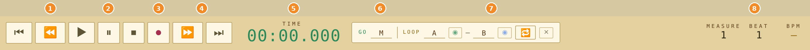
- ⏮ ⏪ ① gaan naar de eerste maat of de vorige, en ⏩ ⏭ ④ naar de volgende of de laatste. ▶ ⏸ ⏹ ② spelen af, pauzeren en stoppen.
- ⏺ ③ telt 3 · 2 · 1 en neemt je met de microfoon op over de begeleiding, in een WAV; ⏹ stopt en bewaart.
- GO ⑥: typ een maatnummer en druk op Enter.
- LOOP ⑦: ◉ neemt de maat waar het stuk is, voor A (waar hij begint) en voor B (waar hij eindigt); 🔁 zet de lus aan of uit en ✕ wist hem. Het is dezelfde lus als in de partituur.
- TIME ⑤ en MEASURE · BEAT · BPM ⑧ tonen waar het stuk is en in welk tempo.
Zo weet je dat het gelukt is: als je hier op ▶ drukt, begint het stuk te spelen in het Score en loopt TIME verder.
Licht, thema's en navigatie
Zon/maan regelt de helderheid (dubbelklik = normaal). Vier thema's, gedeeld door de hele suite. De ⊞-knoppen openen de andere apps, blijven verlicht zolang die open zijn, en een klik brengt ze naar voren.
Schermgrootte
Alles past het best met Chrome op 90% en de Score op 80% (de zoom van de Score zit in zijn werkbalk). Om Chrome op 90% te zetten, klik je in de app en druk je één keer op Ctrl − (Ctrl 0 gaat terug naar 100%); het werkt ook in de vensters die de Keyboard opent, zelfs zonder menu. Chrome onthoudt het voor de hele site: doe het één keer op je computer en één keer op musicmotionsuite.com. In de Console draait Ctrl + muiswiel boven een knop de knop (het volume), niet de zoom; gebruik het toetsenbord of houd de aanwijzer weg van de knoppen.
De testbank voor klankkleur en register. De stapsgewijze handleiding („hoe je hem gebruikt”) staat op zijn pagina.
De raadgever.
Hij vergezelt je terwijl je schrijft — alleen als je dat wilt. Hij spreekt op het juiste moment, precies waar je aan het werk bent, en bewaart de lange uitleg voor wanneer je erom vraagt.
De Coach openen · het oor 🎓 en de knop ⊞ coach
De Coach heeft twee delen: het berichtje, dat verschijnt waar je aan het werk bent, en het Coach-venster, waar je rustig leest. Je bedient ze allebei vanuit de bovenste balk van elke app.
Om hem te openen: druk op ⊞ coach ② in de bovenste balk van de Score, het Keyboard, de Console of de Player. Het Coach-venster opent apart.
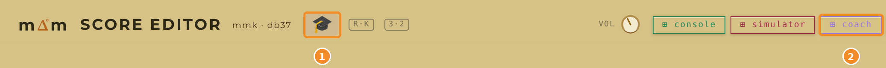
- Het oor 🎓 ①: één klik maakt het wakker of laat het slapen. Wakker klopt het zacht in violet: de Coach luistert en meldt je dingen. In slaap zegt hij niets. Wat je in één app kiest, geldt voor alle.
- ⊞ coach ②: opent het Coach-venster, met zijn tabbladen (zie Het Coach-venster).
Zo weet je dat het gelukt is: het oor klopt in violet en het Coach-venster opent met de begroeting van de Coach.
Wie je begeleidt en de taal · rechtsklik op 🎓
Een rechtsklik op het oor 🎓 opent een kort menu met twee dingen: wie je begeleidt en in welke taal de hele suite spreekt.
Om het te openen: rechtsklik op 🎓 ①.

- COACH KIEZEN ②: de Suite Coach is geduldig en begeleidt je stap voor stap, ook als je geen muziek kent. Salieri is de veeleisende meester, voor wie al weet (zie Gevorderde studie).
- TAAL ③: Español, English, Français, Nederlands of Deutsch. Ze geldt voor alle apps, en de ? openen de handleiding in die taal.
Zo weet je dat het gelukt is: het vinkje ✓ blijft staan bij wat je koos, en de teksten van de apps veranderen van taal.
Al de rest, op de Coach-pagina
Het Coach-venster en zijn tabbladen, wat de Coach je meldt terwijl je schrijft, het compositiespel van Niveau 1 en de gevorderde studie — contrapunt, harmonie, orkestratie en compositie — staan op de Coach-pagina, die groeit met elke versie.
Een passage herhalen: de A–B-loop
Op de maatstrook rechtsklik je op de maat waar de loop moet beginnen → „▼A Loop Start”, en op een andere voor het einde → „▼B Loop End”. Elk uiteinde krijgt zijn driehoekje en een verticale lijn in zijn kleur, en beide kun je verslepen. Vanaf dan herhaalt de passage zich eindeloos; de knop LOOP in de werkbalk blijft goud verlicht en zet de loop uit wanneer je wilt. „Clear Loop A + B” verwijdert beide. Gebruik het om de begeleiding te laten rondgaan terwijl je erover repeteert op het Keyboard — dat in zijn paneel ♩ Pulse ook de maat slaat.
Inzoomen op een traject: kaart en liniaal
Met het hele werk in beeld is de strook bovenaan een kaart: 226 maten op een handbreedte, om je weg te vinden. Wanneer je aan een passage wilt werken, rechtsklik → „Zoom — 16 bars from here” of „Zoom — A–B loop”: de partituur zoomt in op het traject en de strook wordt een liniaal die gelijnd is met de gravure, zodat elk getal en elke markering op haar maatstreep valt, en de liniaal volgt je wanneer je scrolt. „Whole work” keert terug naar de kaart en geeft je de zoom terug die je had.
Een .mxl openen zonder hem uit te pakken
Een .mxl is gecomprimeerde MusicXML: dat is wat Finale, MuseScore en Sibelius exporteren. De Score opent hem nu rechtstreeks, met dezelfde knop waarmee je een .xml opende, zonder hem met de hand uit te pakken. Hij kijkt naar de inhoud van het bestand, niet naar de naam, dus een .musicxml of .xml die in werkelijkheid gecomprimeerd is, komt er net zo goed in. Een weetje voor de musicus, niet over de Score: Finale v27.4 opent een .mxl alleen via File → Import → MusicXML; zijn File → Open weigert hem met „Invalid file type”, zelfs .mxl-bestanden die Finale zelf heeft geëxporteerd.
De opmaat en de woorden (2026-09-25). De onvolledige maat aan het begin komt binnen als maat 0, zodat de nummering overeenkomt met de gedrukte uitgave; een boog die op de opmaat begint, komt ook binnen. En expressiewoorden zonder metronoomaanduiding —„legato”, „espressivo”— gaan niet meer verloren: ze komen binnen als expressies met hun traject.
Herhalingen, tuplets en pedaal in MusicXML (2026-09-28)
De herhalingstekens ||: :|| van het bestand, met hun aantal keren, komen binnen als een herhalingssectie van de Score —dezelfde die de pop-up Rep aanmaakt—: de partituur bewaart de geschreven maten en vouwt ze uit bij het afspelen (Ave Maria van Schubert: 32 geschreven, 82 gespeeld). De :|| wordt niet meer als slotstreep getekend. Tuplets worden opgebouwd per aanzet —een akkoord telt één keer— en de rust die een groep opent, hoort bij de tuplet.
Het pedaal reist in beide richtingen. Bij het exporteren gaat elk zichtbaar Ped en ✱ naar buiten als MusicXML-pedaal, op zijn exacte tel, zodat Finale of een ander programma het toont; bij het importeren komt het pedaal van een ander programma binnen als jouw Ped- / ✱-tekens. Pedal simile en pedaaldiepte hebben geen vorm in MusicXML: ze blijven in de suite (onze eigen XML draagt ze volledig mee). Eerste en tweede volta's komen nog niet binnen.
Haken en accolades reizen mee met de partituur
Bij het importeren komen de familiegroepen van het bestand getekend binnen —haak, subhaak en accolade—, met de maatstreep doorgetrokken of onderbroken zoals het bestand aangeeft; een groep die in een andere genest is, wordt een subhaak, in welke volgorde het exporterende programma hem ook schreef. En bij het exporteren worden ze weer uitgeschreven: de heen- en terugweg is getest. Wat nog niet binnenkomt: de titel, de ondertitel en het copyright van de pagina, expressiewoorden die niet bij een tempo horen (pizz., arco, grazioso, unis., colla parte…), de korte naam van het instrument en de groepsnaam.
Het instrument.
De enige klankmotor van de suite: alles wat je hoort, klinkt hier. Vijfendertig toonhoogtes per octaaf, zuivere pythagorese stemming, en een getempereerde strook op elke toets om het verschil te horen.
Hoe het Keyboard stemt · SYSTEM, KEY, MODE en SENS
De eerste rij knoppen bepaalt hoe elke toets klinkt: in welke stemming, en in welke toonsoort.

- SYSTEM ① kiest tussen drie manieren van spelen. 12 TET is de gewone getemperde piano, en klinkt op de cyaanblauwe strepen van de toetsen. Axiomatic is de zuivere pythagorische stemming: elke toets bij zijn naam. Tonal speelt per trap van een toonsoort: wie geen piano kan spelen, speelt en componeert juist in elke toonsoort.
- KEY ② en ALTERATION ③ kiezen de grondtoon: Sol en ♮ is Sol, Si en ♭ is Si♭. Ze gaan alleen aan in Tonal.
- MODE ④: M is groot en m klein.
- SENS ⑤ is hoeveel de leidtoon stijgt, de noot die naar de grondtoon «trekt»: 0 helemaal niet, +1 normaal (daar begint hij) en +2 een sterker effect, ook op de chromatische noten.
- Het label ⑥ zegt waar je bent: AXIOMATIC, of de toonsoort, zoals G♮ MAJOR.
De toetsen van je computer spelen ook: welke toets welke noot geeft in elk systeem, staat in de sneltoetsen van het Keyboard.
Zo weet je dat het gelukt is: het label ⑥ toont wat je koos, en in Tonal speelt de onderste rij van het computertoetsenbord (Z X C V B N M) de toonladder van die toonsoort.
Acord Lab — akkoorden horen met de muis
Met de linkermuisknop speel je een noot. Een rechtermuisklik op het klavier zet het aanhouden aan: de noot die je speelt blijft klinken met zijn lampje aan, en elke noot die je daarna met de linkerknop speelt, komt erbij. Zo hoor je het hele akkoord zonder meerdere toetsen ingedrukt te houden. Nog een rechtermuisklik zet alles uit.
Zo weet je dat het gelukt is: de toetsen van het akkoord blijven verlicht en klinken samen.
De HiFi-uitgang · het volume en de kleur van de klank
Op de tweede rij zes draaiknoppen. Je draait ze door naar boven of naar beneden te slepen, en met een dubbelklik gaan ze terug naar neutraal. Het lampje ernaast gaat aan als de knop in gebruik is.

- VOL ①: het volume van wat je op het klavier speelt. Het Score heeft zijn eigen volume, en het totaal is de MASTER van de Console.
- REV ②: de galm, alsof je in een grote zaal speelt.
- ECHO ③: de echo, de noot die zich steeds zachter herhaalt. Hij begint uit.
- TONE ④: donkerder of helderder.
- WARM ⑤: warmer, met wat meer boventonen.
- BAL ⑥: de balans, meer naar links of meer naar rechts.
VOL is alleen voor het klavier; de andere vijf veranderen alles wat je hoort, ook het Score, en het zijn dezelfde als in de Console: verschuif je er hier een, dan schuift hij daar mee.
Zo weet je dat het gelukt is: als je aan de knop draait, verandert de klank en gaat het lampje aan; met een dubbelklik staat hij weer zoals eerst.
Opnemen en de opnamekoffer
Het Keyboard neemt op wat je speelt en bewaart het zodat je het later kunt horen. Het bewaart elke noot met zijn exacte stemming, zonder MIDI en zonder kwantisering: wat terugklinkt is precies wat je speelde.
Om op te nemen: druk op ⏺ ① in de balk Rec, speel, en druk op ⏹ om te stoppen. ▶ ② speelt de opname af en pauzeert haar als je opnieuw drukt; ⏪ en ⏩ springen tien seconden terug of vooruit, en de klok toont de tijd tot op de milliseconde (00.00.000).
Om de koffer te openen: druk op ☰ recs ③, naast ♩ pulse en ⊕ FX.

- load mmf en load mid ④ halen een opname van je computer. MIDI komt binnen als een getemperde laag, in cyaan.
- De nieuwe opname ⑤ verschijnt bovenaan, binnen handbereik: keep in list bewaart haar in de lijst en save as .mmf downloadt haar als bestand.
- De lijst ⑦: typ over de naam om hem te veranderen; ▶ speelt haar af, ⬇ bewaart haar als .mmf en ✕ wist haar.
- Onderaan de koffer staan de demo’s van Bartók en Bach, om uit te proberen.
PLAYBACK TEMPO ⑥ verandert de snelheid waarmee een opname klinkt, zonder de noten te veranderen: ze blijven even zuiver, alleen langzamer of sneller. Sleep de draaiknop naar beneden om langzamer te gaan, tot ×0.50 (de helft), of naar boven om sneller te gaan, tot ×2.00 (het dubbele). Met Shift beweegt hij fijn, en met een dubbelklik gaat hij terug naar ×1.00, de oorspronkelijke snelheid.

Het is handig voor twee dingen: een moeilijke passage langzaam opnemen en op tempo horen, of een stuk langzaam beluisteren om elke noot te volgen. Het geldt voor de ▶ van elke opname in de koffer, ook de .mmf- en .mid-bestanden die je laadt. Als je op ▶ drukt, gaat de koffer dicht; wil je de snelheid veranderen terwijl het speelt, open hem dan opnieuw met ☰ recs, beweeg de draaiknop en laat los: het stuk gaat verder waar het was, op de nieuwe snelheid.
Als je naar een andere dans springt, komt het klavier binnen gestemd in de toonsoort van dat stuk. En je kunt opnemen terwijl het Score speelt: de opname komt er schoon uit, alleen met wat jij speelde. Om de klank als audiobestand te bewaren, gebruik je ⬤ wav.
Zo weet je dat het gelukt is: na ⏹ verschijnt „NEW RECORDING READY”, en met ▶ hoor je wat je speelde. Met de draaiknop op ×0.50 klinkt het op halve snelheid, met dezelfde stemming.
♩ Pulse — de metronoom van het Keyboard
Het Keyboard heeft een eigen metronoom, uitgebreider dan die van het Score: hier kies je zelf het tempo, en je kunt een klik horen naast het lampje.
Om hem te openen: druk op ♩ pulse ① in de balk van het Keyboard.

- Het lampje ② knippert op de puls, en ▶ start ③ zet het aan en uit.
- tap ④: druk een paar keer op deze knop, in het tempo dat je in je hoofd hebt, en de metronoom neemt dat tempo over. De tikken moeten elkaar snel opvolgen: als er meer dan 2 seconden voorbijgaan, begint hij opnieuw te tellen.
- BPM ⑤: de draaiknop en het getal; BPM betekent slagen per minuut.
- Het menu ⑥: de klassieke tempi, van Largo · 50 tot Presto · 184. De draaiknop, het menu en tap horen bij elkaar: verander je er één, dan bewegen de andere mee.
- click ⑦ zet het geluid aan; het begint uit, alleen met het lampje. De draaiknop ernaast is het volume, en tone ⑧ de toon van de klik, lager of hoger.
Met de ⊗ vastgezet blijft de metronoom lopen, ook als je iets anders doet; niet vastgezet stopt hij als je hem sluit, zodat er niets per ongeluk blijft klinken. En hij slaat mee met het stuk: als er een .mmf uit de koffer of het Score speelt —ook in een A–B-lus—, volgt het lampje de maat en toont het getal het tempo van dat stuk. Het stuk heeft het laatste woord: als zijn puls begint, stopt de vrije metronoom vanzelf.
Zo weet je dat het gelukt is: het lampje knippert op het tempo dat je koos, en met click aan hoor je het. De PULSE van het Score is een andere: alleen licht, met het tempo van de partituur (zie de Pulse van het Score).
De noot en de horizon · wat er klinkt
Onder het instrument vertelt het Keyboard je welke noot je net speelde.

- De noot ①: haar naam en haar octaaf, zoals F♯ 3.
- De frequentie ②: hoeveel trillingen per seconde (Hz) ze heeft, precies, en in welk systeem je zit.
- De horizon ③, zoals die van een vliegtuig: met de lijn in het midden staat de noot op haar pythagorische plaats; hij stijgt als de noot omhoog trekt (de leidtoon) en zakt als ze omlaag trekt.
Zo weet je dat het gelukt is: als je in Tonal de leidtoon speelt —Fa♯ in Sol groot—, stijgt de lijn van de horizon.
Instrument — hoe de toetsen van het Keyboard klinken
Het Keyboard laat de hele suite klinken: ook het Score klinkt via het Keyboard. Instrument kiest hoe de toetsen klinken als jij ze speelt, met de muis of met het toetsenbord van de computer: piano, viool, fluit…
Om het te openen: druk op het veld Instrument ①, op de tweede regel van de balk. De lijst met alle instrumenten gaat open.

- filter ②: typ een paar letters („vio”, „flu”) en alleen de instrumenten met die letters in hun naam blijven over.
- De families ③: elke kolom groepeert gelijksoortige instrumenten: houtblazers, koperblazers, slagwerk, strijkers, stemmen…
- Klik op een instrument ④ en het is gekozen: de lijst sluit en het veld toont de naam. Het instrument dat klinkt, is gemarkeerd met een streepje links.
Wat je hier kiest, verandert de partituur niet. Als het Score speelt, komt elke noot bij het Keyboard aan met het instrument van zijn kanaal, en dat is wat je hoort (zie Het instrument van een kanaal). Bijvoorbeeld: je zet hier Violin en drukt op ▶ bij een stuk voor piano. Je hoort de piano, en als je er met de toetsen overheen speelt, klinkt dat als een viool. Je keuze wordt ook doorgegeven aan het Register, dat hetzelfde instrument laadt.
Zo weet je dat het gelukt is: het veld toont de naam die je koos, en als je een toets speelt, hoor je dat instrument.
A= · de referentietoonhoogte van de hele suite
De stemtoon is de La waarop alles gestemd wordt. Vandaag is dat bijna altijd 440 Hz, maar in andere tijden en orkesten lag hij lager of hoger.
Om het te openen: druk op A= 440 ①, rechtsboven. Tuning Reference gaat open.

- De zes stemtonen ②, met één klik: 415 barok, 430 klassiek, 432 natuurlijk, 440 modern, 442 helder en 466 renaissance.
- fine ③: voor een exacte waarde, van 380 tot 480 Hz, per halve hertz.
Als je de La verandert, wordt de muziek niet getransponeerd: het hele stuk klinkt iets lager of hoger, en de intervallen blijven dezelfde. Het is dezelfde A= als in het Score: je kunt een stuk laten spelen in het Score en hier, terwijl je luistert, de stemtoon van je instrument of je orkest zoeken. Als je daarna vanuit het Score opslaat, onthoudt het .mmf hem. De Pythagorean Tuner heeft zijn eigen regeling (Reference pitch A4): stem je je instrument daarmee op 442, zet dan hier ook 442. Meer in de veelgestelde vragen.
Zo weet je dat het gelukt is: de knop toont de nieuwe La (bijvoorbeeld A= 415), en de volgende noot die je speelt, klinkt er al mee.
Octaven en paniek
- OCTAVE SHIFT, onderaan het scherm (◀ ▶, of de pijltjes ← → van het computertoetsenbord), schuift de toetsen een octaaf lager of hoger, zonder je hand te verplaatsen.
- Escape zet alle geluid in één keer stil.
- In Tonal stemmen ↑ en ↓ de noot die je aanhoudt hoger of lager, live.
- De computertoetsen tellen volgens hun plaats, niet volgens hun letter: op een AZERTY- of QWERTZ-toetsenbord klinkt de toets die op dezelfde plek staat als op QWERTY.
Zo weet je dat het gelukt is: als je op ▶ drukt, verandert het getal van OCTAVE SHIFT en klinkt dezelfde toets een octaaf hoger.
Twee klavecimbels in de bank: wat er verandert als je ze bespeelt
De instrumentkeuze (Harp & Keyboards) heeft twee nieuwe klavecimbels: Harpsichord (Tonal) en Harpsichord (Well-tempered). Hetzelfde instrument —op het gehoor gestemd op Bachs Sinfonia's 9 en 11— met één verschil: het Tonal klinkt in de stemming van het huis (pythagorees volgens spelling), het Well-tempered stemt elke noot om naar Werckmeister III met A = 440 vast; vergelijk op het gehoor, kwinten en tertsen veranderen van kleur. Tegenover de piano: bijna geen dynamiek per toets (pp en ff verplaatsen het niveau nauwelijks; wat met de kracht meeademt, is de „tac” van het mechaniek), noten laten iets vóór de volgende los —barok détaché— behalve onder een boog, een overbinding of een expliciete lengte, en binnen een boog wordt de laatste noot vanzelf losgelaten, korter en lichter. Het klinkt zachter dan de piano bij gelijke VOL: dat is zijn echte niveau; VOL hoger zetten is het oor dichterbij brengen. Nog te doen: registers (8'+8', 4', luit) en sympathische resonantie.
Het klavecimbel, afgerond: schittering bovenaan en een bas die niet duwt
Er veranderden twee dingen, en daarmee is het instrument afgerond. Het eerste is de schittering in de hoogte: bij de aanslag propt de bas 77 boventonen in de band van 3 tot 8 kHz —vandaar de ruwheid, „een bestekla die op een tafel landt”— terwijl C5 er tien plaatst, ver uit elkaar: hetzelfde wordt daarboven als schittering gehoord. Beide klavecimbels voegen nu bij de aanslag een schitteringsimpuls met vaste frequentie toe (3,5 · 5,2 · 7 kHz), in de bas nauwelijks aangeduid en in de hoogte volledig. Het tweede is de balans: het instrument kwam vlak uit —hetzelfde niveau op C2, C3, C4 en C5, wat geen enkel echt instrument doet—. De bas zakt 3,9 dB op de laagste noot en 1,5 dB op C3; de hoogte blijft onaangeroerd. Hij verdwijnt niet: hij laat zich gelden door zijn duur, 22 seconden uitklinken tegenover 3,5 bovenaan. En het mechaniekgeluid is niet mee gezakt — de toetsklop en de „tac” zijn waar ze waren.
Harp, gitaar en pizzicato klinken nu getokkeld
Alle drie waren het vlakke presets: dezelfde kleur over het hele bereik. Nu zijn ze per register gemodelleerd, zoals de piano en het klavecimbel, met elk vier ankerpunten. De harp: de laagste snaar klinkt 17 seconden na en de hoogste een halve seconde, de klankkast klinkt op haar eigen frequenties, en aan het begin is er een stoot van de klankbodem en een kleine toonhoogteglijding; ze heeft geen demper, dus de noot mag doorklinken tot ze vanzelf uitsterft (l.v.) — étouffé is een techniek en die is er nog niet. De gitaar: omwonden en blanke snaren klinken verschillend, en je hoort de overgang wanneer je naar de 3e snaar gaat; het uitklinken gaat van 9,5 seconden onderaan tot 1,1 bovenaan, en ook zij laat de snaar doorklinken. Pizzicato, solo en sectie: de hoge kam ontneemt de snaar snel haar energie —bovenaan sterft de noot in 50 tot 100 milliseconden— en de speler dempt haar met de hand; de sectie klinkt zachter en iets minder samen, omdat niet iedereen op hetzelfde moment tokkelt. En de dynamiek volgt een andere wet: bij een getokkelde snaar opent de kleur nauwelijks met de kracht —de vinger en het aanslagpunt bepalen haar—; wat van pp naar ff groeit, is de klap en het contactgeruis. Speel hard en de helderheid licht niet op zoals met de strijkstok: de aanzet wordt groter.
De toonsoort van het Keyboard volgt het stuk
Als er een stuk speelt vanuit het Score of vanuit de koffer, verandert het Keyboard vanzelf van toonsoort om mee te spelen, en het label bovenaan zegt welke het is. Heeft het stuk meerdere delen in verschillende toonsoorten, dan verandert het bij de overgang van het ene naar het andere.
Een detail: de partituur geeft alleen de voortekening, en dezelfde voortekening hoort bij twee toonsoorten (Si♭ groot en sol klein hebben dezelfde mollen). Zegt het stuk niet welke het is, dan neemt het Keyboard de grote. De stukken van de suite met hun fiche die de toonsoort van elk deel geeft, tonen de juiste toonsoort, zoals «fa klein».
Zo weet je dat het gelukt is: terwijl het stuk speelt, verandert het label van de toonsoort als het deel verandert.
⬤ wav — wat je hoort als audio bewaren
⬤ wav bewaart alles wat er in de suite klinkt in een audiobestand (.wav): wat je op het Keyboard speelt, een opname uit de koffer of een stuk uit het Score. Het bestand gaat open op elke computer of telefoon, en je kunt het doorsturen of bewaren als herinnering aan een les.
Om op te nemen: speel eerst een noot, want de audio moet lopen (anders vraagt het Keyboard het je). De knop staat naast ♩ pulse, ⊕ FX en ☰ recs.

- Druk op ⬤ wav ①. Vanaf dat moment neemt hij alles op wat klinkt.
- Speel, of laat een opname of het stuk klinken. De knop ② wordt rood en telt de seconden.
- Druk opnieuw op de knop om te stoppen. Het bestand wordt vanzelf gedownload in de downloadmap van je browser (Downloads), met een naam als mm-capture-153012.wav: het uur waarop je stopte.
Hij neemt op wat je hoort, zoals je het hoort. Als je iets verschuift in de Console terwijl hij opneemt —de MASTER, de faders, de pan, de galm—, komt dat in het bestand; staat de MASTER op 20 %, dan komt het bestand uit op 20 %. Zet het volume vóór de opname zoals je het wilt horen.
Vanuit het Score doe je hetzelfde met File → SAVE AS WAV: het speelt het stuk, of het stuk dat met SELECT is gemarkeerd, en downloadt het bestand met de naam van het stuk.
Voor wie het wil weten: het is geen mix die achteraf wordt berekend, maar wat op dat moment naar de luidsprekers gaat, in stereo en op 24 bit. Daarom bewaart hij ook een klik of een kras, als die er was.
Zo weet je dat het gelukt is: tijdens de opname is de knop rood en lopen de seconden op; als je stopt, verschijnt het .wav-bestand in Downloads, en als je het opent, hoor je wat er klonk.
Het vibrato zet in, ademt en volgt de groep
Bij strijkinstrumenten en bij alles wat aanhoudt, begint het vibrato niet meer volledig met de noot: het zet in na de aanzet —de stok grijpt eerst de snaar en beweegt pas daarna— en op een korte noot zet het helemaal niet in. Zijn snelheid volgt het gebaar binnen een klein bereik (±12% van de snelheid van de preset), want een speler varieert de breedte veel meer dan de snelheid. En zijn breedte volgt de hiërarchie van de gebalkte groep: meer op de eerste noten dan op de volgende, zoals de druk dat al deed.
De harp: de snaar, de vingertop en de klankkast
Vijf hoorbare verfijningen. De spanningsglijding van de aanzet —die tiende van een seconde waarin de getokkelde snaar zich op haar toonhoogte zet— hangt nu af van het materiaal: de omwonden bas geeft nauwelijks mee, darm geeft zijn deel, en het nylon van de hoogte geeft twee keer zoveel. Het schrapen van de vinger wanneer die de snaar stilzet, duurt en weegt naargelang het register. De overgang darm-nylon lag een octaaf te laag, zodat E4, G4 en A4 —die van darm zijn— nylonwaarden kregen: verholpen. Bij f en ff opent de klap zich in de hoogte meer in plaats van minder: het lage plafond van de hoogte hoort bij de toon, niet bij de transiënt, en een harpist die drukt, moet sterker klinken — dit is de harp van Mahler. En daarboven, waar de snaar in minder dan een halve seconde uitsterft, blijft de resonantie van de klankkast nagalmen: de klank bestaat uit twee dingen, de tokkel en wat er daarna nazoemt.
⊕ FX · galm, echo, porta en rotary voor wat je speelt
Om het te openen: druk op ⊕ FX ①, naast ♩ pulse. Bovenaan staat het instrument van het kanaal waarop je speelt: de effecten horen bij dat kanaal.

- Reverb ②: de galm van een grote zaal.
- Echo wet ③: hoeveel echo je hoort; Echo fb ④: hoe vaak hij zich herhaalt; Echo time ⑤: hoe lang elke herhaling duurt, in milliseconden.
- Porta ⑥: de noot glijdt naar de volgende, zoals een viool of een stem.
- Rotary ⑦: de draaiende luidspreker van het jazzorgel. Op 0 staat hij uit; als je eraan draait, gaat hij van traag naar snel. Dubbelklik: Off.
Deze effecten veranderen alleen wat je live speelt. Wil je dat de partituur met galm of echo klinkt, dan schrijf je ze in het Score, in zijn eigen Sound FX (zie Sound FX). En ze zijn niet hetzelfde als REV en ECHO op de balk, die gelden voor alles wat klinkt. Het popup blijft open (⊗) tot je het sluit, en je sleept het aan zijn kop.
Zo weet je dat het gelukt is: als je speelt met Reverb of Echo wet hoger, hoor je de zaal of de echo; de partituur verandert niet als ze speelt.
De partituur.
Je schrijft muziek per kanaal met het mini-keyboard in de TODAL-modus: je speelt op de toontrappen. Zelf maakt het geen klank — die komt van het Keyboard.
Hoe opmaten nu geschreven worden
De opmaat is niet langer een apart vak: ze is maat 0. Je schrijft erin zoals in elke andere maat —meerdere waarden, overbindingen, kopiëren en plakken erbinnen— en elke noot klinkt op haar plaats (vroeger klonk de hele opmaat samen op seconde 0). Het .mmf-formaat is ongewijzigd.
Delete & close gap ⇤
De pop-up „Select · Actions” heeft een nieuwe rij: „Delete & close gap ⇤”. Die wist de selectie en schuift wat volgt terug om het gat te dichten —wat over een maatstreep heen blijft hangen, wordt automatisch gesplitst en overgebonden. Eén enkele Undo.
De muziek opnieuw in maten indelen
De pop-up TIME heeft een nieuwe knop naast Apply to All Channels: „Re-bar the music”. Apply verandert alleen het geschreven maatteken; Re-bar herverdeelt het hele stuk over de nieuwe maten (en stuurt, met UPBEAT aan, het juiste aantal kwartnoten naar de opmaat). Met een maatsoort per traject weigert hij en geeft hij een waarschuwing.
Het anker ▲/▼ op de editors
Het anker ▲/▼ dat een pop-up boven of onder de klik vastzet, wordt nu ook gerespecteerd door de noot- en markeringseditors (EXPR, DYN, Beam, Stem, Interp, tuplet, Hairpin, section/repeat) en door het paneel CHANNELS, dat de werkbalk niet meer met een lange lijst bedekt.
Een nieuw bestand openen: schoon laden
Een nieuw .mmf openen neemt niets meer over van het vorige —geen noten, geen markeringen, geen Undo-geschiedenis. (Bug opgelost: vroeger bracht een Undo vlak na het openen van een bestand de noten van het vorige bestand terug.) Je voorkeuren en het klembord blijven bewaard.
Paginamodus: bewerken op het blad
De knop 📄 PAGE in de werkbalk schakelt tussen de doorlopende strook en de weergave als blad: de partituur verschijnt als A4-pagina's in hetzelfde venster, met dezelfde gravure als de afdruk, maar erbovenop bewerkbaar. Een tweede keuzelijst kiest de weergave (Whole page · Fit width · Side by side). Op het blad kun je al een noot selecteren en daar de cursor plaatsen, een markering selecteren (dynamiek, expressie, articulatie, tempo, agogiek) om haar met de zoomknoppen van grootte te veranderen, of op een lege plek klikken om de cursor te plaatsen (die vastklikt op het raster). Een rechtsklik opent dezelfde contextmenu's als op de strook (noot, overbinding, boog, tekst, markering, kanaal), en bij het aanwijzen verandert de aanwijzer in een hand boven alles wat aanklikbaar is. Tijdens het afspelen lichten de rode lijn en de klinkende noten op het blad op. Het blad heeft een eigen zoom en scroll (scrollwiel; Shift+scrollwiel zijwaarts; Ctrl+scrollwiel zoom). Het is omkeerbaar en laat de strook onaangeroerd. Op het blad kun je ook noten en markeringen verslepen; om veel te schrijven is de strook handiger.
Paginamodus: bladinstellingen in de werkbalk
In paginamodus (de knop 📄 PAGE / ▦ SCROLL wisselt tussen blad en strook) staan naast de weergavekeuze (Full page · Fit width · Side by side) twee nieuwe uitklapmenu's om het blad live bij te stellen, zonder 🖨 PRINT VIEW te openen. „Bars/system” bepaalt hoeveel maten per systeem (Auto, of 1 tot 9) en „Staff space” de grootte van de notenbalk (3 tot 9 mm); het blad wordt meteen opnieuw opgemaakt terwijl je ze verandert. Ze blijven gesynchroniseerd met het venster 🖨 PRINT, in beide richtingen. Standaard: Auto · Staff 5 mm.
Toonaardwisselingen per traject
De voortekening kan midden in het stuk veranderen: in de pop-up KEY komt „This Bar” tot leven met de rij From M / To M — kies de toonaard en het traject waarover hij geldt; buiten het traject keert de vorige voortekening terug, en wie de toonaard kiest die al geldt, verwijdert de wisseling. De gravure volgt de klassieke conventie: herstellingstekens ter herinnering aan het eind van de vertrekkende maat, een automatische dubbele maatstreep, de nieuwe voortekening na de maatstreep en de noten daarna. De ruimte wordt automatisch gereserveerd.
Stemmen die één notenbalk delen (Layers)
Een kanaal kan op de notenbalk van een ander kanaal worden weergegeven: in het menu ☰ van CHANNELS kiest het uitklapmenu Staff de gastheer. De gast krijgt geen eigen rij (piano = twee notenbalken, elke stem afzonderlijk te dempen) en zijn stokken staan in de tegenovergestelde richting. Om de gast te bewerken: rechtsklik op de kanaalnaam in de marge — dat wisselt het actieve kanaal van de rij, en het label toont wie je bewerkt.
Het octaafteken (8va / 8vb / 15ma)
De 8va is inkt, geen muziek: de noten blijven bewaard op hun echte toonhoogte (afspelen, Coach en Keyboard merken er niets van); het teken verschuift alleen waar ze geschreven worden. Drie ingangen: selectie + O (wisselt 8va → 15ma → uit; Shift+O = 8vb/15mb), de rij OCTAVE van de pop-up CLEF (From M / To M; „—” wist het bereik in alle kanalen), en de lijn zelf: bij het aanwijzen licht ze goud op met een handcursor — sleep met de rechtermuisknop om haar verticaal te plaatsen (blijft bewaard), Supr wist haar, en O laat haar wisselen zonder te selecteren.
Bis, eis of een dubbele alteratie schrijven
De Acc-knoppen in de noteneditor veranderen de alteratie maar niet de letter: vanuit een c kun je cis of ces bereiken, nooit bis. En er is geen knop die de ene schrijfwijze door de andere vervangt, met opzet: deze suite kent geen enharmonie — in pythagorese stemming ligt bis een komma boven c, het zijn twee verschillende klanken. Wil je een bis, schrijf dan de noot B en geef haar een ♯ met Acc; hetzelfde voor eis, fisis of deses. Wanneer de partituur uit een MIDI-bestand komt, dat geen schrijfwijzen bevat, leidt de Player ze bij het omzetten af uit de voortekening (bis, eis en dubbele alteraties waar ze horen), en in de Player zelf verandert de knop ♯↔♭ van de noteneditor de schrijfwijze van één noot of van een hele passage voordat die naar de Score gaat.
Een alteratie verschuiven (Acc↔)
De ruimte rond alteraties in dichte passages wordt automatisch berekend (het raster reserveert de echte breedte van elk teken). Voor overblijvende botsingen — een herstellingsteken boven op een kruis in hetzelfde akkoord — heeft de noteneditor de rij Acc↔: ◀/▶ verschuiven alleen de alteratie van de geselecteerde noot (2px per tik, ingedrukt houden om te herhalen), ⟲ zet terug. Het werkt per noot, en de verschuiving reist mee in het bestand.
Het declaratieve blad: Gap in mm en Pages
Elke dimensie van het blad heeft één eigenaar: Staff mm is de grootte van de muziek (heilig — wordt nooit automatisch verkleind), Sys gap de ruimte tussen de systemen in millimeter op papier (los van de notenbalk), Bars/system de dichtheid, en Pages het doel: geef aan hoeveel pagina's het stuk moet beslaan en de paginering bespaart zelf ruimte (tussenruimte → ademruimte vanaf pagina 2 → titelblok, met ondergrenzen). Is het doel onmogelijk, dan meldt de voettekst van het venster het haalbare minimum — en past het toe. Het blad respecteert ook je opmaak (de notenbalkafstand die je hebt bewerkt, reist mee naar de pagina) en je kunt de paginaweergave van overal openen — de scrollpositie wordt hersteld wanneer je ze verlaat.
Het computertoetsenbord
In WRITE/TODAL schrijf je met het toetsenbord: de letters spelen op de toontrappen, het numerieke toetsenblok kiest de duur (1 = 64ste … 7 = hele noot, de punttoets = punt), ↑/↓ verplaatsen de geselecteerde noot een octaaf omhoog of omlaag, ←/→ verschuiven het klavier, +/− op het numerieke toetsenblok stellen de APO bij (fijnstemming, ±2) en de rij 1–0 bouwt akkoorden. CapsLock zet TODAL aan en uit. Het volledige overzicht staat in het sneltoetsenblad.
De Coach en het automatisch aanvullen van de maat
Een waarde of een punt die niet past: als je een punt probeert toe te voegen — of een waarde schrijft — die niet past in wat er van de maat overblijft, waarschuwt de Coach je (tweetalig, met de 🎓 aan) en laat hij de maat niet overlopen. Om over de maatstreep te gaan, schrijf je een andere noot en bind je die over. (De punt bij een noot zet je met rechtsklik → Dot.) Automatisch aanvullen van de maat: als je een noot schrijft en dan naar de volgende maat springt terwijl je de vorige half af laat, vult de rest van die vorige maat zich vanzelf met de rust(en).
De zwevende strook: schrijven en bewerken
Een zwevende strook bevat de nootwaarden (duurwaarden, punt, voorslagen, tuplets) die je naar de notenbalk sleept; bij het loslaten blijven ze geselecteerd. Ze is ook een bewerkingstafel: op de geselecteerde noot breng je articulaties (staccato, accent, tenuto, marcato, fermate…) en dynamiek aan, plus bogen, stok en waardestreep — zonder andere panelen te openen.
De zwevende strook: noten verplaatsen en verkorten
Een noot verplaatsen door haar met de strook vast te pakken, klinkt niet meer (vroeger liet ze zich horen); en als je de muis uit het gebied haalt, valt de noot vanzelf neer: niets blijft aan de aanwijzer hangen. De kleinere waarde overnemen: sleep een waarde met kortere duur (bijvoorbeeld een achtste) op een bestaande noot (bijvoorbeeld een kwartnoot) en die noot neemt de kleinere waarde aan; het vrijgekomen gat vult zich vanzelf met rust(en), zonder de rest van de maat te verschuiven. Het werkt ook met rusten. Leesbaarheid: de knoppen van de strook zien er scherper uit, en in de donkere thema's (dark / grey) springt de pop-up van de strook eruit met een lichtkrans.
Bogen klinken, en ze hebben een richting
De boog klinkt nu en heeft een richting: voorwaarts getekend is hij een decrescendo; achterwaarts, over de vorige maat, een crescendo. Het kleurverloop van teal naar goud laat het je zien — de volle kleur (teal) markeert het anker, waar klankvolume en helderheid vol zijn, en gaat over in goud naar het zachtere uiteinde. Een lange boog bloeit open vanuit bijna niets.
Gebonden paren (nun ∩∪∩ · unu ∪∩∪): in de boogeditor kun je hem een puls per twee geven. Hij ziet er nog steeds uit als een gewone boog, maar hij klinkt als gebonden paren: de 1e noot van het paar meer gemarkeerd en de 2e lichter (nun begint sterk; unu begint zacht). Het verschil hoor je vooral in de aanzet — de sterke noot behoudt een vleugje articulatie en de zwakke komt gebonden en soepel binnen; de zwakke is ook ongeveer ~20% zachter. Het werkt met elk instrument.
Zie de curve voordat je ze hoort · Peak/Valley · Mirror · de adem
Zowel de boogeditor als de editor van het nootteken tonen nu een live tekening van de curve van het gebaar, tussen twee lijnen: Peak (het volste) bovenaan en Valley (het zwakste) onderaan. Het verloop gaat van teal (vol) naar goud (zwak), zoals op de notenbalk. Als de boog nog geen eigen Peak/Valley heeft, wordt de curve gestippeld getekend met een label „auto”: ze toont je de diepte die het programma zelf kiest. De vorm is een vloeiende curve (een messa is een afgeronde bult, geen driehoek). Peak en Valley zijn relatief tot de dynamiek, geen vaste niveaus: een > vanuit mf en een > vanuit ff zijn niet hetzelfde — de dynamiek bepaalt, en het gebaar springt nooit naar een absoluut niveau. De adem: de grootte van de zwelling wordt gemeten aan de echte seconden van de frase en aan hoeveel lucht de dynamiek meedraagt, zodat een korte, snelle boog niet „pompt” en een mf over een lange frase vol blijft. De Mirror van de boogeditor draait nu ook de vorm om (openbloeien ↔ wegsterven, messa ↔ omgekeerd), bovenop de kant van de boog en de hoogte.
Wat het gebaar van de legatoboog is. Hetzelfde idee als het gebaar van de noot, maar over de hele frase: de curve loopt van de eerste noot van de boog tot de laatste, en elke noot krijgt het niveau dat op haar plaats valt. De vormen zijn dezelfde; sost houdt de frase gelijk. nun en unu zijn geen curves: ze markeren de aanslag van elk paar noten en laten het niveau vlak. Wil je daarnaast dat één noot van de boog iets eigens doet, geef haar dan haar notengebaar: de twee tellen op.
Het nootteken (de laag van de vertolker)
Expressie per noot, bovenop de dynamiek. In de noteneditor kies je op de rij „Intp” het teken: < bloeit open, > sterft weg, <> messa di voce, >º< omgekeerd (forte → piano → crescendo, ideaal voor koper) en º niente. Sleep het om het hoger of lager te zetten. Rechtsklik op het teken om de Interp Editor te openen: Size, en Value — de dynamiek van het gebaar (Peak luid / Valley zacht; standaard f en p). De noot rust op haar eigen dynamiek.
Een tuplet bewerken
Rechtsklik op de haak van de tuplet om zijn editor te openen. Number On/Off toont of verbergt het getalletje. Angle (◣ ↻ ◢) kantelt de haak; het getal blijft rechtop. Size schaalt de noten niet meer: het verkort of verlengt de haak (zijn lengte). Move plaatst hem — de greep ↕ zet hem hoger en lager, de greep ↔ schuift hem opzij; je kunt de haak ook rechtstreeks op de notenbalk slepen. Wanneer de noten gebalkt zijn, rust de haak op de waardestreep; boven kwartnoten, halve noten of rusten, op de nootkop.
Alles selecteren
In de pop-up „Select · Actions” (rechtsklik op de knop SELECT) staan bovenaan twee nieuwe rijen: „Select all in channel” selecteert het hele actieve kanaal van begin tot eind, en „Select all channels” selecteert het hele stuk (alle zichtbare kanalen). Eenmaal geselecteerd pas je Copy, Cut, Transpose of Clear in één keer op alles toe.
Muziek naar een toonaard transponeren
In de pop-up KEY staat, onder de rij met het bereik, een nieuwe knop „⇅ Transpose music to key”. Open KEY, kies de doeltoonaard (pijltjes + Major/Minor) en klik erop: de hele muziek verhuist naar die grondtoon. Een echte transpositie — de intervallen blijven behouden, het is niet alleen een andere spelling van de voortekening. Ze respecteert het bereik van de pop-up: All CH (elk kanaal) of This CH (het kanaal van de cursor).
Score Info: auteur & copyright
De fiche van het stuk (knop Score Info) krijgt twee velden erbij: Author en Copyright — dat begint met „© {year}” — naast Title, Subtitle en Composer. Alles reist mee in het .mmf-bestand: wanneer je een stuk importeert, vult de fiche zich met wat het bestand meebracht, zodat de titel van de afdruk niet meer leeg blijft.
Opslaan
De knop SAVE (of Ctrl/Cmd+S) schrijft met één klik terug naar hetzelfde .mmf-bestand; MENU FILES → EXPORT MMF exporteert een nieuwe kopie.
Afdrukkop (alleen pagina)
Het venster 🖨 PRINT heeft een rij „Print header · page only” om Title / Subtitle / Composer / © alleen voor het afgedrukte blad in te stellen. Die gaat boven Score Info; laat je ze leeg, dan gebruikt de afdruk Score Info. Ze opent vooraf ingevuld, zodat je alleen bewerkt wat verandert, en ze wordt met het .mmf bewaard. Ernaast vergroot „T size” de afgedrukte titel en „C size” de componist.
Grootte van markeringen (Size −/+)
Rechtsklik op een dynamiekteken, een tempo of een tekst en er verschijnt een rij „Size” met − en + om de lettergrootte van die markering te veranderen; met de markering geselecteerd werken ook de zoomknoppen +/−. Elke stap is klein; houd ingedrukt om te herhalen.
Tempo: figuur en plaatsing
Het metronoomcijfer (♩=58) wordt kleiner gedrukt dan het tempowoord (Lent), zoals in de klassieke gravure. Het tempo kan horizontaal en verticaal versleept worden om het boven de maat te plaatsen waar je wilt.
Tekst toevoegen in de paginaweergave
Teksten — instrumentnamen of aanwijzingen zoals „dolce” — kunnen nu ook in de paginaweergave worden toegevoegd, niet alleen op de strook. Klik waar je de tekst wilt (daar komt de cursor), druk op de knop TEXT, typ en druk op Apply; daarna kun je hem verslepen om hem te plaatsen.
De geselecteerde noot wordt niet afgedrukt
Het cyaan kader rond de geselecteerde noot verschijnt niet meer op het afgedrukte blad of in de PDF: de selectie is alleen een bewerkingshulp op het scherm. Het blad komt er schoon uit.
Instellingen van het afgedrukte blad
De voettekst van de afdruk is nu één regel (auteur · ©). In het venster PRINT kiest „Bars/system” hoeveel maten per systeem (Auto, of 1 tot 9) en stelt „Staff space” de grootte van de notenbalk in, van 3 tot 9 mm, in de modus Auto.
De partij van één instrument afdrukken (vanuit het Panel)
In het Panel (gesplitste weergave) kies je de kanalen met de chips, en de knop 🖨 PRINT VIEW — voorheen „📄 PAGE” — opent de afdrukweergave (hetzelfde venster als FILE → Print/PDF) met alleen die kanalen: zo druk je de partij van één instrument af. In het venster kiest de schakelaar „Show” tussen Full score (alle zichtbare kanalen) en Selected CH (alleen de kanalen die je in het Panel koos). Het veld „Part name” — met zijn groottevakje en een vinkje „Part” — drukt een label af linksboven op pagina 1; standaard is dat „Score” voor de volledige partituur of de instrumentnaam voor een partij, en het is bewerkbaar. Ctrl+scrollwiel boven de afdrukweergave zoomt alleen de bladen in, niet de werkbalk; het springt terug naar 100% bij het openen of bij een wijziging van View.
Het Panel: selecteren per gebied en verschuiven
Op het Panel tekent Alt + slepen een selectiekader en selecteert het noten per gebied → gouden kaders; die selectie klinkt met Play of Shift+Space, net als op het hoofdcanvas. En slepen met de linkermuisknop (hand: grab-/grabbing-cursor) verschuift het Panel in beide richtingen — een alternatief voor Shift+scrollwiel.
Articulaties die je kunt lezen
Punten, streepjes en accenten gaan naar een korpsgrootte van 56 (was 30): het muziekfont ontwerpt zijn tekens voor vier tussenruimten van de notenbalk en wij zaten op 62 % daarvan — op het blad was het staccatopunt geslonken tot anderhalve pixel. Al bewaarde tekens houden hun grootte; 56 geldt voor nieuwe. En zes tekens die niets tekenden omdat ze in het ingebedde font ontbraken —de stress, de Ped en de ✻, de twee streektekens en het tr-golfje— verschijnen nu.
De stemmen van één hand splitsen
Voor twee stemmen in één hand: maak het volgende kanaal zichtbaar met zijn sleutel, laat het op zijn eigen rij en verplaats noten met Ctrl + slepen —de noot, of de hele meervoudige selectie, belandt in het kanaal van de notenbalk waarop je haar loslaat, met haar waarde, waardestrepen, voorslagen en articulaties—. Rechtsklik daarna op de kanaalnaam: Put CHn on CHm voegt ze samen op één notenbalk en de stokken ordenen zich vanzelf (bovenste ↑, onderste ↓). Hetzelfde menu heeft Unfold the layers om een tijdje te bewerken: het is alleen weergave, het bestand behoudt de samenvoeging.
De toonaard over een selectie
De pop-up KEY krijgt het bereik Selection: met een gesloten selectie neemt de toonaardwisseling haar maatbereik over en bij het verlaten ervan keert de vorige toonaard vanzelf terug, met een dubbele maatstreep aan beide grenzen. Als de selectie in maat 1 begint, wordt de toonaard van het werk gewijzigd — en zo verdwijnt het herstellingsteken ter herinnering aan het begin, dat je niet kon wissen omdat het geen object is maar inkt van de wisseling.
Markeringen landen waar ze horen
De zeven tekens die tegen de nootkop aan liggen —staccato, staccatissimo, tenuto, portato, accent, marcato en stress— landen nu in het midden van de aangrenzende tussenruimte, boven en onder gelijk: met de stok omhoog zit de punt niet meer op de kop. Een teken schuift niet meer opzij wanneer je het vergroot —zijn plaats ligt vast ten opzichte van de kop— en meerdere tekens op één noot stapelen zich op een tussenruimte van elkaar. Elk type krijgt zijn eigen grootte: triller, dubbelslag en mordent 36 · Ped. en ✻ 30 · tenuto 48 · caesuur 42 · arpeggio 18 · pizz. en arco 24 · de rest 56 (al bewaarde tekens houden de hunne).
Tenuto, tremolo en streektekens
Drie tekens zitten niet meer in de weg. De tenuto staat gecentreerd op de stok, alleen verschoven naar de kant tegenover die waar hij vertrekt. De tremolo wordt op de stok getekend, op halve hoogte, in plaats van op de kop te landen. En de streektekens (⊓ afstreek, V opstreek) staan altijd boven de notenbalk, een halve tussenruimte boven de bovenste lijn; als de noot hoger klimt, stijgen ze mee om er vrij van te blijven —van de kop of de punt van de stok—.
Het arpeggio is nu een teken
Waar vroeger het cursieve woord arp. stond, staat nu het echte teken: de verticale keten van golfjes links van het akkoord, van de laagste noot tot de hoogste, die met het akkoord meegroeit. Voor een arpeggio op piano of harp dat over beide handen loopt: rechtsklik op het teken → Extend to CHn (staff above), en Cut at this staff om het terug te nemen. De optie verschijnt alleen als er op dezelfde tel een noot boven staat.
Bogen en overbindingen raken niet meer los
Er waren twee manieren om een boog te breken zonder het te merken: een noot wissen vanuit de noteneditor en noten naar een ander kanaal verplaatsen met Ctrl + slepen. Beide zijn verholpen, en het wissen in de noteneditor gaat nu ook in de undo. Bij het openen van een bestand laat een overbinding waarvan het doel niet meer bestaat —of een rust is, of van toonhoogte veranderde— zichzelf los, met een waarschuwing in de console: geen bogen meer die aan niets hangen.
De boog ontwijkt alles wat eronder ligt
De expressieboog gaat omhoog tot hij vrij is van alles wat eronder doorloopt —koppen, alteraties en uiteinden van stokken, dat wil zeggen de waardestreep— met vijf pixels lucht en zonder ooit meer dan vier tussenruimten te stijgen. De lijn is niet langer egaal: het is een gevulde curve, dun aan de uiteinden en dik in het midden. En de klik landt waar je hem ziet: tekening en gevoelige zone komen uit dezelfde berekening.
Dubbelklik = het hele akkoord
Nieuwe sneltoets: dubbelklik op een nootkop om het hele akkoord te selecteren —elke noot van dat kanaal op die tel— in dezelfde meervoudige selectie die Alt + klik opbouwt. Alles wat je al doet, is van toepassing: het akkoord in één keer articuleren, het horen met Shift + Space, het transponeren, het wissen. Vroeger moest je met Alt + klik noot voor noot werken.
Twee stemmen op één notenbalk: secunden en stokken
Wanneer twee stemmen op dezelfde notenbalk een secunde van elkaar liggen —of op een unisono— kunnen de koppen niet dezelfde plaats delen: een van beide schuift opzij. Welke opschuift, en naar welke kant, wordt niet door de toonhoogte bepaald: dat bepalen de stokken. De rode draad om te onthouden: de lijn van de stok valt altijd tussen de twee koppen; wat verandert, is hoeveel lijnen er zijn.
De kant. Als de twee stemmen hun stokken naar tegengestelde kanten hebben, lijnen de stokken zich uit en gaat de kop van de stem met de stok omlaag naar rechts. Als beide de stok naar dezelfde kant hebben, zijn er geen twee stokken om uit te lijnen: de stemmen lezen als één akkoord en de akkoordregel geldt —met de stok omlaag gaat de lagere noot naar links; met de stok omhoog de hogere naar rechts—. Een akkoord wordt nooit gesplitst: als de stem die zou moeten opschuiven een akkoord is en de andere een enkele noot, schuift de enkele noot op, en de kant wordt nog steeds door de stokken bepaald.
Wat er beweegt. Met één stoklijn schuift alleen de kop op en blijft de stok waar hij was: je ziet één stok tussen de twee koppen. Met twee lijnen reist de hele noot mee, stok en waardestreep inbegrepen. Het unisono volgt dezelfde regel: de twee koppen komen naast elkaar te staan in plaats van op elkaar gestapeld. En de maat reserveert de breedte van wat er bewoog, zodat de volgende noot niet in de knel komt. Wanneer je de lagen uitvouwt om te bewerken, herschikken de stokken zich niet meer: de gastheer blijft ↑ en de gast ↓, zoals ze eruit zullen zien wanneer ze weer samengevoegd zijn.
Het duwtje neemt de stok mee · Undo reikt verder
Wanneer je de inkt van een noot verschoof met Shift + slepen, bleef de stok staan waar hij was; nu volgt hij de kop, waardestreep inbegrepen. En undo bereikt zeven dingen die er vroeger aan ontsnapten: de voortekening (die van het werk en die van elk traject), de alteratie, de octaaftekens, de sleutels per traject, de kanaalnaam, de fiche van het werk en de samenvoeging van lagen. Een octaafteken plaatsen en de toonaard veranderen maken nu ook een momentopname —de toonaard alleen wanneer de wijziging van jou komt, niet wanneer ze gesynchroniseerd uit een andere app binnenkomt—.
De opmaat klinkt als een opmaat
De noot van de opmaat kwam vroeger binnen met het gewicht van een eerste tel: ze landde op de juiste plaats, maar met het verkeerde karakter. Nu zet ze in zoals ze gespeeld wordt —iets korter, met een zachtere aanzet en zonder stoot— en de metronoom van de suite markeert haar niet meer als sterk: het accent valt op tel 1 van maat 1, waar het hoort. Ze loopt ook op haar eigen tempo, overgenomen uit de maat waar ze naartoe duwt in plaats van uit het getal dat in de kop van het bestand staat, zodat een import met een afwijkende kop haar niet meer doet haasten. De luidheid blijft onaangeroerd: een opmaat heeft minder aanzet, niet minder aanwezigheid.
SUBDIV komt uit de muziek · de melding bij het openen
SUBDIV is de stap van de cursor —waar een klik landt, hoe ver een selectie verschuift, hoe ver een vork zich uitrekt—: het verplaatst geen enkele geschreven noot. Vroeger kwam het uit de maatsoort, die niets van de muziek weet: in 2/4 gaf het een achtste, zelfs wanneer het stuk in tweeëndertigsten stond, en de cursor kon niet stoppen waar de noten stonden. Nu wordt het afgeleid uit de noten van het bestand, en je kunt het nog altijd met de hand veranderen. En bij het laden meldt de Score wat hij buiten het raster vond —noten die noch op de tweeëndertigste noch op de triolenverdeling vallen, en markeringen zonder noot eronder—. De melding rapporteert; ze corrigeert niet, en dat zegt ze ook: er is niets verplaatst.
Noten omzetten in een triool of kwintool · de rij Ratio
De pop-up TUPLET is niet langer alleen om klaar te zetten vóór het schrijven: APPLY TO SELECTION zet al geschreven noten om in een groep. De verhouding volgt het aantal —5 noten geven 5:4, 7 geven 7:4, 3 geven 3:2, 9 geven 9:8—. Zonder selectie groepeert hij de tel onder de cursor, en als die tel al een groep bevatte, komt die in zijn geheel mee en wordt hij opgenomen: vijf noten geschreven als twee losse plus een triool worden één kwintool. Rechtsklik op de haak om de editor van de groep te openen, die nu een rij Ratio heeft (actual : normal) om de verhouding van een bestaande groep te veranderen —de manier om een tuplet te herstellen die de import verkeerd had—. Markeringen reizen mee met hun noten en undo herstelt wat er stond. Binnen een groep worden noten van gelijke waarde op gelijke afstanden getekend, zelfs wanneer er een noot van de andere stem in het midden valt, en de maat verandert niet van breedte.
De articulatie over een hele selectie · het label 1 note / selection
Met meerdere noten geselecteerd —Alt + slepen, dubbelklik op een akkoord, of de SELECT-regio— stelt de articulatiekaart een toestand in, geen schakelaar per noot: aan plaatst ze het teken op ALLE noten (zonder het te verdubbelen bij de noten die het al hadden); uit verwijdert ze het van ALLE noten. Vroeger, met drie noten met staccato en twee zonder, liet één klik er drie zonder en twee met: de selectie werd omgekeerd in plaats van veranderd. Zonder selectie, op de noot onder de cursor, blijft de kaart een schakelaar. En de balk bovenaan de pop-up telt nu wat het teken echt zal krijgen, in de kleur van het kanaal; het label is ook een schakelaar: één klik dwingt „1 note” af, nog een klik gaat terug naar „selection”.
Meerdere noten tegelijk overbinden · de boog van de overbinding
Tie ← prev en Tie → next werken nu op de selectie: met noten gemarkeerd via Alt + slepen bindt de knop ALLE noten over die overgebonden kunnen worden —de vier noten van een akkoord worden in één gebaar overgebonden aan het volgende akkoord—. Over een selectie is de kaart een toestand, geen schakelaar per noot: aan bindt ze alles over wat overgebonden kan worden; uit maakt ze alles los; zonder selectie, op de noot onder de cursor, blijft ze een schakelaar. Een noot wordt alleen overgebonden aan een andere van precies dezelfde toonhoogte, de dichtstbijzijnde in haar kanaal, en de noten die niemand vinden om aan overgebonden te worden, zeggen dat nu: de melding telt hoeveel er zonder bestemming bleven. Vroeger faalde het stilzwijgend. En de overbinding gaat in de undo: één Ctrl + Z per gebaar.
De boog heeft ook akkoorden leren kennen: binnen een akkoord openen de overbindingen zich naar buiten —de hoogste naar boven, de laagste naar onder, de middelste naar de dichtstbijzijnde kant—. Vroeger kwam de richting alleen uit de toonhoogte ten opzichte van het midden van de notenbalk, en twee noten van hetzelfde akkoord boven het midden gingen allebei naar dezelfde kant. Zonder akkoord, als de notenbalk twee stemmen draagt, volgt de boog de stem, net zoals de stokken. De ↕ Flip van de Tie-editor gaat boven dat alles: wat je met de hand kiest, wint, en het wordt in het bestand bewaard.
De pop-ups schikken: Free · Cascade · Grouped · Stack
De pop-up TOOLS krijgt een nieuwe rij, View popups, met vier elkaar uitsluitende toestanden: ◇ Free laat elke pop-up waar je hem liet; ⧉ Cascade zet ze trapsgewijs, 28 px per keer, en opent een nieuwe kolom wanneer de trap de vloer bereikt; ▦ Grouped zet ze naast elkaar, in rijen; ▣ Stack stuurt ze allemaal naar dezelfde plek —je ziet de voorste en de rest blijft erachter—. Het is een modus, geen knop: zolang hij aanstaat, wordt elke pop-up die je vanuit de werkbalk opent meteen in de schikking geboren, zonder dat je opnieuw moet schikken. Reset positions gaat terug naar Free en geeft elke pop-up de grootte terug die hij had vóór het inschakelen.
Het kaartspel: alle kaarten op één plek (Stack)
In Stack worden de pop-ups een kaartspel en blijft TOOLS opzij staan als index: het pijltje ↑ op elke rij van zijn lijst brengt de pop-up die je nodig hebt naar voren. De kaarten zijn aan elkaar gelijmd —je sleept er één en ze bewegen allemaal; TOOLS reist niet mee, hij beweegt op zichzelf—. Het kaartspel onthoudt waar je het liet: verlaat de modus en kom terug, en het verschijnt op dezelfde plek. De pin vertelt je wie erin zit: goud is een gewone pin, roze is een pin die ook aan het kaartspel vastzit. Groottes: elke pop-up neemt zijn minimale breedte, en de hoogste —Articulation en Channels— komen uit op 450 px hoog en scrollen vanbinnen; de rest behoudt zijn natuurlijke hoogte.
Boven of onder: ⬇ Top en ⬆ Bottom
⬇ Top en ⬆ Bottom bepalen of de pop-ups bovenaan of onderaan rusten, en de keuze verplaatst nu ook de pop-ups die al open zijn, in plaats van alleen voor de volgende te gelden. Ze wordt ook tussen sessies onthouden: sluit de Score met ⬆ Bottom en de volgende keer start hij zo. Met ⬆ Bottom rusten de pop-ups op het mini-keyboard wanneer dat open is en, als het dat niet is, op de transportbalk (vroeger, met het mini-keyboard gesloten, gedroeg ⬆ Bottom zich als ⬇ Top). Eén eerlijke kanttekening: een pop-up die hoger is dan de beschikbare ruimte kan niet onderaan rusten —hij past niet— en blijft bovenaan.
Nog drie pop-ups waarvan je de grootte kunt aanpassen
Duration, Time Signature en Key Signature voegen zich bij de pop-ups die je bij de rechterbenedenhoek vastpakt om ze groter of kleiner te maken, en die scrollen wanneer de inhoud niet past. Het waren de laatste drie in de werkbalk met een vast kader.
Cresc. of dim. met woorden schrijven
Je kunt een crescendo schrijven met het woord in plaats van de vork: cresc., dim., crescendo, diminuendo, en ook de term in welke taal je ook gebruikt (calando, morendo, en diminuant, abnehmend…). Het woord gedraagt zich precies zoals de vork: het heeft een begin en een einde, beide uiteinden kun je verslepen, en het klinkt hetzelfde. Op de pagina zie je het woord cursief en een stippellijn tot waar het traject eindigt, zoals het ook gedrukt wordt. De Score bepaalt zelf of het woord stijgt of daalt door naar de stam te kijken; als je de waarden From / To met de hand instelt, winnen de jouwe.
Het menu van een dynamiekteken is nu één enkel menu
Een rechtsklik op een dynamiekteken opende vroeger twee venstertjes. Nu opent hij er één, met alles erin: de grootte van de letter —getypt, niet alleen met pijltjes— en het traject, met een getypte eindmaat en knoppen − / + om het uit te rekken of in te korten. Bovenaan zegt het menu waarop de wijziging van toepassing is: het teken, het kanaal en het traject (cresc. molto · CH2 · M29 → M33). Geen gegis over het bereik.
Overbindingen gaan niet meer verloren bij het opslaan
Er was een geval waarin een overbinding verdween bij het heropenen van het bestand. Het waren twee dingen: bij het opslaan verschoven de overbindingen van het kanaal een beetje, en bij het openen werd de verschoven overbinding losgelaten in plaats van hersteld. Nu herstelt de Score: een overbinding verbindt twee noten van dezelfde toonhoogte, dus als de verwijzing verschoven is, zoekt hij de volgende noot met die toonhoogte en bindt hij die opnieuw over. Dat doet hij bij het openen en bij het opslaan, en hij meldt het in de console. Een bestand dat al beschadigd was, geneest alleen al door het te openen.
Een expressie duurt tot een andere haar aflost
Expressies (dolce, con fuoco, sul tasto…) zijn geen punt meer: ze hebben nu een traject, met een beginmaat en een eindmaat, en een rij Span in hun rechtsklikmenu. Om er een op te heffen heb je niets bijzonders nodig: een andere expressie in hetzelfde kanaal plaatsen sluit de expressie die open was. Zo heft semplice het vorige karakter op en heffen ord. of naturale de techniek op, zonder apart teken om te leren. Het traject wordt alleen getekend zolang de markering geselecteerd is: in de normale weergave zie je alleen het woord, zoals het hoort.
Schrijf het in je eigen taal · het ? van het woord en de koppeling
De inkt is van jou: het tekstveld in de pop-up EXPR filtert niets en neemt het woord aan in welke taal je het ook schrijft, en dat is de regel van het papier. Wat klinkt, is iets anders — de motor herleidt het tot een canonieke term, en daarom klonken doux, zart en sanft al als dolce zonder dat de partituur een letter veranderde.
Nu kun je dat met elk woord doen, en je ziet het vóór het invoegen. Naast de blauwe voorbeeldregel staat een ?: die vertelt je wat dat woord doet — het lemma waartoe het herleid wordt, de groep (klank · tempo · dynamiek · instrument), de as als die er is, en de State. Niet meer invoegen, kijken en wissen.
En als de State silent zegt, verschijnt er een rij eronder: behaves like — kies de term waarop het lijkt en vanaf dan klinkt jouw woord zoals die term, met de inkt onaangeroerd. De familie kies je niet: die volgt uit de term die je koos. Mit Schwung gekoppeld aan dolce geeft «Lemma dolce (mit schwung) · Group sound · Axis IN».
De koppeling leeft in drie lagen, en de dichtstbijzijnde wint. Het stuk: ze reist mee in het .mmf-bestand, zodat het bestand op de computer van een ander hetzelfde klinkt. Je woordenboek: het vinkje «and in my other pieces» bewaart haar op deze computer en geldt voor alles wat je opent; als je het uitvinkt, verdwijnt ze daar en blijft ze alleen in het stuk. En het lexicon van de suite, dat de bodem vormt en niet vanuit de app wordt geschreven.
Rechtsklik op een expressie: wat dat woord doet
Een rechtsklik op een expressie opent een informatiepaneel in jouw taal —die van de Coach— dat je vertelt wat dat woord is: de term waarnaar het verwijst (synoniemen uit andere talen worden getoond met hun Italiaanse equivalent), tot welke groep het behoort en waarop het inwerkt: tempo, dynamiek of klankkleur. Sommige werken op twee dingen tegelijk in: calando en smorzando nemen tempo en dynamiek terug. De graad (poco · molto · più · sempre) wordt apart gelezen, omdat die de mate aangeeft en niet de term is. En het belangrijkste: als de markering nog niet klinkt, zegt het paneel dat ronduit.
De expressielijst en de tempowoorden
De expressielijst werd gesnoeid van 30 woorden tot 20, allemaal Italiaans en allemaal van karakter, gegroepeerd in affect · energie · gewicht. De woorden die geen karakter maar beweging waren —vif, lebhaft, animé, getragen, retenu— verhuisden naar de tempolijst, waar ze iets kunnen doen. En die lijst kreeg elf termen die Bartók drukt en die ontbraken: ritenuto, allargando, slargando; calando, smorzando, morendo, perdendosi; Tempo primo, L'istesso tempo, più mosso, meno mosso. Geen enkele legt een metronoomgetal vast: ze zijn allemaal geleidelijk, zodat de volgende a tempo terugkeert naar het juiste tempo.
Stokken voor twee stemmen, alleen waar de stemmen samen klinken
Wanneer een notenbalk twee stemmen draagt, is de conventie één stok omhoog en één omlaag. De Score paste die toe op het hele kanaal, zodat de hele linkerhand met de stokken omhoog uitkwam, ook in maten waar ze alleen speelt. Nu geldt de conventie waar de twee stemmen werkelijk samen klinken —overlappend in de tijd, niet alleen wanneer ze op dezelfde plaats beginnen—, en waar er één alleen speelt, beslist de toonhoogte, zoals op een notenbalk met één stem. In het Bartók-bestand veranderen 428 van de 857 noten van richting. Als je de stok van een noot met de hand hebt vastgezet, wint de jouwe nog altijd.
Drie details: de tenuto, de BAND in het kaartspel en de grootte van dynamiektekens
De tenuto staat nu gecentreerd boven de nootkop: hij stond 5 px naar de kant van de stok verschoven, en gemeten tegen de portato landen beide nu op dezelfde plaats. Met de pop-ups in de modus kaartspel (Stack) voegt de BAND zich niet bij het kaartspel: hij staat opzij en iets lager, behoudt zijn strookvorm, en hij is exclusief —een andere pop-up aanraken sluit de BAND—. In de pop-up dynamiek wordt de lettergrootte getypt (Enter past toe) en de standaardgrootte daalde van 24 naar 20; de kleine pop-up expressies opent al vastgezet en boven de andere. En bij de akkoordsneltoets (toetsen 1-0) blijft de noot die je toevoegt op haar plaats binnen de maat.
Terwijl je een boog tekent, zie je welke kop hem zal krijgen
Terwijl je de boog sleept, wordt de kop van de beginnoot teal gekleurd en de noot onder de muis goud: dat is de noot die de boog krijgt als je daar loslaat. Het helpt vooral bij akkoorden, waar de koppen dicht op elkaar staan en de pixel beslist: nu zie je vóór het loslaten welke wint. Als het doel niet geschikt is, wordt de kop roze gekleurd —loslaten op de beginnoot annuleert de streek, en een TIE vraagt dat beide noten dezelfde toonhoogte hebben.
Bogen worden vlak geboren, en ↕ Flip wint nog altijd
Nieuwe bogen komen vlak uit. Vroeger werden ze geboren met een gebaar —wegstervend voorwaarts, openbloeiend achterwaarts—, zodat het tekenen van een boog een vertolking oplegde waar je niet om had gevraagd, en die veranderde naargelang de richting waarin je tekende. De vormen met gebaar zijn er allemaal nog en worden met de hand gekozen, op de rij Slur shape van de boogeditor: > wegsterven, < openbloeien, <> messa, >º< inzinking, ∩∪∩ nun en ∪∩∪ unu; de knop — is de vlakke, en die staat standaard ingesteld. ↕ Flip keert de kant van de boog om en gaat nog altijd boven de automatische kant: de knop en de tekening rekenden vroeger elk apart, zodat Flip niets leek te doen.
Wanneer de console waarschuwt voor verdachte bogen
Bij het openen en bij het opslaan controleert de Score de bogen en herstelt hij wat hij kan: elke boog bewaart zijn doelnoot nu volgens de plaats die ze in de muziek inneemt —maat, tel en toonhoogte—, niet alleen volgens haar volgnummer, zodat de boog, als de lijst verschoven is, weer wordt vastgemaakt waar hij hoort. Wat hij niet zelf kan verhelpen, meldt hij in de console als verdachte bogen: een boog die eindigt waar hij begint, een die achteruit wijst, en een die op een rust landt. Zie je die melding bij het openen van een bestand, dan loont het om die maten na te kijken met de partituur bij de hand.
Preferences: alle instellingen op één plek
TOOLS → Preferences opent één enkele pop-up met acht secties, en wat je daar kiest, wordt op deze computer bewaard (het reist niet mee in het muziekbestand). Import MMF: of het openvenster begint in de laatste map of in Documenten. Coach: de meldingen van de Bartók-coach, aan/uit. Popups · Remember place: elke pop-up gaat weer open waar je hem liet, met zijn grootte en zijn pin (het geheugen van de Free-schikking; Reset positions wist het). Autosave: uit, 2, 5 of 10 minuten — let op, het overschrijft hetzelfde bestand dat SAVE gebruikt, dus je moet eerst één keer opgeslagen hebben; zonder doel bewaart het niets en gooit het je met opzet geen dialoogvenster voor de voeten, en het slaat het opslaan ook over als er niets veranderd is, terwijl de muziek speelt of terwijl de muisknop ingedrukt is. Language en Theme: ES · EN · FR · NL · DE en Dark · Gray · Clear · Contrast voor de hele suite. Arrangement: met welke van de vier (Free · Cascade · Side by side · Deck) de Score moet openen. Warnings on open: of je wat de controle niet kon herstellen in de console leest of op het scherm. Notation · defaults: de vorm waarmee een nieuwe boog geboren wordt, de grootte van dynamiektekens en articulaties, en of SUBDIV uit de muziek wordt afgeleid of uit het bestand wordt genomen — dit zijn standaardwaarden, wat al geschreven staat, blijft ongemoeid.
De canvaseditors sluiten niet langer vanzelf
De drie editors die op de partituur werken —SLUR, STEM en BEAM— blijven open waar je ze liet: vroeger sloten ze elkaar en moest je ze voortdurend opnieuw openen, en daardoor ging het bewerken zo traag. In plaats daarvan is er één actieve modus tegelijk: de laatste die je aanraakte, heeft het voor het zeggen en de andere twee worden halfdoorzichtig, met een grijze titel, wachtend. Om er een weer op te nemen, raak je hem aan: hij komt naar voren en neemt het over, zonder sluiten en heropenen. De verlichte knop in de noteneditor is altijd die van de modus die het voor het zeggen heeft —slechts één, nooit twee— en de rechtsklik op een noot hoort bij diezelfde modus; de editors belanden ook niet meer verborgen onder het deck wanneer je ze opnieuw opent. Met STEM open richt elke klik op een noot hem opnieuw op die noot: dat is zijn taak, en hij neemt niemand de leiding af.
Het startteken van de boog verschijnt alleen met SLUR MODE ingeschakeld
Het teal teken op een nootkop toont de beginnoot van de boog die je gaat tekenen, en het verschijnt nu alleen wanneer SLUR MODE ingeschakeld is: met de modus aan laat een klik —of een rechtsklik— op een noot die gemarkeerd achter, klaar om de boog daar te laten beginnen. Buiten de modus wijst de editor nog steeds naar de noot die je aanraakte, maar zonder haar te kleuren, zodat je, wanneer je SLUR inschakelt, al staat waar je aan het werk was. Een startteken zonder boog om te beginnen was inkt die misleidde, vooral binnen een akkoord.
Waarschuwingen bij het openen, nu ook op het scherm
Wanneer je een bestand opent, controleert de Score het raster en de bogen en herstelt hij wat hij kan; wat hij niet zelf kan herstellen, werd vroeger alleen in de console (F12) genoteerd, waar bijna niemand kijkt. In Preferences · Warnings on open kun je vragen dat het ook op het scherm verschijnt: een kleine gouden melding die zegt welke maten het nakijken waard zijn, en die na een paar seconden vanzelf vervaagt. En geen enkele melding blokkeert de partituur nog: de twee die dat deden —de rastercontrole bij het openen en de waarschuwing «die noot zit niet in de selectie» tijdens het slepen— waren modale meldingen met een achtergrondlaag, en die laag slokte je volgende klikken op, zodat je op een noot klikte en er niets gebeurde, alsof de app vastgelopen was. Nu zijn het zachte meldingen, en je kunt verder schrijven terwijl je ze leest.
Eén markering voor meerdere kanalen: de schakelaar JOIN
Tot nu toe moest je, om een p op vier notenbalken te laten gelden, die vier keer schrijven, en vanaf dan waren het vier losse markeringen: verplaatste je er een, dan bleven de andere drie waar ze stonden. Nu kun je één gedrukte aanduiding hebben die geldt voor de kanalen die je kiest. Een rechtsklik op een dynamiekteken, een expressie of een articulatie (ART) opent het menu ervan, en daar staat de kanaalrij met een schakelaar JOIN: met JOIN uit doen de knoppen CH1, CH2… wat ze altijd deden en kopiëren ze de markering naar dat kanaal; met JOIN aan blijft de markering één enkele en voegen die knoppen kanalen toe aan haar bereik of halen ze eruit. De kop van het menu vertelt je altijd het bereik —“p · CH1 · M41” als ze bij één kanaal hoort, “p · CH1 + CH2 + CH3 · M41” als ze er meerdere bereikt— en verandert zodra je op een kanaal klikt. Op het blad wordt één markering afgedrukt en het afspelen past haar toe op elk bereikt kanaal, en dat is wat de gravure vraagt. Ongedaan maken werkt bij elke stap —en nu gaat het echt terug: tot deze correctie leek het ongedaan maken van een JOIN te werken, maar hield de markering haar nieuwe bereik—. En JOIN gaat niet langer alleen over wat je leest: de triller, de mordent en het agogische teken klinken nu ook op elk kanaal dat ze bereiken. Vroeger liet de menurij je kanalen toevoegen, maar klonk bij het afspelen alleen het eigen kanaal van de markering, zodat een triller die vier notenbalken aangaf, er op één trilde. Een triller met JOIN wisselt af op elke notenbalk, een mordent met JOIN breekt de noot op elk ervan —elk kanaal met de hulpnoot die zijn eigen voortekening het geeft— en een agogisch teken met JOIN verschuift de aanzet op allemaal, met een hoeveelheid die evenredig is met de eigen duur van elke noot (een halve noot verschuift meer dan een achtste), en dat is wat een uitvoerder doet, in plaats van een vaste verschuiving. Eén precisering: als het bereik uiteindelijk alle zichtbare kanalen omvat, sluit het uitzetten van JOIN de markering niet op in één enkel kanaal; ze blijft voor allemaal gelden.
Een verborgen figuur wordt niet meer afgedrukt
Een figuur verbergen (Hide, en “Hide rest” als het een rust is) betekent niet langer alleen dat ze grijs wordt gekleurd: ze wordt nu niet getekend in de Page-weergave of op het afgedrukte blad. Bij het bewerken zie je haar nog gedimd, want daar moet je wel weten dat ze er is en haar kunnen aanraken. Het dient om iets te schrijven dat het programma informeert zonder de partituur te overladen: het typische geval is een verborgen rust die de motor vertelt waar een stem eindigt, zodat een stem die komt en gaat niet blijft doorklinken tot haar volgende noot. Er zit een gravureconventie achter die het onthouden waard is: in een vrije stem —een stem die komt en gaat— vul je de maten niet met rusten, dus een rust die als gegeven dient, is de uitzondering, niet de regel.
RE-VALUE begint zonder punt
De pop-up RE-VALUE verandert de nootwaarden van een passage in één keer: je kiest de waarde die je zoekt (FROM), de waarde die je wilt (TO) en past toe. De knop FROM dot staat nu bij het openen uit. Vroeger stond hij aan, dus de zoekopdracht betekende “gepunteerde achtsten”, en in een passage met gewone achtsten vond hij er geen: de melding zei “0 re-valued” zonder uit te leggen waarom. Als je echt gepunteerde waarden zoekt, zet de knop dan zelf aan.
Pak een boog bij de curve; de kop hoort bij de noot
Een rechtsklik op de kop van een noot opent het nootmenu, ook als er precies daar een boog begint of eindigt. Een boog pak je bij de curve — de hele kromming, en dat is al de rest. Zo slokt de boog in een passage vol bogen niet langer elke klik op.
Ademen woont bij de maatstreep: ademteken, caesuur en de Breath van de dubbele maatstreep
Alles wat wacht, is een ademhaling: het ademteken (komma, ¼ s), de caesuur (½ s), en nu ook de dubbele maatstreep met haar eigen adem. Stel die in via BARS → Breath row of met een rechtsklik op de maatstreep: −/+ in stappen van 0,25, een vrij veld, of Attacca (0). Het einde van een deel zet er vanzelf 1,5 s in, zichtbaar en wisbaar. Op de strook zie je het als een gouden komma boven de maat — inkt van de editor, het blad drukt het niet af.
Het tempo komt tot rust, zoals op de bok
Een tempowisseling attacca landt niet langer als een trede: ze convergeert over ongeveer één maat, zoals een echt orkest. En als je vlak vóór de wisseling een adempauze zet, komt het nieuwe tempo precies op tijd binnen — de adempauze is de opmaatbeweging van de dirigent. Een regel met bronnen (periodecorrectie, directiepedagogiek); de Coach vertelt het één keer per sessie.
Een herhaling in- en uitvouwen (Fold · Unfold)
Als je beide doorgangen identiek hebt uitgeschreven, vouwt Fold (de rij ‖: :‖ in REP) ze samen tot een herhaling ×2 — maar eerst controleert het maat per maat, kanaal per kanaal of de tweede doorgang de eerste dupliceert; verschilt er iets, dan zegt het dat en raakt het niets aan. Unfold gaat de andere kant op: het schrijft de doorgang weer uit, met haar overbindingen, tekens en sleutels. Het zit ook in de Section editor. Maatnummers tellen geschreven maten: een herhaling wordt niet twee keer genummerd.
Nummering per deel (inkt, geen gegevens)
In Score Options → Bar numbers kun je elke dans of elk deel vanaf 1 nummeren, zoals in de afgedrukte PDF. Het is alleen inkt: het echte doorlopende nummer blijft het anker van alles, de velden waarin je maten typt, spreken nog altijd de doorlopende telling, en de statusbalk toont beide: "MEASURE: 69 · 3. Pe loc — 5".
Tekens reizen met hun noot mee
Wanneer je een noot in de tijd versleept, naar een ander kanaal verplaatst of de selectie op het raster laat vastklikken, reizen haar articulaties en agogiek mee — vroeger bleven ze verweesd achter op de oude plek. Blijft er een andere akkoordnoot op het oude anker staan, dan blijft het teken bij die noot, en dat klopt.
De boog zegt wie hij is
De titel van de Slur editor toont nu de volledige identiteit van de boog: kanaal, maat en tel van elk uiteinde — "CH3 · M65.1 F#4 → M65.2 B4". En als de interne doelgegevens niet overeenkomen met de noot die getekend wordt, waarschuwt een tweede gouden regel je: een boog die versprongen is, laat zich zien zodra je de pop-up opent, in plaats van ongemerkt voorbij te gaan.
De uiteinden van een boog verplaatsen zonder hem opnieuw te tekenen
Nieuwe rij bovenaan de Slur editor: ANCHORS · Start ◀ ▶ · End ◀ ▶. Elke klik verschuift dat uiteinde één noot terug of vooruit binnen zijn kanaal, waarbij rusten worden overgeslagen, met ongedaan maken en een titel die meteen bijwerkt. Het begin verplaatsen neemt de hele boog mee — vorm, verschuivingen, dynamiek, kleur. "Eén noot te kort" is nu twee klikken; voor een verre verplaatsing blijft wissen en opnieuw tekenen het natuurlijke gebaar.
Pop-ups openen op werkformaat, en Grouped maakt drie groepen
Elke pop-up opent nu op het kaliber van het deck: zijn eigen minimale breedte en, voor de hoge, 450 px hoog met interne scroll. Een grootte die je met de hand instelt, wint nog altijd. En Grouped strooit de kaarten niet langer over het scherm uit: het bouwt links het werkbalkdeck op, de Note editor met de canvaseditors in een rij ernaast, en de contextuele editors (tuplet, overbinding, vork…) in een rij eronder.
Met SLUR MODE ingeschakeld hoort de rechtsklik bij het tekenen
Als de Note editor bij een rechtsklik "niet wil openen", kijk dan of de modus ⌢ SLUR ingeschakeld is: terwijl je bogen tekent, selecteert de rechtsklik de noot voor de tekening en opent hij geen menu's. Esc schakelt de modus uit en de Note editor opent zoals altijd.
De A–B-loop begrijpt herhalingen, en de knop heeft zijn pop-up
Met een opgevouwen herhaling in het stuk spreken de loop en de afspeelkop dezelfde klok: als je A–B de herhaling omvat, speelt de loop beide doorgangen volledig voordat hij naar A terugkeert — trouw aan wat de partituur voorschrijft. En de knop 🔁 LOOP kreeg zijn eigen pop-up bij een rechtsklik: de toestand (A: M63 · B: M68 · ON), aan/uit, zoom op het traject, en Clear. A en B stel je nog altijd in met een rechtsklik op de strook.
De piano bindt zonder zijn hamer te verliezen
Onder een legatoboog zetten strijkers en blazers in zonder opnieuw aan te zetten — de strijkstok bijt niet opnieuw, de tong stopt niet. Maar een piano kan zo niet binden: de hamer slaat altijd aan, en zijn legato zit in timing en pedaal. De motor respecteert dat nu: bij klavierinstrumenten met aanslag bepaalt de boog nog steeds de frasering en de dynamiek, maar dempt hij nooit de aanslag. Als een lage passage «als een elektrische bas» klonk, was dit de oorzaak.
Intelligent Beams: goede en slechte noten, vanzelf
De oude traktaten noemen ze goede en slechte noten: in een gebalkte groep achtsten weegt de eerste meer en worden de overige lichter — de strijkstok doet het, de tong van de fluitist doet het, de stokken van de paukenist doen het. De Score speelt het nu vanzelf: in elke gebalkte groep blijft de eerste noot op jouw dynamiek en geven de volgende mee. Het is subtiel, en het weet wanneer het moet zwijgen: je eigen accent, een paar nun/unu of een noot binnen een boog heeft altijd voorrang. De knop voor het hele stuk heet General en zit in de pop-up van de knop 3·2 (rechtsklik) — van 0 tot 4.
Int·Beams per groep: de tarantella die overdrijft
Sommige stijlen overdrijven de hiërarchie met opzet — een tarantella markeert haar tweeën en drieën zonder schroom. Daarvoor heeft de Beam editor (rechtsklik op een gebalkte groep) de rij Int·Beams: G · 0 · 1 · 2 · 3 · 4: G erft de knop voor het hele stuk, 0 maakt die groep vlak, en 1 subtiel · 2 volledig · 3 overdreven · 4 extreem zijn de verhouding waarmee elke positie in de groep minder waard is dan de vorige (×0,75 · ×0,60 · ×0,45 · ×0,30). Het geldt voor de geselecteerde groep, met ongedaan maken, en reist mee in het bestand — het stuk onthoudt welke passages overdrijven.
Tempowoorden klinken: de zeven families
Een «poco slargando» is niet langer alleen inkt: de woorden van de pop-up TEMPO en de expressies die naar het tempo worden geleid, maken hun helling of hun trede. Toegeven (rit. · rall. · allargando · slargando) en aandringen (accel. · stringendo) verlopen als helling — precies over het traject dat het teken tekent; calando en zijn familie geven toe terwijl de vork wegsterft; a tempo en Tempo primo keren terug naar het anker; più/meno mosso en de karakterwoorden (vif, animé, getragen) verschuiven het huidige tempo en komen tot rust zoals elke figuur. De graad schaalt mee: «poco» is de helft, «molto» bijna het dubbele. Rechtsklik op een woord en het vertelt je wat het doet en of het klinkt. En één hygiëneregel: alleen wat zichtbaar is, klinkt — een onzichtbaar teken kan het tempo niet verplaatsen, dus loop vóór je een demo goedkeurt de expressies na tegen de afdruk.
De Int·Beams-pop-up: General, het bereik M → M en een voettekst die de toestand weergeeft
Een rechtsklik op 3·2 opent de pop-up van Intelligent Beams. De knop voor het hele stuk heet General (vroeger Global) en gaat van 0 tot 4: 0 geen · 1 subtiel · 2 volledig · 3 overdreven · 4 extreem. De ◉ van de bereikrij is weg —die verschoof het bereik achter je rug om en veranderde wat de vakjes betekenden—, dus het bereik is altijd wat M → M aangeven (het rechtervakje leeg = tot het eind). ALL is nog altijd het hele werk, en "= SELECT" neemt de gesloten SELECT-regio van de Score —maten × kanalen— als Range × CH.
De rij GROUP leest nu zoals een waardestreep leest: waardestreep · figuur (1/8, 1/16, 1/32, 1/64) · Notes, met − en +, van 1 tot 16. Vroeger vroeg ze om een aantal kwartnoten; nu tel je noten, en dat is wat je ziet — 3 achtsten is de oude 3+3, 2 achtsten de oude 2+2+2 — en ze leest hetzelfde in elke maatsoort. Met waardestreep is de groep de reeks die het blad tekent. SPLIT is verdwenen.
En de pop-up heeft een voettekst die de toestand ZEGT: welk bereik en welke kanalen hij nam, hoeveel noten, welke groeperingsregels en welk niveau, met hoeveel noten op elke waarde — en als iets gemengd is, ziet het er ook gemengd uit, in plaats van je te laten raden aan de hand van een knop die uit staat. Het General-niveau maak je ongedaan met Ctrl+Z zoals elke andere bewerking, en als de pop-up open is, toont hij het niveau dat terugkwam.
Het akkoordgebaar: dubbelklik en "Select chord"
Een dubbelklik op een nootkop selecteert het hele akkoord —elke noot van dat kanaal op die tel— en nu werkt het echt (de klik op de noot ging vroeger verloren bij het hertekenen: "dubbelklikken heeft bij mij nooit gewerkt"). Alt + klik voegt nog altijd noten één voor één toe aan dezelfde meervoudige selectie of haalt ze eruit, en de Note editor (rechtsklik op de noot) krijgt het item Select chord. Met het akkoord gemarkeerd werkt alles wat je al doet: verplaats het met Shift + slepen, articulatie, overbinding, transponeren, wissen, beluister het met Shift + Space. Detail: "Tie next" op een noot met een vastgemaakte voorslag springt niet langer naar de voorslag.
Verplaatsen met Shift: de kaders volgen en het vastklikken is binair
Wanneer je een selectie verplaatst met Shift + slepen, reizen de kaders met de noten mee. Bij het loslaten landt de noot op de dichtstbijzijnde onderverdeling: binair (tot de tweeëndertigste) altijd; ternair alleen als de noot een triolennoot is — vroeger kon een zestiende as op een "bijna gelijke" ternaire positie landen en buiten het raster terechtkomen.
De reeks voorslagen: Join brengt ze samen
Twee of meer voorslagen na elkaar vóór een echte noot vormen een reeks: een gebalkte groep, vóór de maatstreep als hij naar tel 1 leidt. Als je losse voorslagen hebt die een reeks zouden moeten zijn (de opmaat A–F van maat 88 van de Ravel), selecteer ze dan en druk op Join in de Beam editor; Auto of Break maken het ongedaan. Bovendien openen voorslagen aan het begin van een maat geen extra ruimte meer, en met een reeks geselecteerd schrijven de hoekaanpassingen van de Beam editor op de eerste voorslag.
Studiemateriaal: DEMO 2 (Ravel) en de 15 Sinfonia's van Bach
Het 2e deel van het Concerto in G van Ravel is de DEMO nr. 2 van de suite (map _Tests/DEMO-mmf/demo 2 Ravel 2mov piano concert in G/, met handleidingen in ES/EN), naast DEMO 1 (Bartók). Voor het klavecimbel brengt _Tests/tests instruments/Harpsichord/ de Sinfonia's 9 en 11 van Bach in 3 stemmen en 15_Sinfonias_BWV_787-801.mmf: de 15 Sinfonia's in één bestand voor 3 stemmen uit de kern-editie, met toonaard en maatsoort per stuk, mordenten, trillers, dubbelslagen, fermates, voorslagen en triolen (544 maten gecontroleerd). Open het in de Score: importeren via de Player kwantiseert naar de zestiende, en geschreven tweeëndertigsten en trillers gaan verloren.
Het LISTEN-mini-keyboard krijgt een kader: de chip 8va en OCTAVE SHIFT
In LISTEN toonde het mini-keyboard altijd alle negen octaven, C0–C9: toetsen zo dun als lucifers (gemeten verhouding 1:9,1, waar een echte witte toets 1:6,5 is) en de helft van het klavier in octaven die het werk nooit aanraakt. Nu krijgt het een kader. Linksboven, alleen in LISTEN, staat een chip 8va: elke klik doorloopt het kader Auto · 5 · 6 · 7 · 9 octaven. Auto kijkt naar de noten die echt in het bestand staan, centreert ze en gaat nooit onder zes octaven, de verhouding van een echte piano (bij de 15 Sinfonia's van Bach toont Auto C1–C7). Onder de toetsen, gecentreerd, zit de balk OCTAVE SHIFT ◀ 1–6 ▶, dezelfde als in het Cosmic Keyboard: hij verschuift het venster zonder de grootte ervan te veranderen. In LISTEN verdwijnen de zijpijlen uit de indeling, en de sneltoets ← → verschuift het venster nog steeds. Het kader reist met het werk mee —het wordt in de mmf bewaard, naast de zoom—, zodat het bestand weer opengaat zoals je het liet. WRITE verandert niet: nog altijd drie octaven, C3–C6.
Versieringen klinken: dubbelslag, tremolo en arpeggio
Er waren drie tekens die getekend, bewaard en bewerkt werden en helemaal geen klank maakten: de dubbelslag, de tremolo en het arpeggio. Alle drie klinken ze nu. De dubbelslag wordt gespeeld als vier noten die op de tel beginnen —boven, hoofdnoot, onder, hoofdnoot—: de eerste drie snel en de laatste neemt de rest van de waarde; een figuur korter dan een achtste draagt er geen. De tremolo herhaalt de noot: één streepje betekent achtsten van de tel, twee zestienden, drie tweeëndertigsten, en het teken verandert mee met je keuze; er is ook een vrije tremolo, herhaling zonder geschreven waarde. Het arpeggio spreidt het akkoord: de noten zetten gespreid naar toonhoogte in en laten samen los, zoals op een echt instrument, en als het akkoord over twee notenbalken verdeeld is, loopt de spreiding door beide.
De dubbelslag heeft een Face en een Place; de mordent kiest zijn hulpnoot
De Face zegt waar het gebaar begint: direct begint op de bovenste hulpnoot, inverted op de onderste (het teken wordt gespiegeld getekend). De Place zegt wanneer het valt: on the note, of delayed —de hoofdnoot houdt bijna de hele waarde en de vier nootjes vallen aan het eind en sluiten aan bij de noot die volgt—, wat bij Bach het meest voorkomende gebruik is; het teken staat dan tussen de twee noten. Een mordent en een vertraagde dubbelslag op dezelfde noot —de gewone figuur van Sinfonia 5— botsen niet meer: de mordent opent het gebaar en de dubbelslag sluit het. En de mordent, die tot vandaag altijd met de bovenste hulpnoot klonk, kiest die nu: met de onderste hulpnoot draagt het teken er het streepje doorheen. Dat is geen kleinigheid — in de 15 Sinfonia's klonken 18 van de 39 mordenten met de verkeerde hulpnoot.
Vier editors, één per versiering
Een rechtsklik op een versiering opent haar eigen editor: Turn editor (Face direct/inverted · Place on the note/delayed · Upper en Lower neighbour, elk met auto, ♮, ♯ of ♭ · Speed, de waarde van elk nootje), Mordent editor (Face upper/lower · Neighbour · Speed), Tremolo editor (Divisions 1 · 2 · 3 en measured of free) en Arpeggio editor (Direction up/down en Spread in milliseconden, standaard 45). Vier deuren voor vier verschillende dingen; de Trill editor blijft waar hij was. Alle vier kunnen worden vastgepind en aan de kop versleept, en ze spreken jouw taal.
Het voorteken van de hulpnoot, en de tooltip die zegt wat er zal klinken
Het voorteken van de hulpnoot van een triller kon je al lang kiezen: het veranderde de klank en de pagina zei niets. Nu wordt het getekend, aan de kant van de hulpnoot die het verandert —boven voor de bovenste, onder voor de onderste—, en dat maakt het informatief: een dubbelslag heeft twee hulpnoten, en een los voorteken erboven zegt niet welke het raakt. Een dubbelslag kan beide tegelijk tonen, en als er een onder staat, schuift de versiering omhoog om het ruimte te geven. Speed daarentegen wordt niet op de pagina geschreven —geen enkele gravure doet dat—: het gaat in de tooltip. Beweeg de muis over het teken en het toont de echte toonhoogtes die het zal spelen en de waarde van de nootjes, bijvoorbeeld “delayed turn · E♭5 · F♮5 E♭5 D♮5 E♭5 · auto”. Ze worden berekend met dezelfde rekenkunde die de motor gebruikt wanneer hij speelt: de tooltip kan niet het ene zeggen terwijl de luidspreker het andere zegt.
De sleutel midden in de maat kun je vastpakken en bijschuiven
Een sleutelwisseling midden in een maat werd op de ene plek getekend en haar klikzone belandde op een andere: in maat 23 van de Sinfonia's 10.700 pixels van het glyph — daarom was er geen manier om haar met een rechtsklik te wissen. Nu komen de tekening en de klikzone uit dezelfde berekening. En de pop-up CLEF krijgt de rij ↔ Nudge: ◀ ▶ verplaatsen de sleutel 2 pixels per druk (ingedrukt houden om te herhalen) en ⟲ stuurt hem terug naar zijn automatische plaats. Het verplaatst de sleutelwisseling van de maat waar de cursor staat en wordt met het bestand bewaard; met meerdere wisselingen in dezelfde maat verschuift de wisseling die het dichtst bij de cursor staat, en dat is precies het geval dat erom vraagt: drie sleutels binnen een halve maat.
Samengestelde maten worden samengesteld gebalkt
De groeperingsfunctie voor waardestrepen kende alleen samengestelde maatsoorten met noemer 8, en kreeg bovendien de maatsoort van het begin van het bestand: in de 15 Sinfonia's, met veertien maatsoortwisselingen, werden alle 544 maten gebalkt als 4/4. De maatsoort wordt nu maat per maat bepaald en de regel dekt de drie gevallen: samengestelde maatsoorten (6/8, 9/8, 12/8, 6/16, 9/16, 12/16) worden per drie gebalkt, een maat van één tel (3/8, 3/16) als geheel, en enkelvoudige maatsoorten per kwartnoot. Er hoeft niets met de hand bewerkt te worden.
Lange bogen krijgen hun buik terug
Twee gravure-aanpassingen. Het eindpunt van de boog wordt nu op een halve nootkop van de noot geboren (vroeger was dat driekwart): dat is de afstand die de gravure vraagt, en die Mario bij elke boog met de hand instelde. En de kromming wordt evenrediger met de afstand: onder de vorige wet zagen alle lange bogen er hetzelfde uit, platgedrukt tegen één curve; nu blijven de korte waar ze waren en groeit alleen wat groeit. Bij een lange boog over veel noten blijft de vrije ruimte bepalend: de curve gaat boven alles door wat eronder ligt.
De knoppen SLUR, STEM en BEAM nemen altijd het commando over
Een klik op een noot richt de open editor opnieuw zonder de actieve modus het commando af te nemen — die regel verandert niet. Maar op de knop drukken is iets anders: dat is het gebaar dat zegt "ik wil deze editor". Met BEAM aan nam de knop STEM het commando niet over als zijn pop-up al open was; nu doen alle drie dat altijd, en komt de actieve editor naar voren. Sluiten met ⊗ geeft de focus vrij. De knop SLUR opent ook de Slur editor wanneer de noot een boog heeft, of het nu de boog is die erop begint of die erop eindigt; heeft ze er geen, dan blijft het gewoon de tekenmodus. En in de indeling Grouped stapelen de drie zich rechts op, verspringend, met de actieve bovenaan de stapel.
Een nieuw deel binnengaan
In een bestand met meerdere stukken achter elkaar wordt het tempo van het stuk dat begint niet langer berekend uit het tempo van het stuk dat eindigde: tussen twee stukken valt er niets mee te slepen. Je komt iets onder het nieuwe tempo zelf binnen —de eerste tel valt nog geen 6% lager— en komt binnen drie tellen tot rust, zoals een uitvoerder doet. De grens is de slotstreep: de maat die erop volgt, begint een deel, of er nu een adempauze is aangegeven of niet. En de gewone regel blijft intact waar hij hoort: staat er een komma of een caesuur vóór de wisseling, dan is dat de voorbereiding van de dirigent en valt de inzet precies op tijd.
De fermate klinkt eindelijk — en is het dubbele waard
De fermate is niet langer alleen inkt: de klok wacht aan het einde van de figuur die haar draagt, en de noot zingt door tijdens het wachten. De standaard is de regel van de musicus — de noot is het dubbele waard: het wachten duurt zo lang als haar eigen figuur in het huidige tempo. Rechtsklik op de fermate → rij Hold om per teken fijn af te stellen (seconden ≈ figuur). Met fermates op meerdere stemmen van hetzelfde akkoord is er één wachttijd: de langste figuur beslist.
Het traject van de vork, binnen handbereik en op maat
Drie nieuwe deuren voor het traject. Bij het PLAATSEN: chips SPAN (1 beat · ½ bar · 1 bar) in de pop-up DYNAMICS — elke vork of elk woord wordt in die lengte geboren (in een samengestelde maatsoort is "1 beat" de gepunteerde tel). Eenmaal geplaatst: de rij Span in de Hairpin editor (− M100 → M101.4 + ↺) en de −/+ van het canvasmenu verschuiven met de huidige SUBDIV — een halve maat, anderhalve, wat de knop ook zegt. En voor tekstvorken schakelt de schakelaar ┈ on/off de stippellijn uit: het woord blijft alleen staan, traject en klank intact.
Eén vakje voor de woorden
Met tekst in het veld DYNAMICS plaatsen de knoppen cresc. / dim. / crescendo / diminuendo niet langer: ze voegen het woord in bij de tekstcursor — typ "poco a poco", laat de cursor ervoor of erna staan, druk op cresc., en + plaatst de hele frase als ÉÉN markering. Leeg veld = ze plaatsen direct, zoals altijd. Het woord naast een letter (più f, p dolce) landt er niet langer bovenop, en de JOIN van het menu neemt nu duplicaten op: de f die per ongeluk op een ander kanaal geplaatst werd, komt in het bereik en de kopie wordt gewist — de eerste blijft bestaan. En de velden zijn hun indringers kwijt: noch het automatisch invullen van Chrome noch Grammarly zit je nog in de weg.
Beam Join begint bij de selectie — per kanaal
Join bouwt de waardestreep precies vanaf de eerste noot die je koos: het breekt los van de automatische groep ervóór en rijgt de selectie aaneen. En met de selectie herhaald over meerdere kanalen (het typische Alt+klik-gebaar) bouwt elk kanaal zijn eigen reeks — vroeger kreeg slechts één kanaal het "begin" en haakte het andere achteruit aan. Het halve waardestreepje van de zestiende na een gepunteerde achtste wijst nu terug naar de punt, ook midden in een groep.
SLUR MODE overleeft het gebaar, en de boog let op de stok
Klikken en vasthouden op het canvas om vooruit te gaan schakelt de modus niet langer uit: een echte klik is kort en stil; slepen of vasthouden is een gebaar, en het tekenen blijft ingeschakeld. En een nieuwe gravureregel: wanneer een boog begint op een noot met de stok omlaag en eindigt op een noot met de stok omhoog (of omgekeerd), verankert het uiteinde waarvan de stok de boog in wijst zich aan het uiteinde van de stok — waardestreep inbegrepen — in plaats van erdoorheen naar de kop te gaan. Alleen in dat gemengde geval; al het andere verankert zich aan de kop zoals altijd.
Notenafstand in stappen van 10, zonder de pop-up te sluiten
De maatafstand (Score Options) loopt nu van 60% tot 150% in stappen van 10, en de pop-up synchroniseert zichzelf opnieuw wanneer de muis erin komt: maak de nieuwe regio met SELECT, ga met de muis de pop-up in, en het uitklapmenu toont al de factor van DIE regio — rijg regio's aaneen zonder iets te sluiten.
Het blad van de Sinfonia's: elk stuk opent zijn pagina
In de Page-weergave komen de begins van delen nu ook uit de infokaart van het werk wanneer er geen labels zijn: elke Sinfonia opent een pagina met haar gecentreerde titel en daaronder de regel toonaard · BWV. De kolom met sleutel en voortekening van elk systeem wordt volledig wit gemaakt voordat hij opnieuw getekend wordt — geen restjes titel of verouderde maatsoort meer links. En in het bestand vermelden de 15 markeringen "Sinfonia N" nu hun tempo (Allegro moderato, Andante espressivo…): de pagina levert de naam van het werk.
Frase-agogiek (ASYM AGOG): de solist speelt, het raster blijft staan
De agogiek die je al kende, buigt één noot. Deze geeft vorm aan de tijd van een heel traject: in de SELECT-modus sluit je een selectie over een kanaal, klik je met rechts en kies je ⌘ ASYM AGOG. Binnen de regio lopen de inzetten van dat kanaal voor en houden ze in, terwijl de begeleiding op haar raster blijft — aan het tempo wordt nooit geraakt, en een kanaal zonder regio verschuift geen microseconde. Het is rubato in de oude betekenis: de harp die onverbiddelijk doorgaat en de bas die met de frase speelt. Je kiest een van vier fasen, die de vorm van de curve zijn —Inhale neemt adem bij het binnenkomen en keert terug · Move duwt door het midden en betaalt aan het eind terug · Arrive neemt van het midden en verbreedt het doel · Exhale ontspant na het hoogtepunt—, plus Flat, dat geen curve is maar het raster zelf: de lijn staat op nul en je hoort alleen wat je met de hand verschuift, en zo schrijf je een wals. π⁻¹ spiegelt de curve. Met elk van de eerste vier verlaat de frase het raster en keert ze erop terug: ze begint en eindigt op nul.
De AXIS van de regio zegt wat die curve doseert, en dat zijn drie verschillende dingen aan één noot: Tempo, wanneer ze inzet; Pres, waarmee ze inzet —de aanwezigheid van de aanzet—; en ART, hoe lang ze duurt en met hoeveel gewicht. Elke as bewaart haar eigen curve over hetzelfde traject, en de kleur van de strook zegt naar welke je kijkt: limoen, teal, lavendel.
In de tekening van de pop-up is elk punt een noot: sleep er een en je past alleen die noot aan, met de fase intact. De pijltjes lopen van noot naar noot en de +/− stellen fijn bij; op de ART-as zijn de holle punten noten zonder geschreven articulatie, waar niets te schalen valt. De kanaalchips zeggen wie ze bereikt —een frase die beide violen spelen, is één regio die beide bereikt— en zodra de regio een naam heeft, wordt ze een patroon: je brengt het naar een ander traject met Take · van M tot M, en je verbergt of wist alle regio's met die naam in één keer.
INT zegt hoeveel, als fractie van een tel en niet van de noot — zodat een halve noot en een achtste in dezelfde passage vergelijkbaar verschuiven, en zo voelt het ook. Subtle duidt nauwelijks aan; Expressive is de middenweg; Extreme klinkt als een vrijheid. De regio verschuift alleen: het raster blijft staan, het traject duurt precies wat er geschreven staat en de frase haakt vanzelf weer aan, dus het werkt ook terwijl het orkest speelt. Waar je al een agogisch teken per noot plaatste, wint dat; en binnen de regio zwijgt de auto-agogiek, omdat je het daar zelf hebt aangegeven. De knop ? van de pop-up opent de hele uitleg in de taal die je hebt ingesteld. En vanaf vandaag reist de regio mee in de .mmf: vroeger leefde ze alleen in het tabblad en ging ze verloren bij het herladen.
Sequenties: de toestand van één maat, herhaald
Eén maat kan zich over een traject herhalen. Het typische geval is het pedaal: je schrijft hoe ÉÉN maat gepedaleerd wordt en zegt «en zo verder tot en met 61». Dat is een sequentie, en die open je met Open sequence…, vanuit het SELECT-paneel of via de rechtsklik. Het venster toont de sequenties in het werk met hun traject, en een klik op een rij brengt de weergave naar die maat.
Eerst kies je hoe ze zich herhaalt, en dat zijn twee verschillende dingen, ook al klinken ze hetzelfde. ⟳ simile is een levende regel: hij schrijft helemaal geen markeringen, de motor drukt het patroon bij elke afspeelbeurt af en er verschijnt niets nieuws op de pagina. ⧉ written marks plaatst echte markeringen, één reeks per maat, die je daarna één voor één kunt bewerken. Daaronder staan de drie maten —pattern, from, through— en de knop toont het werkwoord dat past bij wat je koos. Met simile wordt het vakje «from» grijs, omdat de regel altijd begint in de maat na het patroon, en zijn er geen inktschakelaars: er is geen inkt om te verbergen.
De inkt van de kopieën heeft drie toestanden, en het is de moeite waard te zien waarom het er geen twee zijn. Een patroonmaat kan gemengd zijn: in de Ravel heeft M1 de Ped en de eerste ✻ geschreven —wat de urtext afdrukt— en de andere twee verborgen, en dat is wat de voeten doen. as the pattern kopieert de zichtbaarheid van elke markering zoals ze is, zodat elke maat identiek aan het model uitkomt; all visible en all hidden maken alles gelijk. Verborgen betekent niet stil: het klinkt nog steeds en blijft van de pagina. Als je het grijs op het scherm ziet, komt dat doordat SHOW HIDDEN aanstaat.
Een sequentie verbeteren die je al gemaakt hebt. Een klik op een rij selecteert haar —gouden rand— en laadt haar waarden in de vakjes: het patroon, het traject en de inkt die ze heeft. De knop verandert dan van werkwoord naar ⟳ UPDATE THE MARKS —alleen met een geschreven batch geselecteerd; bij een regel blijft er set the rule staan, en met niets geselecteerd write—, en past toe wat de vakjes nu zeggen. Het is altijd één enkele Ctrl+Z-stap, zodat ongedaan maken de maten nooit half af kan laten. Bij een regel blijft de knop set the rule, en dat verbetert hem ter plaatse: selecteer hem, verander de «through» en pas toe.
Bijwerken doet twee verschillende dingen, en de melding zegt je welk van de twee het deed. Als het enige wat je veranderde de inkt is —het patroon en het traject zijn hetzelfde—, past het die ter plaatse toe op de markeringen die er al staan: niets wordt gewist of herschreven, en alles wat je binnen de batch met de hand bijwerkte, blijft zoals het was. Je kunt zo vaak als je wilt heen en weer tussen de drie toestanden zonder iets te verliezen, omdat as the pattern opnieuw wordt opgebouwd door de modelmaat te lezen, die nooit wordt aangeraakt. De velocity aanzetten gaat op dezelfde manier: het voegt de vorm van de modelmaat toe aan de noten in het traject zonder één markering aan te raken. Als je daarentegen het patroon of het traject veranderde, of de velocity uitzette, kan het niet anders: dan wist het de batch wel en schrijft het hem opnieuw vanuit het model, en het handwerk —een markering die je apart verborg, een diepte die je in maat 34 veranderde— gaat mee verloren. (De velocity uitzetten vraagt het herschrijven om een eerlijke reden: de sequentie houdt niet bij welke velocity's ze zette, dus ze één voor één weghalen is onmogelijk.)
Niets is in beide gevallen definitief: Ctrl+Z brengt elk van de twee terug, en de ✕ van de rij wist de hele batch, zodat je opnieuw kunt beginnen zonder de modelmaat aan te raken. En één gewoonte die ellende bespaart: handwerk komt als laatste, wanneer je klaar bent met het traject veranderen.
Elke rij heeft drie knoppen. De ◉/◌ is de inkt van die batch: hij verbergt of toont haar markeringen in één keer (bij een regel is hij gedimd, want er zijn geen markeringen om te verbergen). De ━/┄ zet haar trajectlijn boven de notenbalk aan of uit, om te zien hoever ze reikt — een werkhulp, geen notatie, en ze reist niet mee in het bestand. En de ✕ betekent iets anders per soort: bij een regel vergeet hij die en blijft de geschreven inkt staan; bij een geschreven batch wist hij de markeringen die hij schreef en blijft de bronmaat staan. Alle drie maak je ongedaan met Ctrl+Z.
Pas op voor één pedaalval: een ✻ met een diepte (half pedaal, kwartpedaal) tilt de voet niet op, maar zegt «ga door met minder pedaal». Als de hele sequentie gedeeltelijke ✻ gebruikt, sluit er nooit een opheffing en blijft het pedaal ingedrukt tot het volgende geschreven teken. Om het te sluiten, moet de laatste ✻ een droge zijn — en de Coach waarschuwt je als een regio langer dan vier maten open blijft.
De fermate houdt de noot aan
De fermate hield de klok stil, maar de noot eindigde toch op haar geschreven waarde: het wachten klonk als stilte. Nu wordt dat wachten toegevoegd aan alles wat op dat punt nog klinkt — de noot die de fermate draagt en wat er in andere kanalen onder wordt aangehouden, zoals in een orkest wanneer de dirigent het akkoord laat doorklinken. Het ademteken (komma) en de dubbele maatstreep veranderen niet: dat is echt stilte, en de vorige noot wordt niet verlengd.
Een kanaal kopiëren neemt zijn markeringen mee
Een rechtsklik op een kanaal biedt Copy channel en Paste channel. Tot nu toe reisden alleen de noten mee, en articulaties, dynamiek, expressies, agogiek, teksten en sleutelwisselingen bleven achter in het bronkanaal, op muziek die er niet meer was. Nu reist het hele kanaal mee, met alles wat erop geschreven staat. Twee dingen die je goed kunt weten voordat je het gebruikt: het doelkanaal wordt volledig vervangen — noten en markeringen —, dus wat er stond, gaat verloren, net zoals al het geval was voor de noten; en alles wat bij meerdere notenbalken tegelijk hoort (een markering die via JOIN gedeeld wordt) reist niet mee, omdat kopiëren het zou vermenigvuldigen.
Een maat herhalen, en ook zijn velocityverloop (◌ VEL)
Het sequentievenster herhaalde de markeringen van één maat over een traject. Nu kan het ook het velocityverloop herhalen: het accent dat je met de hand zette, de 40 waarmee je een poco dim afsluit. Het is een eigen schakelaar, ◌ VEL, naast «◉ SHOWN / ◌ HIDDEN», en hij staat standaard uit — een markering herhalen en een interpretatie herhalen is niet hetzelfde, en je moet erom vragen. Hij begrenst zichzelf: hij komt alleen in de kanalen waar je in de bronmaat echt met de hand een velocity zette, en hij overschrijft nooit een maat die al een eigen velocity heeft. Een noot die je niet aanraakte, blijft de dynamiek volgen, zoals altijd. Het verslag aan het eind vertelt je hoeveel noten het verloop kregen en hoeveel maten werden overgeslagen.
Een velocity die je met de hand zet, wint van de gebalkte groep
Intelligent Beams verdelen het gewicht binnen een gebalkte groep — de eerste noot weegt meer dan de binnenste — maar alleen waar niemand iets anders zei: een articulatie met een eigen gewicht, een gebonden paar, een noot die van eerder is overgebonden. Eén geval ontbrak, en het is het meest expliciete van allemaal: de velocity die je op één bepaalde noot zet. Een accent geschreven op 55 kwam bij de motor aan als 41, en een 40 aan het eind van een poco dim als 4. Die noot blijft nu onaangeroerd — ook het vibrato, dat dezelfde ladder volgt — en de automatische verdeling wordt eromheen toegepast.
De strijkers op de schaal van het orkest
Als je met de balans van de strijkers worstelde — altviolen die je niet hoorde tenzij je ze fff schreef, eerste violen die op piano iedereen bedekten, het totale niveau dat na een paar maten oversteerde — dan was dat één en hetzelfde. Instrument per instrument gemeten op dezelfde velocity, leefde het hele orkest binnen een band van 10 dB en zat de violensectie 40 dB daarboven. Het is nu verholpen, per register in plaats van in één klap, omdat de viool ook steeg naarmate de noot steeg. De altviool heeft haar bovenkant geopend: de zingende noot komt niet meer onder het pedaal eronder binnen. Klankkleur onaangeroerd. Cello's en contrabassen zijn de volgende stap, dus daar is de fader nog nodig.
De geschreven dynamiek is het plafond van de groep
Intelligent Beams daalden vroeger sporten van de dynamiekladder af, en die ladder is niet evenredig: hetzelfde niveau was niet hetzelfde gebaar. Gemeten was één enkele trede ×0,33 waard vanuit een ppp en ×0,85 vanuit een f; niveau 3 liep van ×0,12 vanuit een p tot ×0,58 vanuit een fff. Zes gebaren onder één naam — daarom at het de noten op in een stuk dat ppp begint en was het onhoorbaar in een bestand dat luid geschreven is.
Nu is de dynamiek die je schreef het plafond van de groep: de eerste noot houdt haar volledig en elke volgende is een vaste verhouding van de vorige — niveau 1 ×0,75 · 2 ×0,60 · 3 ×0,45 · 4 ×0,30 · 0 geen. Hetzelfde niveau is hetzelfde gebaar, of het nu uit een p of een ff komt. Er is een nieuw niveau 4 (vroeger ging het van 0 tot 3), en het niveau bestaat nu ook in een groep van twee — het paar achtsten per tel, het meest voorkomende geval in de hele notatie, klonk vroeger identiek op 1, 2 en 3.
Elke stem houdt haar eigen dynamiek, en de groep is de reeks die de pagina tekent
Op een gedeelde notenbalk van twee stemmen hoort de grens van de groep nog altijd bij de notenbalk —de stem die als eerste inzet, opent ze— maar het plafond hoort bij elke stem: de eerste noot die elke stem in de groep zet, houdt haar geschreven dynamiek en daalt vanaf daar. Vroeger stal de bas die de tel aangeeft het plafond van de begeleiding die na hem inzet —een ff kwam eruit als 33— en moest je een ff schrijven om een mp te horen. De tel aangeven en luid klinken zijn twee verschillende dingen: een liggende toon wordt nu geschreven als wat hij is, met zijn eigen dynamiek, in plaats van gecompenseerd te worden door die van de begeleiding op te blazen.
En wanneer de waardestreep de groepering bepaalt, is de groep precies de reeks die de pagina tekent, van 2 tot N noten: wat je hoort, kan niet langer loskomen van wat je ziet (in 6/8 tekende de pagina 3+3 terwijl de motor 2+2+2 speelde). Binnen een metrische groep houdt een rust haar plaats en splitst ze hem niet: ze maakt van de volgende noot geen sterke noot. In een groep per waardestreep onderbreekt ze hem wel, en terecht — een waardestreep loopt niet over een rust.
De acht dynamieken, opnieuw ingesteld: de ladder begint bij 16
De acht dynamieken worden ppp 16 · pp 20 · p 26 · mp 33 · mf 42 · f 53 · ff 68 · fff 86 (op 127). Vroeger begon de ladder bij 6, en daar beneden kan de motor een niveauverandering niet weergeven: gemeten levert een niveau 3 +0,2 dB op vanuit 9 en +7,0 dB vanuit 16. Een ppp kwam nooit tot articuleren. Het blijft de zachtste van de acht en nu is het ook hoorbaar; fff blijft op 86, zodat het plafond vrij blijft.
Het is goed om het ronduit te zeggen: de ladder is één enkele bron, dus een bewaard werk waarvan de markeringen geen eigen velocity hebben, klinkt anders in deze versie — aanweziger in de zachte dynamieken. Er valt in het bestand niets over te doen: het is hetzelfde bestand, beter gehoord.
Snap to grid: duwt wat buiten het raster valt erin
Snap to grid (SELECT-paneel) was geen snap: het herschikte volgens duur — elke noot belandde op de som van de vorige duurwaarden, zonder naar een raster te kijken. Twee gevolgen: het haalde akkoorden uit elkaar (noten van één aanzet werden opeenvolgende aanzetten) en een maat waarvan de duurwaarden niet optelden tot de maat, duwde alles erachter op. In een bestand van honderden noten is dat destructief.
Nu snapt het echt: elke aanzet gaat naar het dichtstbijzijnde veelvoud van het raster en noten met dezelfde aanzet reizen samen — een akkoord blijft een akkoord. Het raster is dat van de editor (de SUBDIV in de werkbalk, dezelfde die de cursor gebruikt); tupletnoten gaan naar hun eigen ternaire raster. Duurwaarden blijven onaangeroerd en wat al op zijn plaats stond, beweegt niet: als niets buiten het raster lag, zegt het je dat. Articulaties en agogiek reizen mee met hun noot, en één Ctrl+Z zet alles terug.
Sound FX: reverb, echo, porta en vibrato per kanaal en per gebied
Op het label van elk kanaal opent Sound FX… een pop-up met zes knoppen: Reverb (galmstaart van de ruimte) · Echo wet (hoeveel echo) · Echo fb (hoeveel herhalingen) · Echo time (afstand tussen de echo's, 80 tot 900 ms; neutraal is 400) · Porta (het glijden naar de noot, tot 400 ms) en Vibrato (de diepte ervan, tot 50 cent). Sleep ze omhoog en omlaag; een dubbelklik zet een knop terug op neutraal.
Wat je schrijft, is geen kanaalinstelling maar een gebied: het bereik kies je met de vertrouwde keuzerondjes —This channel (het hele kanaal) · This place (de noot die je geselecteerd hebt) · Selection (het geselecteerde traject)—, en één kanaal kan ze alle drie tegelijk bevatten, elk met een eigen kleur. Korte gebieden zijn de bedoeling, idealiter één enkele noot: daar geven echo en reverb een melodische lijn haar harmonische karakter, en porta het legato van het naar de noot glijden. Een effect over het hele stuk is een mengtafel; een effect op één noot is interpretatie.
Het effect is te horen bij het afspelen, niet terwijl je aan de knop draait: het wordt met het stuk in de .mmf bewaard en reist ermee mee. Elk knopgebaar is één Ctrl+Z-stap. De knop Clean wist de FX van het actieve gebied en, als dat gebied niets heeft maar het kanaal wel, wist hij het hele kanaal — zo doet hij nooit niets, en kan het altijd ongedaan worden gemaakt. Eén ding om te weten: de pop-up van de Score beïnvloedt alleen het afspelen en die van het Keyboard alleen wat je live speelt; de twee tellen niet op en overschrijven elkaar niet, ook al delen ze de echo en reverb van het huis.
↩ MACHINE: de partituur gaat terug naar de harmoniemachine
Als je een stuk uit de harmoniemachine opent met OPEN IN SCORE, heeft de Score één knop meer naast SAVE: ↩ MACHINE. Verbeter wat je wilt — een noot, een ritme, een akkoord — en druk erop: de partituur gaat terug naar de machine met je correcties. Ze komt binnen zoals via de MAILBOX, in HOLD: jouw deel blijft vast en de machine maakt alleen de rest opnieuw (tot 8 maten in CHORALE en 16 in ACCOMPANIED en PIANO). De melodie klinkt waar ze was, ook als je ze in een ander octaaf voor een ander instrument hebt geschreven.
Vanuit de machine opent de Score met het mini-keyboard dicht; open het met zijn knop als je het nodig hebt. Op zichzelf geopend toont de Score de knop niet en blijft alles zoals altijd.
De volledige rondleiding langs de functies staat op de eigen pagina.
De gestreken snaar.
Een laboratorium, nog geen app van de suite: een fysieke snaar die de strijkstok grijpt en loslaat. Hij opent, meet zichzelf (de bewaking) en dan luister je. Eén bestand, niets te installeren.
De knoppen
Bow speed in cm/s: positief naar de punt (⊓), negatief naar de kikker (V). Weight in N op de snaar (1 N ≈ 100 g), niet het eigen gewicht van de strijkstok. Contact point β, fractie van de lengte vanaf de kam, met de zone erbij uitgeschreven (ponticello · ordinary · tasto) en de cm. Angle of attack, de klok van de haren: 12:00 plat; 11:30 en 12:30 geven, afhankelijk van de richting, de inzet zonder aanzet of de beet. Knobs: run laat klinken wat je instelt; elke streekknop verplaatst ze zelf terwijl hij klinkt.
De snaar
Keuzelijst Instrument (viool · altviool · cello · contrabas) en keuzelijst snaar; erboven lees je de noot, de Hz en de pythagorese verhouding tot A 440 (D van de cello = 1/3, C = 4/27). Provisional body: zeven vaste resonanties zodat je niet de kale kam hoort; zet het uit om de snaar alleen te horen. Mute: geen, orkestdemper (~3 g) of studiedemper (~30 g).
De streekknoppen
Per familie. Strokes: Détaché · No attack · Martelé · Staccato · Spiccato · Sautillé 3+1 · Tremolo. Colour: Flautato · Tasto · Ponticello · Light bow. Finger: Pizz · Fast pizz (daar heten de knoppen vingersnelheid, kracht en punt). Onder de knoppen zegt één regel wat het gebaar doet; de grafiek toont de vier krommen en de klankomhullende. Clear wist de grafiek.
De simulator en de bewaking
De aanrakingssimulator toont de snaar van bovenaf, de strijkstok onder zijn hoek en de haren die voorbijgaan; de ring is de klank (straal = niveau, ruwheid = helderheid) en zijn kleur het regime: teal zuivere toon, violet fluittonen, roze krassen, goud klinkt vanzelf na. Bij een zuivere toon schrijft hij de klinkende f₀ en de afwijking ervan in cent. De oordeelkaart vat de bewaking samen —"16/23 green · 7 pending"—: groen is gehaald, rood is gebroken, pending is een fysica die nog ontbreekt en als zodanig is aangegeven. De tabel eronder heeft elke rij met haar meting en haar drempel.
Wat de partituur omringt.
Boven staat wat voor de hele suite geldt: het thema, het licht van het scherm, het hoofdvolume en hoe transponerende instrumenten gelezen worden. Onder het transport en de vier getallen die je kunt veranderen. En daartussen de partituur, met haar muis- en toetsenbordgebaren — die niemand raadt en die het hele verschil maken.
Op de bovenste balk
De vier thema's · en ze horen bij de hele suite
De vier cirkels op de balk zijn Dark, Gray, Clear en High Contrast. De keuze hoort niet bij de Score: ze wordt op één plek bewaard en elke app neemt ze over, zodat het Keyboard, de Console en de Player opkomen in het thema dat je hier koos. Clear is het thema voor daglicht of om je scherm aan iemand te tonen; High Contrast is er om moeiteloos te lezen.
De helderheidsknop · het scherm in deze kamer
Hij verandert het thema niet: hij past het scherm aan bovenop het thema dat je al hebt. Je sleept hem ↕, het scrollwiel verplaatst hem in stappen, en een dubbelklik zet hem terug op nul. In de donkere thema's verheldert hij —het pictogram wordt een zon— en in het lichte thema verdonkert hij —een maansikkel—, omdat het probleem in elk geval het omgekeerde is. Hij reist met je mee: verplaats hem in de Score en het Keyboard past zich meteen aan.
De Vol op de balk is het volume van wat de Score verstuurt
Het is niet het volume van één kanaal, en ook niet het hoofdvolume: het is het volume van wat de Score verstuurt om gespeeld te worden. Je sleept het ↕ of verandert het met het scrollwiel, en het begint op 40 %. Het is goed om te weten waarom: de Score heeft geen klank — hij verstuurt de waarde en het Cosmic Keyboard, dat de motor is, past ze toe op de noten die van de Score komen. Er zijn drie volumeknoppen in de suite en elk heeft zijn eigen terrein: deze de Score, de Keyboard VOL wat je op de toetsen speelt, en de Console MASTER het geheel (en dat is wat SAVE AS WAV opneemt). Zo kun je, terwijl de Score speelt, de Score zachter zetten en er met het keyboard op vol volume overheen repeteren, of andersom. Het volume van één kanaal staat op de kaart van het actieve kanaal en in de Console.
WRITTEN · CONCERT · de partij lezen, of het stuk lezen
Dit is de schakelaar voor transponerende instrumenten, en hij verandert alleen wat er getekend wordt: geen enkele noot verschuift, en de klank verandert niet. In WRITTEN —zo opent de Score— wordt elk transponerend kanaal op zijn genoteerde toonhoogte getoond, en zijn voortekening verschuift met hetzelfde interval: de hoorn in F toont zijn kruisen, zoals op de lessenaar van de hoornist. Eén klik en het wordt CONCERT, waarbij de knop zich wijnrood vult: alles wordt getekend op klinkende hoogte, en zo moet je ernaar kijken om een harmonie te controleren. Het interval komt van het instrument van het kanaal —piccolo een octaaf, klarinet een toon, hoorn een kwint, contrabas en gitaar een octaaf, glockenspiel twee— dus in violen, altviolen en cello's verschuift er niets, en een kanaal zonder instrument verschuift ook niet.
Het blad — eraan werken, of het op papier krijgen.
📄 PAGE / ▦ SCROLL · de strook of het blad
Het Score toont je de muziek op twee manieren. In SCROLL is het een lange strook die naar rechts loopt: de handigste om in te schrijven. In PAGE zie je haar op bladen, zoals ze afgedrukt wordt, en daar beslis je hoe ze over de pagina’s verdeeld wordt.
Om het te openen: druk op 📄 PAGE ①. Dezelfde knop zegt dan ▦ SCROLL: druk erop om terug te gaan naar de strook. De strook verandert niet: ze wacht op je zoals ze was.
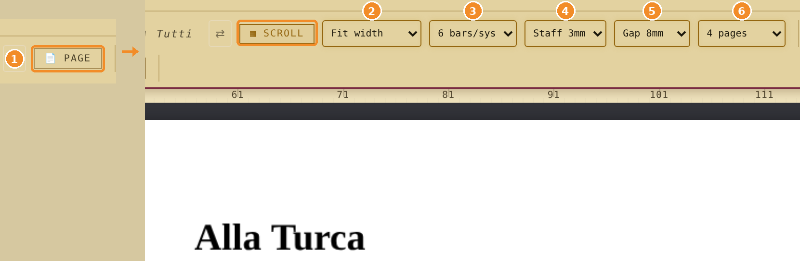
- De weergave ②: Full page (het hele blad), Fit width (op de breedte van het scherm) of Side by side (twee bladen, zoals een open boek).
- Bars/sys ③: hoeveel maten er op elke regel passen (in muziek een systeem). Auto past ze aan de breedte aan; of je kiest van 1 tot 9.
- Staff ④: de grootte van de notenbalk, in millimeter papier, van 3 tot 9. Voor een partij die je op de lessenaar speelt 7 mm; voor een partituur met veel instrumenten 4 of 5.
- Gap ⑤: de ruimte tussen de ene regel en de volgende.
- Pages ⑥: op hoeveel bladen je het stuk wilt. Het Score schikt het vanzelf; past het niet, dan zegt het je wat het kleinst mogelijke aantal is.
Op het blad werk je gewoon verder: een klik plaatst de cursor of selecteert een noot, noten en markeringen versleep je, je selecteert een gebied, en de rechtermuisklik opent dezelfde menu’s als op de strook. Als je op ▶ drukt, lichten de klinkende noten op het blad op. Zoomen gaat met Ctrl + scrollwiel. Om veel te schrijven is de strook handiger.
Deze instellingen worden met het stuk bewaard en zijn dezelfde als op het afdrukblad (PRINT / PDF): wat je hier schikt, komt zo op papier. Heeft een regel een maat te veel of te weinig, dan kun je met een rechtermuisklik op die regel hem verschuiven of er een maat aan doorgeven (zie ⠿ Systeem).
Zo weet je dat het gelukt is: je ziet het stuk op witte bladen, zoals een boek, en als je ③ of ⑥ verandert, wordt het blad meteen opnieuw geschikt.
🖨 PRINT / PDF · de partituur afdrukken of als PDF bewaren
Om het te openen: druk op MENU FILES ① en daarna op 🖨 PRINT / PDF ②. Het afdrukblad gaat open: de pagina’s zoals ze eruit zullen komen, met hun instellingenbalk bovenaan.
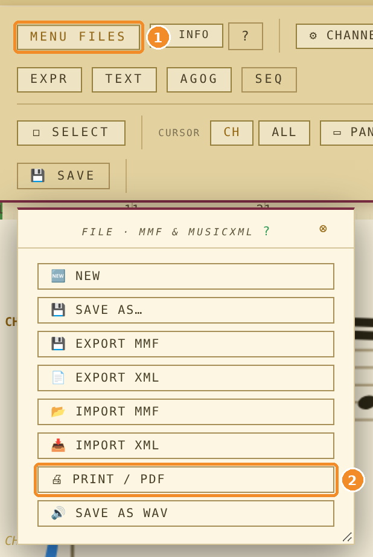
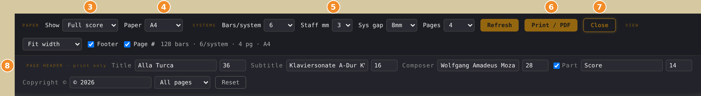
- Show ③: Full score, de volledige partituur, of Selected CH, alleen de gekozen kanalen (de partij van één instrument; zie verder).
- Paper ④: A4, Letter of A3.
- Bars/system, Staff mm, Sys gap en Pages ⑤: dezelfde instellingen als in PAGE, en ze horen bij elkaar: wat je hier verandert, verandert daar ook.
- Print / PDF ⑥ opent het afdrukvenster van je browser. Kies je printer, of kies bij Destination voor Save as PDF om een PDF-bestand te bewaren.
- Close ⑦ gaat terug naar de partituur.
- PAGE HEADER · print only ⑧: de titel, de ondertitel, de componist, de naam van de partij en het ©, elk met zijn grootte. Ze veranderen alleen het papier: laat je een veld leeg, dan wordt dat van Score Info gebruikt. Op pagina 1 kun je de kop met de muis vastpakken en verschuiven.
Wat je op het afdrukblad ziet, komt eruit: zonder de cyaanblauwe selectie, zonder de knoppen en zonder verborgen noten. Onder de balk zetten Footer en Page # de voettekst en het paginanummer aan of uit.
Heb je het stuk vanuit een les geopend, in demomodus, dan gaat het sneller: de knop 🖨 PRINT bovenaan, naast de titel, maakt het blad klaar en opent meteen het afdrukvenster.
Zo weet je dat het gelukt is: het afdrukvenster van de browser gaat open met je bladen; met Save as PDF komt het bestand in Downloads.
En de partij van een instrument komt uit het Panel
De 🖨 PRINT VIEW van het Panel opent datzelfde afdrukblad, maar met Show al ingesteld op “selected channels”: die op je chips. Het is de korte weg naar partijen — kies het instrument in het Panel, druk op PRINT VIEW en druk af. Vanuit MENU FILES kun je hetzelfde doen door Show met de hand te veranderen.
De onderste balk — het transport en de getallen van het stuk.
De onderste balk · wat hij je vertelt en wat je kunt veranderen
Helemaal onderaan staat de transportbalk. Hij vertelt je waar je in het stuk bent, terwijl je schrijft en terwijl het speelt.

Een eenvoudige regel om hem te lezen: wat in een kadertje staat, verander je met een klik; wat geen kadertje heeft, geeft alleen informatie.
- TIME ①: hoeveel tijd er verstreken is sinds het begin, in minuten, seconden en duizendsten.
- MEASURE · BEAT · SUBDIV · BPM ②: de maat, de tel binnen de maat, de grootte van de cursorstap en de snelheid. Ze hebben een kadertje: je kunt ze veranderen. Hoe, lees je in de vier chips.
- PITCH ③: de toonhoogte van de laatste toets die je speelde.
- CURSOR ④: op welk instrument de cursor staat.
Zo weet je dat het gelukt is: druk op ▶ en kijk naar TIME: de cijfers lopen. Terwijl het stuk speelt, verschijnt ernaast TOTAL: hoe lang het hele stuk duurt.
De vier chips · MEASURE, BEAT, SUBDIV, BPM
MEASURE en BEAT dienen om te gaan: een klik maakt er een vakje van, je typt het getal en Enter brengt de cursor erheen (Esc annuleert). Met nummering per deel zegt MEASURE ook in welk deel je bent en welke maat dat daarbinnen is. SUBDIV heeft een eigen ingang, net hieronder: het is de stap van de cursor. BPM is niet het tempo van het stuk: het is het tempo dat geldt in de maat waar je bent, dus het verandert vanzelf wanneer je een tempowisseling passeert; één klik en je typt het, tussen 20 en 320.
SUBDIV · van 1 tot 8, en het is de stap waarmee de cursor loopt
Het is het nuttigste getal op de balk en het minst begrepen. SUBDIV verdeelt de tel in 1 tot 8 delen —1 de kwartnoot, 2 de achtste, 3 de achtstetriool, 4 de zestiende, enzovoort tot de tweeëndertigste— en daaruit komt alles wat in stappen beweegt: de pijltjestoetsen ← → verplaatsen de cursor precies één van die stappen, wat je sleept, valt bij het loslaten op dat raster, de selectie die je verplaatst, klikt erop vast, en het lampje PULSE slaat mee en noemt je de waarde. Wil je buiten de tel schrijven, dan zet SUBDIV 2 de cursor met één pijltje in het midden van de tel; voor een triool, 3. Je zet 3 voor wat in 2 niet bestaat: het binaire en het ternaire raster zijn niet hetzelfde, en de chip kiest in welk van de twee je zit. Bij het openen van een stuk leidt de Score het af uit de muziek —de fijnste verdeling die verklaart wat er geschreven staat, nooit minder dan 2, zodat je altijd buiten de tel kunt binnenkomen— en zegt hij je of er een noot buiten dat raster viel, zonder iets aan te raken. De maatsoort veranderen stelt het opnieuw in. En het heeft niets te maken met de onderverdeling van de agogiek, die iets anders is en in haar eigen pop-up zit.
De drie die alleen informeren · TIME, PITCH, CURSOR
TIME is waar de naald staat, in minuten en duizendsten; bij het afspelen verschijnt TOTAL ernaast, de duur van het uitgevouwen stuk — met zijn herhalingen, niet de telling op papier. PITCH is de pythagorese toonhoogte van de laatste toets die je speelde, met haar afwijking: het venstertje waardoor de echte stemming zichtbaar wordt. CURSOR zegt waar je schrijft: kanaal, instrument en afkorting, of het hele orkest als de cursor op ALL staat.
De knoppen om te luisteren · spelen, stoppen en verplaatsen
Links op de onderste balk staan de knoppen om naar het stuk te luisteren, zoals op elke muziekspeler.

- ⏮ gaat terug naar het begin van het stuk. Als je een werkbereik hebt gemarkeerd, naar het begin van dat bereik.
- ⏪ gaat één maat terug.
- ▶ speelt het stuk vanaf waar je bent. Sneltoets: de spatiebalk.
- ⏸ pauzeert. Nog een klik gaat verder vanaf hetzelfde punt.
- ⏹ stopt.
- ⏩ gaat één maat vooruit.
- ⏭ gaat naar het einde van het stuk.
- ♩ PULSE zet de metronoom aan. Hij kiest het tempo niet: hij leest het uit de partituur.
- 🔁 LOOP herhaalt een passage telkens opnieuw. Hoe je de passage markeert, lees je in de loop.
Let op: het geluid wordt gemaakt door het Keyboard. Als dat niet open is, beweegt ▶ de afspeellijn, maar hoor je niets.
Zo weet je dat het gelukt is: als je op ▶ drukt, hoor je de muziek, loopt er een lijn over de partituur en loopt TIME in de onderste balk.
De navigatiestrook — een passage vinden, en je erin opsluiten.
De navigatiestrook · een kaart als je alles ziet, een liniaal als je erin zit
De strook boven de notenbalk verandert van aard met de zoom: met het hele stuk in beeld is ze een kaart —elke maat neemt dezelfde breedte in— en wanneer je in een passage zit, wordt ze een liniaal, waarop elke markering precies op haar maatstreep valt. Een klik brengt je naar die maat, en slepen met de knop ingedrukt spoelt mee terwijl je beweegt. Met de muis erboven zie je welke maat het is, en boven een markering welke markering.
A en B markeer je met een rechtsklik op de strook
Dit is het gebaar dat niemand raadt: rechtsklik op de strook, op de maat die je wilt, en het menu biedt ▼A Loop Start en ▼B Loop End aan met het nummer van die maat. Zodra beide gezet zijn, schakelt de loop zichzelf in. Elk driehoekje kun je verslepen om het traject fijn af te stellen, en een rechtsklik op een driehoekje wist het. De loop herhaalt zich zonder rondes te tellen, en de sprong van B naar A is onmiddellijk — de adempauzes op maatstrepen binnen het traject worden gerespecteerd. De motor laat je rondgaan, maar brengt je er niet naartoe: wat je naar A brengt, is “play the loop”, in de rechtsklik van de knop LOOP.
En de strook kan labels krijgen
In hetzelfde menu van de strook staat Mark section: je geeft die maat een label —A, B, Coda, wat je ook gebruikt— en het blijft op de strook geschreven staan, zodat je er in één oogopslag naar kunt terugkeren. Het zijn werklabels, geen repetitietekens die afgedrukt worden: die worden gegenereerd vanuit de pop-up TEXT.
De loop is niet het werkbereik
Ze worden met elkaar verward en ze zijn elkaars tegendeel. De loop hoort bij de klank: hij herhaalt een traject bij het afspelen. Het werkbereik —rechtsklik op de MEASURE-chip— hoort bij de navigatie, en het dient voor één heel concreet ding: wanneer je de maten 40 tot 60 aan het verbeteren bent, brengt ⏮ je naar 40 en niet naar 1, ⏭ naar 60 en niet naar het einde, en ⏪ ⏩ blijven binnen het bereik. Beide eindknoppen worden teal om je eraan te herinneren dat er een bereik is ingesteld. In het kleine paneel typ je From en To —het blijft vastgezet tot je het sluit, en je kunt het verslepen— en ✕ Clear range geeft je het hele stuk terug. Het verbergt niets, wist niets en raakt niet aan het afspelen: ▶ speelt nog steeds het hele stuk. Om aan een passage te werken, ligt het voor de hand beide in te stellen: het bereik om je te verplaatsen, de loop om de passage te horen.
De kanalen — zien, horen, en wie wat beheert.
Een kanaal zien of niet · het vakje en het oog
In de lijst met kanalen (knop ⚙ CHANNELS) heeft elke rij twee bedieningen voor wat je ziet. Ze doen verschillende dingen.
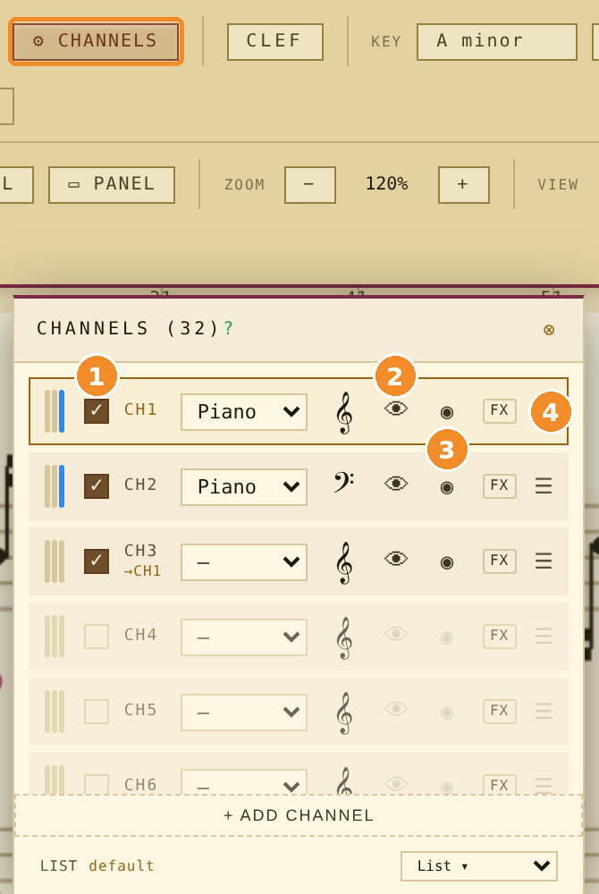
- Het vakje ①: uitgevinkt verdwijnt de notenbalk van het scherm en schuiven de andere tegen elkaar. Het kanaal bestaat nog, dus het klinkt nog.
- Het oog 👁 ②: maakt de notenbalk heel bleek, bijna doorzichtig. Handig om hem als referentie in beeld te houden terwijl je op een andere schrijft.
- FX ④ opent de geluidseffecten van het kanaal: galm, echo en meer. Ze worden uitgelegd in Sound FX. Als het kanaal al effecten heeft, is FX groen.
Om een kanaal te dempen is er ③: dat wordt uitgelegd in Een kanaal horen of niet.
Zo weet je dat het gelukt is: met het vakje uit zie je die notenbalk niet meer; met het oog zie je hem bleek. Nog een klik en hij komt terug zoals hij was.
Let op: met het vakje uit doen het oog en het dempen van die rij niets. Vink het vakje eerst weer aan.
Een kanaal horen of niet · dempen verbergt niets
Dempen (in het Engels mute) maakt een kanaal stil, maar laat het zichtbaar. Handig om bijvoorbeeld de piano te horen zonder de linkerhand.
Om een kanaal te dempen gebruik je een van deze drie:
- de knop ◉ in zijn rij van de lijst ⚙ CHANNELS (③ in de afbeelding hierboven);
- de ◉ in de kaart van het actieve kanaal, rechtsonder;
- rechtsklik op de naam van het kanaal, links van de notenbalk, en dan Mute (zie de afbeelding bij solo).
Zien en horen zijn twee aparte dingen: een notenbalk verbergen maakt hem niet stil, en hem stil maken verbergt hem niet.
Zo weet je dat het gelukt is: de naam van het kanaal wordt grijs, en als je het stuk speelt, klinkt die notenbalk niet. Dezelfde knop zet hem weer aan.
Dempen wordt met het stuk bewaard: als je het bestand opnieuw opent, blijven de kanalen die je stil liet ook stil.
Eén kanaal alleen horen · Solo
Solo doet het omgekeerde van dempen: het maakt alle andere kanalen stil en laat alleen dat ene spelen. Handig om één stem zonder de rest te horen.
Om het te gebruiken:
- Rechtsklik op de naam van het kanaal, links van de notenbalk (bijvoorbeeld «CH1 · R.H.»). Het menu gaat open.
- Kies Solo ②.
- Om alles weer te horen, open je hetzelfde menu en zet je Solo uit.

Als de notenbalk twee kanalen tegelijk draagt (bijvoorbeeld twee stemmen), laat Solo ze allebei spelen: daarom kan er in het menu «Solo CH1+CH3» staan.
Zo weet je dat het gelukt is: als je het stuk speelt, hoor je alleen die notenbalk. Als je Solo uitzet, komt elk kanaal precies terug zoals het was, ook de kanalen die je al had gedempt.
Solo wordt niet met het stuk bewaard: het is een hulp terwijl je werkt.
Het instrument van een kanaal · kiezen wie er speelt
Elke notenbalk van de partituur is een kanaal, en elk kanaal heeft zijn instrument: piano, viool, fluit… Het instrument bepaalt hoe die notenbalk klinkt.
Om het te kiezen:
- Druk bovenaan op de knop ⚙ CHANNELS. De lijst met kanalen gaat open.
- Klik in de rij van het kanaal op het uitklapmenu van het instrument ①. Het palet gaat open met alle instrumenten, per familie.
- Klik op het instrument dat je wilt ②. Ken je de naam, typ die dan in filter en het palet toont alleen de instrumenten die erbij passen.
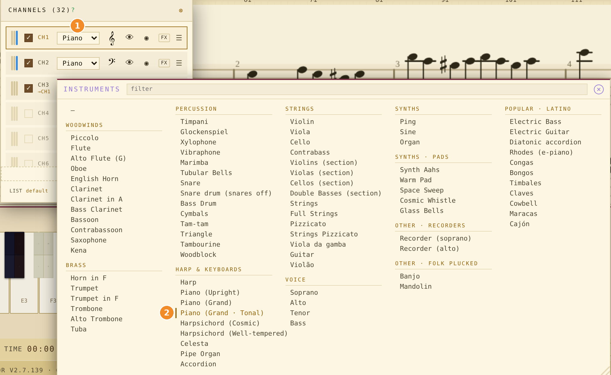
Je kunt het ook kiezen zonder CHANNELS te openen: in de kaart van het actieve kanaal, rechtsonder, staat hetzelfde uitklapmenu en dat opent hetzelfde palet.
Een instrument kiezen doet drie dingen: het geeft het kanaal zijn naam, geeft het zijn plaats in het orkest (aan welke kant het klinkt en hoe luid) en het kan de sleutel veranderen. Een contrabas bijvoorbeeld wordt in de fa-sleutel geschreven.
Zo weet je dat het gelukt is: de naam van het instrument verschijnt in de rij van het kanaal en in de kaart onderaan, en als je het stuk speelt, klinkt die notenbalk met het nieuwe instrument.
Let op: als je met de muis over het uitklapmenu gaat, kan er «Instrument (cosmetic)» staan. Dat is een oude melding: het instrument verandert de klank wel degelijk. Met List, onderaan de lijst, laad je een instrumentenbank die in de Register is gemaakt in plaats van de standaardbank.
De instrumentenlijst spreekt jouw taal
De lijst kwam vroeger gemengd tevoorschijn: sommige namen in het Engels, andere in het Spaans, met de familietitels altijd in het Engels. Nu spreekt de hele lijst —en de elf familietitels: Woodwinds, Brass, Percussion, Harp & Keyboards, Strings, Voice, Synths, Other, Popular · Latino— de taal die je koos. Dat geldt op de vier plaatsen waar ze verschijnt: het veld Instrument van de kanaalkaart en de kleine keuzelijst op elke rij van de pop-up CHANNELS in de Score, de keuzelijst van het Cosmic Keyboard, die van de Register Simulator en die van de Console, en ook in het kolommenpalet.
De taal is dezelfde in de hele suite: je kiest ze één keer, in de taalbalk van de Coach (tweede regel, naast het tabblad COACH), in Preferences → Language van de Score of met een rechtsklik op COACH in elke app; standaard is het Engels. Er zijn er vijf: ES · EN · FR · NL · DE. In het Frans, Nederlands of Duits openen de ?-knoppen deze handleiding in die taal; alle zes de apps (Score, Keyboard, Coach, Console, Player en Register) spreken die taal: tooltips, berichten en hulp; de namen van de knoppen blijven in het Engels, zoals in de hele suite. Als je van taal wisselt terwijl de apps open zijn, veranderen ze allemaal meteen, zonder herladen. Wat je ziet, verandert; wat het bestand bewaart, niet: elk instrument heeft een interne naam die nooit vertaald wordt, zodat een .mmf die op de computer van iemand anders wordt geopend, met de andere taal gekozen, precies hetzelfde klinkt. Eén detail: als je midden in een sessie van taal wisselt, toont het kolommenpalet meteen de nieuwe taal, en de kleine keuzelijst per rij volgt de volgende keer dat die lijst getekend wordt.
In dezelfde ronde zijn teksten en tooltips die nog in het Spaans stonden terwijl Engels gekozen was, bijgewerkt: «The game count», de knop Unfold ⇥, de tooltips bij de vakjes voor laatste maat en px-grootte, die op de Ex.-chips en die op de pin van de pop-up BARLINES; in het Cosmic Keyboard de twee tooltips van de knop Pulse; in de Register Simulator het label «term» van het Lexicon en de tooltip van 🎓. Wat nog in het Spaans staat, ronduit gezegd: de Coach en de Player zijn volledig in het Spaans geschreven, en dat betekent de Engelse versie schrijven, niet een ronde langs de attributen. Labels die beide dingen op één regel zeggen («Guardar como… · Save as…», «Todos los atajos · All shortcuts →», «Pulse · metrónomo») blijven bewust zoals ze zijn.
Slagwerk is een toestand van het kanaal, niet alleen CH10
CH10 is volgens afspraak een slagwerkkanaal vanaf het begin, maar elk kanaal kan tot slagwerk verklaard worden vanuit de groepspop-up. Zolang dat zo is, draagt het de badge PERC, wordt de sleutel de neutrale sleutel en kan die niet veranderd worden, is de instrumentenlijst beperkt tot slagwerk, en kan het geen notenbalk delen met een ander kanaal. En als je geen patch kiest, komt de klankkleur per lijn: elke lijn van de notenbalk is een instrument.
In de Console bewegen dezelfde dingen · wie wat beheert
Mute, volume, panorama en instrument zijn één gedeelde toestand: verander je het in de Score, dan toont de Console het; verschuif je het op de Console, dan neemt de Score het over. De eigenaar is het stuk —die vier reizen mee in het bestand— en de mengtafel is de andere plek om eraan te komen. Twee dingen die geen mix zijn en die je dus niet op de Console hoeft te zoeken: zichtbaarheid (die hoort bij het blad, niet bij de klank) en solo, die niet bewaard wordt. Master-reverb, toon en balans horen bij het Keyboard en bij de sessie: ook die blijven niet in het stuk.
🎤 MIC en ⏺ REC · jezelf opnemen over de begeleiding
De Console heeft nog één kanaal, 🎤 MIC, tussen de kanalen en de MASTER. De microfoon woont in het Keyboard: de eerste keer dat je hem met ON aanzet, is het het venster van het Keyboard dat om toestemming vraagt, en die moet je toestaan. De microfoon komt rauw binnen —zonder echo-onderdrukking, zonder automatische versterking—, dus de fader en zijn meter hebben het voor het zeggen: je luidste noot dicht bij het rood, zonder het te bereiken. Met 🎧 hoor je jezelf terwijl je speelt; gebruik het altijd met een koptelefoon, anders hoort de microfoon zichzelf. Je klank bereikt de microfoon enkele milliseconden te laat: CAL meet dat één keer —het Keyboard speelt een klik via de luidsprekers en de microfoon hoort hem— en die vertraging wordt bij het opslaan vanzelf gecorrigeerd.
De microfoonstrook is een mengkanaal, nuttig voor een zanger of een instrumentalist. Low cut verwijdert alles onder 90 Hz: het gedreun van een microfoon dicht bij het instrument. Low en High verhogen of verlagen de lagen en de hogen met maximaal 12 dB (dubbelklik = vlak). Rev en Echo zetten je klank in dezelfde ruimte als de begeleiding: de reverb en de echo zijn die van de master. Dat alles gaat in de opname en in wat je met 🎧 hoort, nooit in de master, en de Console onthoudt het voor de volgende keer. 🎧 vraagt eerst of je koptelefoon op staat en controleert dat met een zachte «tick»: als de microfoon hem hoort, komt de klank uit de luidsprekers en blijft 🎧 uit («No headphones detected»). Ontstaat er toch rondzingen —een brom die blijft aanzwellen—, dan zet het Keyboard 🎧 uit en meldt de Console het je. De taal kies je in de Coach of met een rechtsklik op de 🎓.
⏺ REC, naast ⏹ in het transport, begint met een aftelling 3 · 2 · 1 —het logo draait— en zet daarna het stuk en de opname samen in gang. ⏹ (of nog eens REC) beëindigt de opname, en het Keyboard downloadt één WAV met de begeleiding en je microfoon al op elkaar afgestemd. De volgorde die werkt: M op het melodiekanaal, de pianoklank ingesteld in het Keyboard (VOL, REV), de MIC ingesteld en gekalibreerd, en pas dan REC. Als het kan, de microfoon dicht bij het instrument en weg van de luidsprekers; nog beter: een koptelefoon.
SELECT — een traject markeren, of een handvol noten.
Selecteren · de modus SELECT in- en uitgaan
Om met meerdere noten tegelijk te werken (ze verplaatsen, kopiëren, er iets aan veranderen) moet je ze eerst selecteren. Dat doe je in de modus SELECT.
Om erin te gaan: druk op ◻ SELECT ①, in de tweede rij knoppen. De knop wordt donker (◼) zolang de modus aan staat. Sneltoets: de toets `, die onder Esc.

Om eruit te gaan: druk op Esc (dat sluit de modus en wist de selectie), druk nog eens op SELECT, of klik buiten de notenbalken.
Hoe je het stuk markeert, lees je in Een stuk selecteren.
Zo weet je dat het gelukt is: de knop zegt ◼ SELECT met een donkere achtergrond.
Een rechtsklik op de knop SELECT opent een paneeltje met acties, maar alleen als de modus uit staat.
Een stuk selecteren · en het verplaatsen
Een selectie is een stuk van de partituur dat met een kader gemarkeerd is. Alles wat je daarna doet (verplaatsen, kopiëren, de dynamiek veranderen…) gebeurt met wat erin staat.
Om te selecteren:
- Ga in de modus SELECT ①.
- Kies CH of ALL ②: met CH selecteer je op één notenbalk; met ALL op alle tegelijk.
- Druk de muisknop in op de notenbalk, waar het stuk begint, en sleep tot waar het eindigt. Terwijl je sleept, is het kader goudkleurig en gestippeld.
- Laat de knop los. Het kader sluit en wordt groen ③.
De afbeelding staat bij de modus SELECT, net hierboven.
- Om ze groter of kleiner te maken: Shift + klik verschuift de rand, zonder opnieuw te beginnen.
- Om ze te verplaatsen: zet de muis op het gesloten kader (de aanwijzer wordt een hand) en sleep het. De muziek beweegt mee, stap voor stap volgens SUBDIV.
Zo weet je dat het gelukt is: je ziet het groene kader rond de noten die je wilde.
Let op: als je op het nummer van een maat klikt in plaats van op de notenbalk, gaat de informatie over die maat open. Begin het slepen tussen de lijnen.
Een maat met één dubbelklik, en hoe je de selectie uitbreidt
Dubbelklik op de notenbalk, waar geen nootkop staat, en die hele maat wordt geselecteerd, in dat kanaal. Je hoeft vooraf niets aan te zetten: de dubbelklik schakelt zelf naar de SELECT-modus en laat de selectie gesloten achter, klaar voor de actiepop-up of voor Note spacing. Omdat er niet gesleept wordt, kun je niet per ongeluk een noot verschuiven — en dat is wat er gebeurde toen je over de nootkoppen moest slepen om een maat te markeren.
Van daaruit rekt Shift + klik op een andere maat van hetzelfde kanaal de selectie tot daar uit. Je kunt dat aaneenrijgen: dubbelklik op 3, Shift + klik op 6, en je hebt 3 tot 6 zonder één keer te slepen.
Drie dingen die je goed uit elkaar moet houden, want het zijn verschillende gebaren op dezelfde notenbalk. Een dubbelklik op een nootkop selecteert de maat niet: dat is het gebaar van het akkoord, en het pakt de noten van die aanzet. Een klik binnen een al gesloten selectie breidt die evenmin uit of kort ze in: hij pakt ze op om ze te verplaatsen, en de cursor wordt een hand — dus om ze uit te rekken, doe je de Shift + klik buiten het traject dat je al hebt. En slepen selecteert alleen met de SELECT-modus aan; zonder die modus is slepen over de notenbalk bewerken, en precies daarom verschoven er noten toen je probeerde te selecteren.
Een heel kanaal, of het hele stuk, zonder te slepen
Voor een heel kanaal of het hele stuk hoef je niet van begin tot eind te slepen: het rechtsklikpaneel heeft Select all in channel en Select all channels, die in één keer de volledige selectie opbouwen. Kopiëren, transponeren, het traject als bestand bewaren of het wissen: het begint allemaal daar.
Alt · de andere selectie, die van losse noten
Er is een tweede selectie, geen traject maar een handvol noten, en die woont op de toets Alt. Alt + klik op een nootkop voegt die noot toe of haalt ze weg. Alt + slepen op een lege plek tekent een rechthoek en neemt alles wat erbinnen valt, over kanalen heen en met de rusten erbij. En een dubbelklik op een noot neemt het hele akkoord. Esc laat ze los. (Alt met de rechterknop doet niets: het gebaar is met de linker.)
De partituur — het scrollwiel, de hand, het numerieke toetsenblok en het slepen.
De cursor · waar komt wat je schrijft
De cursor is het gekleurde verticale streepje op de notenbalk ①: groen in het lichte thema, geel in het donkere. Het toont waar de volgende noot die je schrijft terechtkomt, en waar de popups zetten wat je invoegt: een tempo, een sleutel, een tekst.
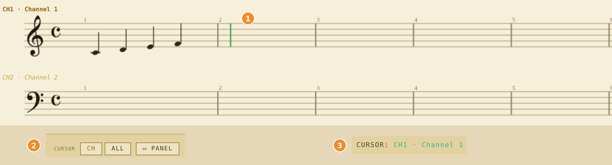
Hem verplaatsen:
- Klik op de notenbalk, waar je wilt. Klik je op een noot, dan wordt die noot geselecteerd en gaat de cursor erheen.
- De pijltjes ← en → verplaatsen hem één stap. SUBDIV bepaalt hoe groot de stap is: in 4/4 met SUBDIV 2 is elke stap een achtste noot.
- De pijltjes ↑ en ↓ brengen hem naar het instrument erboven of eronder, als er geen noot geselecteerd is.
- Als je een noot schrijft, schuift de cursor vanzelf op, zo lang als die noot duurt.
CH of ALL ②: met CH staat het streepje op één instrument; met ALL loopt het door alle notenbalken.
Zo weet je waar hij staat: behalve dat je hem ziet, zegt CURSOR ③ in de transportbalk onderaan op welk instrument je bent.
Het is niet hetzelfde als de selectie: de cursor is een punt. De selectie is een stuk met een kader eromheen, om meerdere noten tegelijk te verplaatsen, te kopiëren of te veranderen.
Het scrollwiel · drie assen op één wiel
Boven de partituur scrolt het gewone wiel horizontaal — geen vergissing: in een partituur is de hoofdas de tijd, en die loopt zijwaarts. Shift + scrollwiel is de verticale, om door het orkest naar beneden te reizen, en Ctrl + scrollwiel is de zoom, verankerd waar de aanwijzer staat. In het Panel scrolt het wiel zoals op elke pagina en zoomt alleen Ctrl —een eigen, onafhankelijke zoom—; en op het blad gaat het gewone wiel omlaag, gaat Shift zijwaarts en brengt Ctrl het blad dichterbij.
De hand · en het slepen dat de afstand tussen de notenbalken regelt
Op een lege plek van het canvas sleep je met de linkerknop: na een paar pixels verschijnt de hand en loopt de partituur mee. Ze werkt horizontaal; de verticale richting van het canvas is Shift + scrollwiel. In het Panel daarentegen verschuift de hand op beide assen. En er is één sleepbeweging die verrast: op een notenbalk verschuift verticaal slepen het beeld niet — het verandert de afstand tot de volgende notenbalk van dat kanaal, en de notenbalken eronder volgen zonder te botsen. Dat is de lucht van de pagina, en zo stel je die bij, op het oog.
Het numerieke toetsenblok · de nootwaarde op één toets, en de regel van de rusten
De numpad is het blok cijfertoetsen rechts op het toetsenbord van de computer. (Sommige kleine laptops hebben er geen.) In de Score is elk van die toetsen een nootwaarde: je kiest de duur zonder het toetsenbord los te laten.
Schrijven met de numpad:
- Druk op de toets van de nootwaarde, bijvoorbeeld 5 voor de kwartnoot.
- Schrijf de noten: ze krijgen allemaal die nootwaarde.
- Om van nootwaarde te veranderen, druk je op een andere toets.
Rusten schrijven: druk nog eens op dezelfde toets. Vanaf dan wordt elke noot die je schrijft een rust van die waarde. Druk op een andere nootwaarde en je bent terug bij de noten. Zo hebben rusten geen eigen toets nodig.
Zo weet je dat het gelukt is: telkens als je op een toets drukt, verschijnt onderaan een kaartje met de nootwaarde, bijvoorbeeld “♩ kwartnoot” of “kwartrust”. Twijfel je, druk dan op 0: het kaartje zegt wat ingesteld is, zonder iets te veranderen.
- Het werkt met NumLock aan of uit.
- Terwijl je in een tekstvak typt, typt de numpad gewoon cijfers.
De strook · een waarde op het blad slepen
Met het kleine klavier gesloten opent BAND ♪ de strook met wat je het meest gebruikt. Het eigen gebaar ervan is slepen: pak een waarde en laat ze los op de notenbalk. De spooknoot die je volgt, klikt niet vast op een blind raster maar op de muzikale plaatsen van de maat: het begin, de aanzetten die er al staan en het einde van elke noot, waar een gat begint. En bij het loslaten doet ze het redelijke: valt ze op een noot en is de waarde korter, dan neemt die noot de nieuwe waarde aan zonder van toonhoogte te veranderen en wordt wat overblijft met rusten gevuld; valt ze voorbij het einde van de inhoud, dan wordt het gat met rusten aangevuld zodat de maat klopt; en past ze niet, dan wordt er niets ingevoegd en meldt ze het je. De zojuist geplaatste noot blijft geselecteerd, zodat je ze met dezelfde strook verder kunt bijwerken.
Een noot verplaatsen · drie verschillende sleepbewegingen
Gewoon slepen: ritmisch en horizontaal — de noot verandert van plaats in de tijd en valt bij het loslaten op de dichtstbijzijnde onderverdeling (de ternaire als het een tupletnoot is), zodat er geen scheve kolom op het blad ontstaat. Shift + slepen is het fijne slepen: het verschuift de noot in pixels, alleen inkt, zonder aan de tijd te raken — dat gebruik je wanneer de tekening botst en de muziek klopt. Ctrl + slepen is de kanaalverplaatsing: de noot wordt op een andere notenbalk neergezet en behoudt haar plaats ongeschonden —maat, tel en positie—, zodat ze op hetzelfde moment terechtkomt, in een andere stem; de spooknoot zegt je naar welk kanaal ze gaat. Twee attenties: de gebalkte groep wordt niet gebroken als je er een noot binnenin verplaatst, en de articulaties en de agogiek van die noot reizen mee. En voorslagen sleep je fijn zonder iets ingedrukt te houden, want op een proportioneel raster zou je ze op geen enkele manier kunnen plaatsen.
De twee stroken onderaan.
Onder de partituur zijn er twee stroken, en nooit beide tegelijk: het klavier, om te spelen en te schrijven, en het Panel, om een tweede reeks kanalen te volgen terwijl je werkt. Elk opent met een eigen knop —🎹 KEYBOARD en ▭ PANEL— en het ene openen verbergt het andere.
De drie zones van het klavier
Het opent en sluit met 🎹 KEYBOARD, en het is één strook met drie zones. Links hoe je speelt: WRITE of LISTEN, en de stemming (System · Mode · Sens). In het midden de toetsen, met aan weerszijden de octaafpijlen. Rechts de kaart van het kanaal waarin je schrijft. Twee dingen om te weten: zolang het klavier open is, is de zwevende strook niet beschikbaar —ze doen hetzelfde werk—, en met het klavier gesloten mag het QWERTY-toetsenbord niet schrijven, dus schakelt de Score zelf naar LISTEN.

WRITE en LISTEN · schrijven, of alleen uitproberen
In WRITE schrijven de toetsen en het QWERTY-toetsenbord op de cursor: dat is de werkmodus. In LISTEN klinken ze alleen —er wordt niets geschreven—, en het klavier past zijn kader aan de octaven aan die het stuk gebruikt, met de kaderchip (Auto · 5 · 6 · 7 · 9) en de balk Octave Shift onder de toetsen. Het is de modus om een akkoord uit te proberen of een noot te zoeken zonder aan de partituur te raken. Terug in WRITE begint het venster opnieuw op C3–C6.
TODAL · spelen op toontrappen, en de cyclus van de knop
De knop WRITE wisselt in een cyclus: ✏ WRITE → TODAL PLAY → TODAL WRITE → ✏ WRITE, en het opschrift zegt altijd waar je bent. In TODAL dragen de toetsen het opschrift van hun trap —I tot VII in elk octaaf— en dezelfde trap geeft altijd de juiste noot van de toonaard: daardoor kun je correct schrijven in elke toonaard zonder piano te kunnen spelen. TODAL PLAY laat alleen horen, TODAL WRITE schrijft. CapsLock is een optionele versneller: hij zet TODAL aan en uit en komt binnen in PLAY. En als het Cosmic Keyboard een nieuwe grondtoon stuurt, gaat de Score vanzelf naar TODAL PLAY en wacht: hij schrijft niet tot je naar WRITE overschakelt.

SYSTEM · Axiom of Tonal
Axiom is zuivere pythagorese stemming, zonder posities: elke noot op haar rekenkundige plaats. Tonal zet het positiesysteem aan —een noot wordt gestemd volgens haar functie in de toonaard— en dat is wat de harmonie doet spreken. Zolang je in Axiom bent, blijven MODE en SENS uit, want zonder toonaard betekenen ze niets; bij het overschakelen naar Tonal komt SENS binnen op +1.
MODE en SENS · de modus, en hoe sterk de leidtoon trekt
Maj en min veranderen de modus van de actieve toonaard; min opent ook een kleine pop-up om de natuurlijke, harmonische of melodische kleine toonladder te kiezen. SENS is hoeveel de leidtoon verhoogd wordt: 0 verhoogt niet, +1 verhoogt de VII met haar apotome —de standaard— en +2 voegt de komma toe op de chromatische tonen, een sterker effect. De waarde reist in de tonale toestand mee naar het Cosmic Keyboard, dat de klank maakt.
Het octaafvenster
De pijlen ◀ ▶ aan de zijkanten verschuiven het venster één octaaf, en de opschriften aan elk uiteinde zeggen waar het terechtkwam (C3 · C6). In LISTEN legt de kaderchip ook 5, 6, 7 of 9 octaven vast, of keert hij terug naar Auto, het bereik dat het stuk werkelijk gebruikt.
De kaart van het actieve kanaal · van instrument wisselen zonder iets te openen
De rechterzone is het kanaal waarin je schrijft. Bovenaan de rail: elk kanaal in zijn kleur, en één tik wisselt van kanaal. Daaronder de kaart: het nummer CH, het 👁 dat de notenbalk toont of verbergt, de ◉ die het kanaal dempt, de naam, het instrumentlabel —cosmetisch: de motor beheert de patch— en de knop VOL, die je ↕ versleept en die het percentage aangeeft. En het raster van de 32: één klik en je schrijft in een ander kanaal, zonder CHANNELS te openen.
Het Panel · een tweede notenbalk eronder
Knop ▭ PANEL. Hij opent een tweede weergave onder de partituur, zodat je twee dingen tegelijk kunt volgen: de solist en de bas, de stem die je overschrijft en de stem die je schrijft. Het Panel en het klavier sluiten elkaar uit: het Panel openen verbergt het klavier, en omdat het QWERTY-toetsenbord niet blind mag schrijven, valt de modus terug op LISTEN. Het verschijnt met het kanaal waar de cursor staat, de balk die het afscheidt kun je verslepen om het hoger of lager te maken, en ✕ verbergt het.
De CH-chips · welke kanalen het Panel weerspiegelt
Elke chip in de kop is een kanaal, in zijn eigen kleur geschilderd; een klik zet het in het Panel of haalt het eruit, en je kunt er meerdere tegelijk hebben. Je hoeft er niet aan te denken ze toe te voegen: als je schrijft in een kanaal dat er niet bij was, voegt het Panel het zelf toe, zodat de noot die je net invoerde zichtbaar is.
Een eigen zoom en scroll
Ctrl + scrollwiel boven het Panel verandert alleen de zoom van het Panel —het gewone wiel scrolt het—, en het percentage verschijnt in de kop. De eerste keer dat het opent, neemt het de zoom van de partituur over; daarna houdt het zijn eigen zoom, zodat je het Panel groot kunt hebben boven een klein blad.
🎧 SOLO · alleen horen waar je naar kijkt
De knop vraagt de Console om de kanalen van het Panel te isoleren: S op die kanalen, M op de rest. Bij het uitzetten —of het sluiten van het Panel— keert de mengtafel terug naar de toestand die ze had, en niets hiervan wordt in het stuk bewaard. Als je de chips verandert terwijl SOLO aanstaat, verdeelt de Console opnieuw.
🖨 PRINT VIEW · de partij van dat instrument
Het opent de gekozen kanalen in de afdrukweergave, alleen-lezen: de partij van één instrument —of van een groep— klaar voor papier of PDF. Het is de korte weg naar de partijen: kies de chips en druk af wat overblijft.
Je kunt binnen het Panel bewerken
Het Panel begon als iets om naar te kijken, en dat is het niet meer: de rechtsklik werkt erin, met dezelfde editors —noot, overbinding, dynamiek, gebaar, tuplet, tempo—, waarbij het echte kanaal van de rij herkend wordt en de pop-up onder de aanwijzer opent, waar je kijkt. Ook de meervoudige selectie verschijnt daar, met haar kaders.
Wat je wilt doen, en welk paneel het doet.
Twee regels en je kunt alles openen. Wat in de bovenste balk staat, open je met een klik op de knop en sluit je met nog een klik. Wat op de partituur staat, open je met een rechtsklik op het ding zelf —een noot, een boog, een maatstreep, een kanaalnaam—, dus je hoeft geen menu te zoeken: het menu is het menu van wat je aanraakte. Elk paneel kun je aan zijn kop verslepen, elk heeft de pin ⊗ zodat een klik erbuiten het niet sluit, en de toets X verbergt ze allemaal en brengt ze terug.
In de bovenste balk — wat voor het hele stuk geldt: hoe het bewaard wordt, in welk tempo het loopt, in welke toonaard het staat, welke instrumenten het heeft.
File · openen, opslaan en het stuk meenemen
In MENU FILES bewaar en open je je werk. Een werk van Music Motion wordt bewaard in een .mmf-bestand: daarin zitten de noten en ook hoe ze gespeeld worden (dynamiek, tempo’s, de klank van elk instrument).
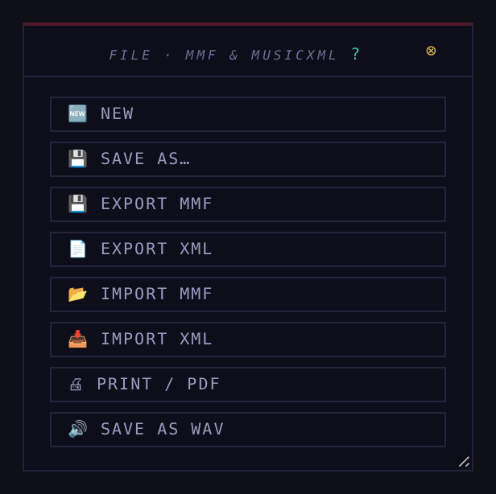
- 🆕 NEW: een nieuwe, lege partituur.
- 💾 SAVE AS…: bewaart met een naam en in een map die je kiest. Daarna bewaart de knop SAVE in de balk (of Ctrl+S) altijd in datzelfde bestand.
- 💾 EXPORT MMF: downloadt een kopie van de .mmf naar je downloadmap.
- 📂 IMPORT MMF: opent een .mmf.
- 📄 EXPORT XML en 📥 IMPORT XML: bewaren en openen MusicXML, het formaat dat Finale, Dorico, Sibelius en MuseScore begrijpen.
- 🖨 PRINT / PDF: stuurt het blad naar de printer of bewaart het als pdf.
- 🔊 SAVE AS WAV: neemt de klank van het werk op in een audiobestand. Het duurt zo lang als de muziek, want die wordt opgenomen terwijl ze speelt; CANCEL stopt het.
Zo weet je dat het bewaard is: de knop SAVE toont een paar seconden “✓ SAVED” in het groen. Als de browser het bewaren niet toelaat, zegt de Score het je: hij zwijgt niet.
Score Info · de titel en wie het schreef
Score Info is de omslag van je werk: de titel en wie het schreef. Het is wat bovenaan de eerste afgedrukte pagina staat.
- Druk op ✎ INFO, in de bovenste balk, naast MENU FILES.
- Typ Title, Subtitle, Composer (wie het componeerde), Author (wie het bewerkte of overschreef) en Copyright.
- Druk op Apply.

Zo weet je dat het gelukt is: in de weergave PAGE zie je de grote titel bovenaan en de componist rechts.
Orchestra zegt voor welke orkestgrootte het werk is, van kamerorkest tot groot romantisch orkest. Daarmee weet de suite hoeveel spelers elke strijkerssectie heeft.
Tempo · een Adagio instellen, of midden in het stuk van tempo veranderen
Tempo is de snelheid van de muziek. Het wordt gemeten in BPM: tellen per minuut. 60 BPM is één tel per seconde, zoals een klok; 120 BPM is twee keer zo snel.
Het tempo instellen:
- Zet de cursor op de maat waar dat tempo begint.
- Druk op de knop TEMPO.
- Kies bij Term een woord (Adagio = langzaam, Allegro = snel) of typ je eigen woord.
- Stel bij BPM het getal in, met − en +.
- Druk op Insert Marking.

Zo weet je dat het gelukt is: boven de notenbalk staat bijvoorbeeld “Allegro ♩ = 120”, en de muziek speelt op die snelheid.
Om de muziek halverwege sneller of trager te laten gaan: zet de cursor op de maat waar het verandert en herhaal de stappen.
- This bar zet het tempo aan het begin van de maat. This place zet het op de precieze tel waar de cursor staat.
- Met Show uit verdwijnt “♩ = 120” uit de partituur, maar de muziek houdt die snelheid.
Sleutel · midden in de notenbalk van sleutel veranderen
De sleutel is het teken aan het begin van de notenbalk. Hij zegt welke noot elke lijn is. De G-sleutel (Treble) is voor hoge klanken: viool, fluit, de rechterhand van de piano. De F-sleutel (Bass) is voor lage klanken: cello, contrabas, de linkerhand. De C-sleutel (C Clef) is voor de altviool.
Van sleutel veranderen:
- Zet de cursor op het instrument (en op de maat, als de sleutel onderweg verandert).
- Druk op de knop CLEF.
- Kies bij Scope tot waar hij geldt (zie hieronder).
- Klik op de sleutel die je wilt. De C-sleutel sleep je omhoog of omlaag om hem op een andere lijn te zetten.

- All channels: alle instrumenten, het hele werk. This channel: het actieve instrument, het hele werk.
- This bar: vanaf de maat van de cursor. Handig voor de cello die naar de C-sleutel gaat. This place: vanaf de precieze tel van de cursor.
- Selection: alleen de geselecteerde maten; daarna komt de vorige sleutel vanzelf terug.
De sleutel verandert de klank niet: hij verandert hoe de noten geschreven worden, zodat ze niet vol hulplijntjes komen. Als de nieuwe sleutel tegen een noot plakt, schuift ↔ Nudge hem wat naar links of rechts.
Octave (8va, 15ma, 8vb, 15mb) zet een octaaflijn boven enkele maten: de noten worden een of twee octaven dichter bij de notenbalk geschreven, maar klinken waar ze altijd klonken.
Maatsoort · en wat er gebeurt met wat al geschreven staat
De maatsoort zijn de twee getallen aan het begin, bijvoorbeeld 3/4. Het bovenste zegt hoeveel tellen elke maat heeft; het onderste welke noot één tel is (4 = kwartnoot, 8 = achtste noot). Een wals staat in 3/4: drie kwartnoten per maat.
Hem veranderen:
- Druk op de knop TIME.
- Typ Numerator (boven) en Denominator (onder), of kies er een uit Quick Select: 3/4, 2/4, 6/8…
- Kies een van de twee knoppen (zie hieronder).

- Apply to All Channels verandert alleen de getallen. De noten blijven waar ze staan. Gebruik het als je nog niets geschreven hebt, of als de maatsoort fout was maar de noten juist zijn.
- Re-bar the music verandert de getallen en verdeelt de noten opnieuw over de nieuwe maten. Een noot die door een nieuwe maatstreep doorgesneden wordt, wordt in tweeën gedeeld en verbonden.
Zo weet je dat het gelukt is: aan het begin van de notenbalk zie je de nieuwe maatsoort, en met Re-bar heeft elke maat precies de tellen die de maatsoort zegt.
Let op: TIME verandert de maatsoort van het hele werk, vanaf het begin. Als het werk al maatwisselingen in het midden heeft (bijvoorbeeld omdat je het uit Finale importeerde), werkt Re-bar niet.
Voortekening · en de muziek meetransponeren
De voortekening zijn de kruisen (♯) of mollen (♭) aan het begin van elke notenbalk. Ze zeggen in welke toonaard de muziek staat: G groot heeft één ♯, F groot heeft één ♭.
De voortekening instellen:
- Druk op de knop die de toonaard toont (bijvoorbeeld C Major).
- Kies tot waar ze geldt (zie hieronder).
- Kies Major of Minor.
- Loop met ▶ en ◀ door de toonaarden: elke klik op ▶ voegt een ♯ toe (of haalt een ♭ weg), elke klik op ◀ voegt een ♭ toe (of haalt een ♯ weg). De voortekening verandert meteen.

- All CH: alle instrumenten, het hele werk. This CH: alleen het actieve instrument.
- This Bar: vanaf de maat van de cursor. Zo verander je halverwege het werk van toonaard.
- Selection: alleen de geselecteerde maten; daarna komt de vorige voortekening terug.
Twee verschillende dingen: de voortekening veranderen laat de noten waar ze staan. ⇅ Transpose music to key verplaatst ook de muziek naar de nieuwe toonaard: alles klinkt hoger of lager, zoals wanneer een zanger het lied “een toon lager” vraagt.
Zo weet je dat het gelukt is: de ♯ of ♭ verschijnen aan het begin van elke notenbalk, of in de maat waar de toonaard verandert.
Maten · opmaat, maatstrepen en de adem tussen de delen
BARS dient voor alles wat met maten te maken heeft: de opmaat, maten toevoegen of wissen en het soort maatstreep. Het werkt op de maat waar de cursor staat.
Maten toevoegen of wissen:
- Zet de cursor op een maat en druk op BARS.
- De schakelaar zegt Add (toevoegen) of Delete (wissen). Ernaast: hoeveel maten.
- Kies Before (vóór) of After (na) de maat van de cursor. In het midden zie je haar nummer (M1 is maat 1).
- Druk op Apply.

Alles wat erna komt, schuift mee met de muziek: noten, dynamiek, tempo’s, herhalingen en wisselingen van maatsoort of voortekening.
- Upbeat: de opmaat, de noten vóór de eerste volle maat (de “en” vóór de “één”). Zet hem aan en kies hoe lang hij duurt.
- Barline: het soort maatstreep na (of vóór) de maat: enkel, dubbel, slot, gestippeld… De dubbele scheidt delen; de slotstreep sluit het werk af.
- Respiro: seconden stilte bij die maatstreep voor het verder gaat, handig tussen bewegingen. 0 = attacca, zonder stoppen verder.
- Beat: zet de maatstreep midden in de maat, vóór die tel. Dat gebeurt wanneer een deel midden in een maat eindigt en wat volgt de opmaat van het volgende deel is.
- BAR NUM toont of verbergt de maatnummers. GROUP laat de maatstrepen doorlopen tussen de notenbalken van elke accolade of haak.
- REP opent Repeats, voor herhalingen.
Zo weet je dat het gelukt is: de maatnummers schuiven op en de nieuwe maatstreep staat op haar plaats.
Herhalingen · herhalingen, D.C., Coda en het stuk uitgevouwen zien
Een herhaling laat een stuk muziek twee keer (of vaker) klinken zonder het opnieuw te schrijven. Ze wordt aangeduid met de strepen ‖: en :‖. Met D.C. (da capo, “vanaf het begin”) of D.S. (dal segno, “vanaf het teken”) springt de muziek terug.
Een stuk herhalen:
- Druk op de knop :|.
- Kies bij I WANT TO ① voor Repeat.
- Typ bij From bar en To bar ② de eerste en de laatste maat. Bij Times, hoeveel keer het klinkt.
- Kijk naar de regel Plays ⑤: die zegt in welke volgorde de maten gespeeld worden.
- Druk op Create ⑥.

Terugspringen met D.C. of D.S.: kies bij I WANT TO voor Jump back.

- D.C. gaat terug naar het begin; D.S. gaat terug naar het teken 𝄋, dat je bij Segno at ① zet.
- Hoe het eindigt ③: simple gaat door tot het einde; al Fine stopt waar Fine staat; al Coda springt naar de Coda.
- Unfold ④ toont het werk uitgevouwen, zoals het klinkt, met de herhalingen uitgeschreven. Fold klapt het weer in.
Zo weet je dat het gelukt is: in de partituur verschijnen de herhalingsstrepen (of de D.C. of D.S.), en de regel Plays zegt de volgorde die je zult horen.
Voor wie meer details nodig heeft:
Een sectie kan met haar eigen opmaat beginnen: From en To hebben elk hun Beat. From 24 · Beat 2 laat de sectie halverwege maat 24 beginnen; To 64 · Beat 1 zet het :‖ halverwege maat 64, en de herhaling gaat terug naar de opmaat van de sectie. From 0 begint bij de opmaat van het stuk, dus de eerste herhaling keert daarnaar terug. Met Beat leeg neemt de sectie hele maten. Een stuk kan meerdere secties na elkaar hebben, en ze worden allemaal herhaald.
Het eerste en tweede huisje voeg je toe met + Add ending, één per doorgang, en elk huisje heeft zijn eigen Beat aan het begin en aan het einde: zo schrijf je een eerste huisje dat eindigt met de opmaat die terugkeert naar het begin, of een tweede huisje dat ruimte laat voor de opmaat van de volgende sectie. Elk huisje klinkt alleen in zijn doorgang, en het label is het nummer van die doorgang: „1.”, „2.” en, bij een herhaling van drie keer, „3.”.
In maten van 6/8, 3/8 of 9/8 telt Beat achtsten: in 6/8 gaat het van 1 tot 6. To 8 · Beat 5 zet het :‖ na het vijfde achtste van maat 8. Hetzelfde geldt voor de eindingvakken en voor de Beat van BARS.
Herhaling met 1e en 2e eindmaat. Schrijf de muziek van beide eindmaten na elkaar: de 1e in de laatste maat van de herhaling, de 2e in de volgende maat. In Repeats: From bar = de eerste maat, To bar = de maat van de 1e eindmaat, en de knop 1st / 2nd ending. Beide eindmaten worden vanzelf gemaakt. Vóór Create zegt de regel Plays in welke volgorde de maten gespeeld worden: dezelfde motor die speelt, schrijft hem.
Om haar te verbeteren: rechtsklik op haar gearceerde zone (boven of onder de notenbalk), op de maatstreep ‖: of :‖, of op de haak van een eindmaat: dezelfde Repeats opent met alles ingeladen. Apply verbetert haar en Delete wist haar. Staat er al een herhaling op die maten, dan maakt de Score er geen tweede bovenop: hij waarschuwt.
Tekst · repetitietekens plaatsen
TEXT zet teksten op de partituur: de repetitieletters (A, B, C…, om te zeggen “we beginnen bij B”), en woorden zoals Coda, Fine, Solo of Tutti.
Een tekst zetten:
- Zet de cursor waar hij moet komen.
- Druk op de knop TEXT.
- Typ de tekst ① of klik op een van de snelle teksten ②.
- Druk op Insert Text ⑤.
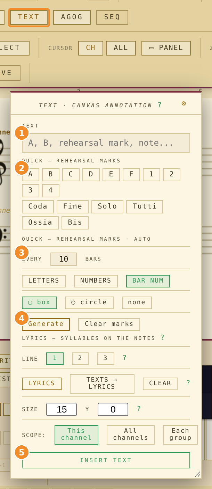
Repetitieletters in het hele werk in één keer zetten:
- Typ bij EVERY ③ om de hoeveel maten (bijvoorbeeld 10).
- Kies LETTERS (A, B, C…), NUMBERS (1, 2, 3…) of BAR NUM (het maatnummer).
- Kies het kader: box (vierkant), circle of none (geen kader).
- Druk op Generate ④. Clear marks haalt ze weg.
- SCOPE: This channel, op dit instrument; All channels, op allemaal; Each group, één keer voor elke groep notenbalken.
- De woorden van een lied, lettergreep per lettergreep onder de noten, schrijf je in het deel LYRICS: zie Liedtekst.
Zo weet je dat het gelukt is: de tekst verschijnt boven de notenbalk, op de plaats van de cursor.
Liedtekst · de lettergrepen vastgemaakt aan de noten
Voor een lied, een koor of een oefening met tekst schrijf je de liedtekst niet als losse tekst maar noot voor noot. Elke lettergreep wordt in zijn noot bewaard en gecentreerd eronder getekend: als je de zoom of de spatiëring verandert, volgt de lettergreep zijn noot, en bij de herhalingen gaat ze niet verloren. Het staat in de popup TEXT, in het blok Lyrics.

De liedtekst typen. Zet de cursor op de noot waar de tekst begint —of selecteer ze— en druk op LYRICS. Er verschijnt een veld boven de noot: je typt de lettergreep en Spatie (of Tab) gaat naar de volgende noot. Loopt het woord door, dan typ je in plaats van de spatie het koppelteken -: de lettergreep houdt haar koppelteken en je gaat naar de volgende noot. Shift+Tab gaat terug naar de vorige noot, Enter sluit af en Esc stopt zonder op te slaan wat je het laatst typte. Rusten en overgebonden noten worden vanzelf overgeslagen.
Een voorbeeld: voor „Twinkel twinkel kleine ster” typ je Twin - kel Spatie twin - kel Spatie klei - ne Spatie ster. Duurt een lettergreep meerdere noten (een melisme), druk dan op Spatie op de volgende noten zonder iets te typen: ze blijven zonder lettergreep en de vorige lettergreep wordt verlengd. Om een lettergreep te verbeteren zet je de cursor op haar noot en druk je op LYRICS: het veld toont wat erin staat; je wist het en typt de nieuwe.

Hoe het eruitziet. Tussen de lettergrepen van één woord tekent de Score het koppelteken, gecentreerd in de vrije ruimte; als de laatste lettergreep van een woord meerdere noten duurt, tekent hij de verlengingslijn tot de laatste noot van het melisme. Size verandert de grootte van de liedtekst van het kanaal en Y zet hem lager of hoger ten opzichte van de notenbalk, bijvoorbeeld bij heel lage noten; met Line 2 of 3 gekozen verschuift Y de vertaling. Elk kanaal heeft zijn eigen liedtekst: een vierstemmig koor heeft een tekst op elke notenbalk.

De vertaling. Onder de liedtekst is plaats voor nog twee regels vertaling. Kies Line 2 (of 3) en druk op LYRICS op de eerste noot van een zin: typ daar de hele zin, met spaties, en Tab gaat naar de volgende noot (Tab op noten waar geen zin begint laat ze leeg). Elke zin blijft aan zijn noot vast en wordt cursief getekend, uitgelijnd vanaf die noot en onder het systeem, ook als de liedtekst bij de bovenste notenbalk hoort. Line 1 gaat terug naar de gezongen tekst. CLEAR en TEXTS → LYRICS werken op de gekozen regel.

TEXTS → LYRICS dient voor een liedtekst die al als losse teksten van het kanaal geschreven was: het maakt er echte liedtekst van, en elke tekst gaat naar de noot die het dichtst bij zijn tel ligt. CLEAR wist de liedtekst van het actieve kanaal. Alles is ongedaan te maken met Undo en wordt met het stuk bewaard in de .mmf. De liedtekst reist ook mee in MusicXML: hij gaat mee bij het exporteren (elke lettergreep met haar koppelteken, de vertaling als strofen 2 en 3) en komt binnen bij het importeren van XML uit Finale, MuseScore of Sibelius.
Demomodus · een stuk tonen zonder het te bewerken
Om een stuk voor te stellen —in de klas, op een scherm of om een video op te nemen— opent de Score in demomodus door ?demo aan het adres toe te voegen: mm-score-page.html?demo. De bewerkingsbalken, het klavier en de knoppen bovenaan worden verborgen; de partituur en de onderste balk blijven, met Play, Pause, Stop en de maatsprongen. Spatie speelt en stopt. Niets wat je op de partituur doet verandert ze: een klik zet alleen de cursor om van daar te spelen.
Met &file= opent meteen een bestand, en met &page wordt het als blad getoond: mm-score-page.html?demo&file=../Claude%20outputs/Claude-2026-seikilos.mmf&page. Het geluid reist mee met de pagina: de demo laadt de Keyboard verborgen, als motor, en het stuk klinkt zonder iets anders te openen (als er al een Keyboard open is, gebruikt hij die).
Bovenaan, gecentreerd naast de titel, heeft de demo drie knoppen: PAGE / SCROLL wisselt tussen het blad en de strook, PRINT maakt het blad klaar en opent het afdrukken met de pagina’s klaar (de browser toont altijd eerst zijn afdrukvenster), en PULSE opent de metronoom.

Dynamiek · een aanduiding, of een crescendo over twee maten
De dynamiek zegt hoe luid of zacht je speelt: pp heel zacht, p zacht, mf half luid, f luid, ff heel luid. De vorken (crescendo en diminuendo) zeggen dat de klank beetje bij beetje groeit of wegsterft.

Een dynamiekteken zetten:
- Zet de cursor op de noot waar het begint.
- Druk op de knop DYN.
- Klik op het teken ④: p, f, mf…
Een vork zetten:
- Zet de cursor waar hij begint, of selecteer het stuk dat je wilt.
- Klik op crescendo of diminuendo ①.
Zonder selectie is de vork één maat lang. Wil je hem langer of korter, sleep dan aan zijn punt.
- cresc. en dim. in woorden ② dienen als de getekende vork niet past. SPAN zegt hoe lang ze duren: 1 beat (een tel), ½ bar of 1 bar.
- SCOPE ③: This channel, alleen dit instrument; All channels, het hele orkest; Selected, de instrumenten die je aanvinkt.
- In de onderste rij ⑤ kun je een woord voor of na het teken schrijven, zoals “più f” of “p subito”.
Zo weet je dat het gelukt is: het teken of de vork verschijnt onder de notenbalk, en bij het spelen hoor je de verandering.
Articulaties · het staccato, de streek, de triller
Articulaties zijn de kleine tekens boven of onder de noot die zeggen hoe je ze speelt: de punt van het staccato (kort), het streepje van het tenuto (aangehouden), het accent > (met kracht).
Een articulatie zetten:

- De bovenste regel ① zegt waar het terechtkomt: het kanaal, de cursor of de selectie, en hoeveel noten (bijvoorbeeld “1 note”).
- SIDE ②: auto beslist zelf of het teken boven of onder komt; beam zet het aan de kant van de stok; head, aan de kant van het nootkopje.
- De tekens ③ staan in groepen: TOUCH (staccato, tenuto…), EMPHASIS (accenten), TIME (fermata, caesura, breath), PEDAL en, verder naar onder, de versieringen (trill, turn, mordent, tremolo).
- Met een selectie zet ped het pedaal in waar ze begint en laat het los waar ze eindigt.
Zo weet je dat het gelukt is: het teken verschijnt op de noot, en bij het spelen hoor je het: het staccato klinkt kort, het accent luider.
Duur · de nootwaarde kiezen voordat je schrijft
Voor je een noot schrijft, kies je hoe lang ze duurt: haar nootwaarde (hele, halve, kwartnoot, achtste…). De nootwaarde blijft ingesteld, en elke noot die je schrijft krijgt die waarde tot je een andere kiest.
De nootwaarde kiezen:
- Druk op de knop DUR.
- Klik op de nootwaarde ②: 1/1 is de hele noot, 1/2 de halve, 1/4 de kwartnoot, 1/8 de achtste noot, en zo verder tot 1/64.
- Schrijf de noten.

Sneltoets: je kunt de nootwaarde ook kiezen met de numpad, zonder de popup te openen.
Rusten schrijven: klik nog eens op de nootwaarde die al oplicht. Nu wordt elke noot een rust. Nog een klik, of een andere nootwaarde, en je bent terug bij de noten.
De vier knoppen onderaan ③:
- DOT zet de punt: de noot duurt anderhalve keer zo lang. Het geldt alleen voor de volgende noot.
- GRACE laat de noten verschijnen als voorslagen. Elke klik verandert: ACCIACCATURA (doorgestreept), APPOGGIATURA, uit. Het blijft aan tot je het uitzet.
- REST zet een rust van de gekozen nootwaarde waar de cursor staat.
- TUPLET opent de triool: drie noten op de plaats van twee.
Zo weet je dat het gelukt is: de gekozen nootwaarde blijft groen oplichten, en de noot die je schrijft heeft die vorm.
Expressie · dolce, espressivo, en hoever ze reiken
Een expressie is een woord dat het karakter van de muziek zegt: dolce (zacht, lief), espressivo, agitato, cantabile. In Music Motion is het woord niet alleen inkt: het instrument leest het en verandert zijn manier van spelen.
Een expressie zetten:
- Zet de cursor waar ze begint.
- Druk op de knop EXPR.
- Typ het woord ① of klik op een van de snelle woorden ②.
- Druk op Insert Expression ④.

- Het woord geldt vanaf daar tot de volgende expressie van hetzelfde instrument.
- SCOPE ③: This channel, alleen dit instrument; All channels, allemaal.
- Met Show uit verdwijnt het woord uit de partituur, maar het instrument blijft het spelen.
- Je kunt het in je eigen taal schrijven: zie hoe.
Zo weet je dat het gelukt is: het woord verschijnt cursief boven de notenbalk.
AGOG · wie beslist over het rubato
Agogiek is de vrijheid van de tijd: een noot of een frase een beetje rekken, zoals een muzikant doet als hij ademt (het rubato). Deze popup is de kaart van de agogiek in je werk: hij zegt waar er is en brengt je erheen.

De agogiek in je werk bekijken:
- Druk op de knop AGOG.
- In de lijst ① zie je elke frase (⌘) en elke gerekte noot (◆), in de volgorde van de maten.
- Klik op een ervan: de cursor gaat erheen en de editor opent, zodat je ze kunt verbeteren.
Een frase agogiek geven:
- Selecteer met SELECT de maten van de frase.
- Druk op AGOG en dan op ⌘ Phrase from selection ②. De agogiek van de frase opent, waar je kiest hoe ze ademt.
Het is hetzelfde als rechtsklikken op de selectie en ⌘ ASYM AGOG kiezen. Als er niets geselecteerd is, zegt de knop het je.
Eén noot rekken: rechtsklik op de noot en druk op ← AGOG. Zie AGOG van de noot.
- Show all ③ toont of verbergt alle agogische tekens in de partituur. Verborgen blijven ze in het bestand bewaard.
Zo weet je dat het gelukt is: de nieuwe frase of noot verschijnt in de lijst, bij haar maat.
Tools · wanneer het scherm volloopt met panelen
Terwijl je werkt, open je veel popups en het scherm loopt vol. TOOLS dient om ze te ordenen en om de instellingen te openen.

- Open popups ①: Top opent ze onder de bovenste balk; Bottom, boven het klavier.
- View popups ②: Free, elk waar je het liet; Cascade, trapsgewijs; Grouped, naast elkaar; Stack, op elkaar, zoals een stapel kaarten. Meer details.
- De lijst ③ toont de open popups: elk met een pijl om het naar voren te halen en een kruisje om het te sluiten.
- Hide all ④ verbergt alle popups in één keer; de toets X doet hetzelfde en toont ze weer. Reset positions zet ze terug op hun gewone plaats.
- Score Options en Preferences ⑤ openen de instellingen: hoe de partituur eruitziet en hoe de Score zich gedraagt.
Score Options · het blad laten ademen
Score Options regelt hoe de partituur eruitziet: of de noten te dicht of te los staan. Het opent vanuit TOOLS.

- Note spacing ①: de ruimte tussen de noten. Het geldt voor het hele werk; met een actieve selectie alleen voor dat stuk.
- Note size ②: de grootte van de noten, bijvoorbeeld kleiner voor een partij die alleen als houvast dient (cue). Er is een selectie nodig.
- Staff spacing ③: de ruimte tussen de notenbalken, voor het hele werk.
- Bar numbers ④: Continuous nummert de maten doorlopend; Per movement begint opnieuw bij elke beweging. Het verandert alleen wat je ziet: om naar een maat te gaan, blijft het nummer het doorlopende.
Zo weet je dat het gelukt is: de partituur verandert zodra je de waarde kiest.
Preferences · hoe je wilt dat de Score zich gedraagt
Preferences bewaart hoe je graag werkt. Je stelt het één keer in en het blijft bewaard voor de volgende keer. Het opent vanuit TOOLS.

- ① Open in: de map waar IMPORT MMF begint: de laatst gebruikte (Last used) of Documents.
- ② Coach: On of Off, of de Coach-app je tips geeft terwijl je schrijft.
- ③ Remember place: met On opent elk popup weer waar je het liet, met zijn grootte.
- ④ Save on its own: bewaart vanzelf om de 2, 5 of 10 minuten; Off doet dat niet.
- ⑤ Messages: de taal van de berichten. Met FR, NL of DE verschijnt de gids in die taal en de berichten voorlopig in het Engels.
- ⑥ Colours: de kleur van het scherm: Dark, Gray, Clear (zoals papier) of Contrast. Arrangement ordent de popups, zoals in TOOLS.
- ⑦ Warnings on open: Quiet controleert het bestand zonder je te storen; On screen toont je daarnaast welke maten je best bekijkt.
- ⑧ Notation: Key change zegt welke voortekens vervallen bij een wisseling van toonaard (Dropped only, alleen die wegvallen; All, allemaal); Slur is de vorm van een nieuwe legatoboog; Sizes, de grootte van dynamiek (DYN) en articulaties (ART); SUBDIV, Auto leidt ze bij het openen af uit de muziek en File gebruikt die van het bestand.
Referentietoonhoogte · spelen op 415, zoals in de barok
De stemtoon is de A waarop het hele orkest stemt. Vandaag gebruikt men A = 440 Hz (440 trillingen per seconde). In de barok lag hij lager, rond 415.
Hem veranderen:
- Druk op de knop A= 440 in de bovenste balk.
- Kies een van de historische ②, of verschuif de schuifregelaar ① voor een precieze waarde.
- Reset ③ gaat terug naar 440.

- Het transponeert niet: het hele werk klinkt iets lager of hoger, maar de geschreven noten veranderen niet.
- Het is dezelfde A= als in het Keyboard: hem daar veranderen terwijl de Score speelt, werkt ook.
Zo weet je dat het gelukt is: de knop toont het nieuwe getal en de muziek klinkt lager of hoger.
Ongedaan maken en wissen · teruggaan, of een kanaal leegmaken
Ongedaan maken draait het laatste terug wat je deed. De sneltoets is Ctrl+Z (of de toets Backspace ←), en Ctrl+Y doet het opnieuw. Deze popup dient om meerdere stappen in één keer terug te gaan, en om te wissen.
Voor één stap hoef je de popup niet te openen: de pijlen aan weerszijden van de knop doen hetzelfde als de sneltoetsen. ↩ ④ maakt één stap ongedaan (zoals Ctrl+Z) en ↪ ⑤ doet hem opnieuw (zoals Ctrl+Y).
Meerdere stappen ongedaan maken:
- Druk op de knop ↩ UNDO.
- Kies hoeveel stappen ①: 1, 3, 5 of 10.
- Druk op ↩ Undo ②.

Wissen ③:
- At cursor: de noten van het actieve instrument die precies op de cursor staan.
- Selection: wat je geselecteerd hebt. Als er niets geselecteerd is, doet het niets.
- Active CH: alle noten van het actieve instrument. All CH: alle noten van alle instrumenten. Deze twee vragen het eerst voor ze wissen.
- Alles wat je wist, kun je ongedaan maken.
Zo weet je dat het gelukt is: onder de getallen zegt een regel hoeveel stappen er bewaard zijn. “No history yet” betekent dat er nog niets ongedaan te maken is.
Kanalen · een instrument aan het stuk toevoegen
Elk instrument van je werk woont in een kanaal: een rij in deze lijst en een notenbalk in de partituur. De Score heeft 32 kanalen.
Een instrument toevoegen:
- Druk op de knop ⚙ CHANNELS.
- Druk op + ADD CHANNEL ④: het volgende kanaal gaat aan en zijn notenbalk verschijnt.
- Open in zijn rij de lijst ② en kies het instrument.

Zo weet je dat het gelukt is: de nieuwe notenbalk verschijnt met de naam van het instrument, en bij het spelen klinkt hij met zijn eigen klankkleur.
- Het vakje ① zegt of de notenbalk te zien is. Uit verdwijnt hij van het scherm maar blijft hij klinken: zien en niet zien.
- Het instrument ② bepaalt hoe het kanaal klinkt: meer details.
- 👁 maakt de notenbalk vaag; ◉ demt hem (horen en niet horen); FX geeft hem galm of echo (Sound FX).
- ☰ opent de groepsopties, om twee instrumenten op één notenbalk te zetten.
- List ⑤ laadt een kant-en-klare lijst met instrumenten, in plaats van ze een voor een te kiezen.
De strook · wat je voortdurend gebruikt, binnen handbereik
Knop BAND ♪. Een strook die de cursor volgt met wat je bij het schrijven het vaakst nodig hebt: voorslag, punt, tuplet, voorteken, agogiek, articulatie en dynamiek. Ze is er zodat je geen vier pop-ups hoeft te openen om één frase te schrijven.
De spelstand · waar de leerling staat
Rechtsklik op het logo. Toont het minilesje van de Coach en hoe het compositiespel verloopt: welke regel aan de beurt is, wat bereikt is en wat nog rest.
Sneltoetsen · die je gebruikt zonder het toetsenbord te verlaten
Rechtsklik op ✎ INFO. De korte tabel van wat de moeite waard is om uit het hoofd te kennen: het numerieke toetsenblok voor de nootwaarden, spatie om af te spelen, Ctrl+Z, Esc. En de link naar de volledige lijst, die je kunt afdrukken.
Op de partituur, over wat je al schreef — rechtsklik op de noot, de boog of de versiering die verbeterd moet worden.
Noteneditor · een noot verbeteren zonder ze opnieuw te schrijven
De noteneditor dient om een noot te veranderen die je al geschreven hebt: luider of zachter, met een ander voorteken, met de stok naar de andere kant, veranderd in een rust…
Om hem te openen: rechtsklik op de noot ①. Bovenaan staat welke noot het is en waar, bijvoorbeeld «DN5 · M1 B2» (D5, maat 1, tel 2).
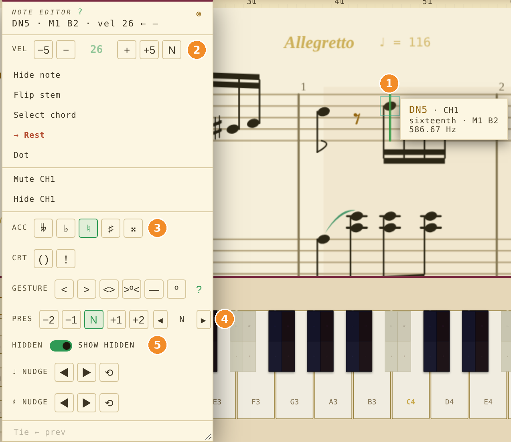
Wat je het meest gebruikt:
- VEL ②: hoe luid deze ene noot klinkt. + en − veranderen ze met 1, +5 en −5 met 5. N geeft ze terug aan wat de dynamiekband zegt.
- Hide note verbergt de noot: ze klinkt nog, maar wordt niet afgedrukt. Flip stem draait de stok om. → Rest maakt er een rust van. Dot zet de punt erbij of haalt hem weg.
- ACC ③: het voorteken. Dubbelmol, mol, herstellingsteken, kruis, dubbelkruis.
- PRES ④: de aanwezigheid, het gewicht van de aanslag, van −2 tot +2. Om een binnenstem van een akkoord meer te laten horen, geef je ze PRES +1.
Een noot met een veranderde VEL of PRES draagt geen enkel teken in de partituur. Om ze te vinden zet je SHOW HIDDEN ⑤ aan: naast elke noot verschijnt in het grijs wat ze heeft (bijvoorbeeld «v96»), en haar kop wordt lavendelkleurig. Dat zie je alleen op het scherm, nooit op het afgedrukte blad.
Zo weet je dat het gelukt is: de verandering zie (of hoor) je meteen aan de noot, en de bovenste regel van de editor toont de nieuwe waarde. Vergist? UNDO maakt het ongedaan.
Van hieruit open je ook de editors van de legatoboog, de stok en de waardestreep, en met de rij ³ TUPLET die van de triool.
Legatoboog-editor · zodat de boog wordt zoals je hem bedoelde
Een legatoboog is de boog die meerdere noten verbindt: ze worden samen gespeeld, in één frase. De legatoboog-editor dient om te veranderen waar hij begint en eindigt, hoe hij eruitziet en hoe hij gespeeld wordt.
Om hem te openen: rechtsklik op de boog ①. De boog toont drie punten en de editor gaat ernaast open.

Bovenaan, Anchors: de pijlen ◀ ▶ van Start en End verschuiven het begin of het einde van de boog naar de vorige of de volgende noot.
De vorm van de boog ② verandert de tekening van de boog niet: ze verandert hoe de frase gespeeld wordt. De groene lijn in de editor toont het je, en in de partituur zie je het aan de kleur van de boog: groen waar de frase luider is, goudkleurig waar ze zachter is.
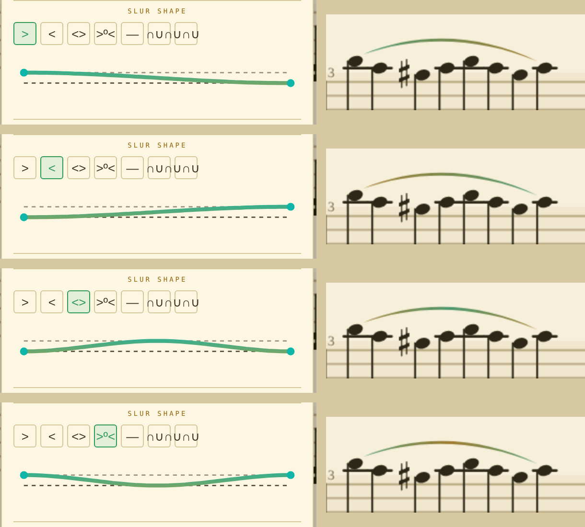
- > neemt af: begint sterk en eindigt zacht. < groeit: omgekeerd.
- <> opent in het midden en sluit. >º< zakt in het midden en komt terug.
- — vlak: aangehouden, zonder verandering. Met die vorm wordt de boog geboren.
- ∩∪∩ en ∪∩∪: noten per twee, sterk-zwak of zwak-sterk. De boog ziet er hetzelfde uit.
Hoeveel hij stijgt of daalt, kies je in Dynamics ③: Peak is hoeveel luider het hoogste punt wordt (+1 tot +4), en Valley hoeveel zachter het laagste (−1 tot −4), altijd ten opzichte van de geschreven dynamiek.
De knoppen die de tekening van de boog veranderen, zodat hij nergens tegenaan botst:
- Vertical ④: zet de hele boog hoger of lager (All) of alleen één uiteinde (Left, Right).
- Horizontal ⑤: verschuift het begin of het einde opzij.
- Curva ⑥: hoeveel de boog krom loopt, links, in het midden of rechts.
- Arrastre ⑦: de drie punten van de boog kun je ook met de muis slepen; ze klikken vast op ¼ van een tussenruimte (met Shift op ½). Deze rij toont hoeveel je ze verschoof, en ↺ Arrastre maakt alleen dat ongedaan.
- ⑧ ↕ Flip zet de boog aan de andere kant van de noten. ↔ Mirror spiegelt hem van links naar rechts. ↺ Reset geeft hem zijn automatische tekening terug. ✕ Delete slur wist de boog.
Zo weet je dat het gelukt is: de boog verandert in de partituur zodra je op een knop drukt, en als je luistert, volgt de frase de vorm die je koos. Bevalt het je niet, dan maakt UNDO het ongedaan.
Een boog van drie maten of meer hecht elk uiteinde vanzelf aan de juiste kant: aan de notenkop als de boog aan de kant van de kop ligt, aan het eind van de stok of aan de waardestreep als hij aan de kant van de stok ligt.
Stokeditor · wanneer de stok botst of te kort schiet
De stok is het verticale streepje van de noot. Het Score tekent hem vanzelf, naar boven of naar beneden, afhankelijk van hoe hoog de noot is. De stok-editor dient om hem te veranderen als hij ergens tegenaan botst of te kort is.
Om hem te openen: rechtsklik op de noot; kies in de noteneditor die opengaat STEM EDITOR ①.
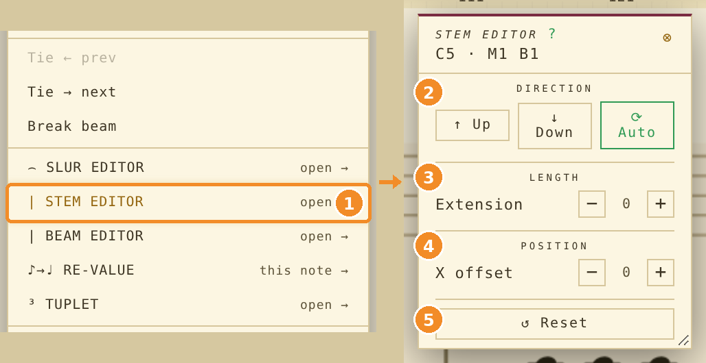
- Direction ②: ↑ Up zet de stok naar boven, ↓ Down naar beneden en ⟳ Auto laat het Score kiezen.
- Extension ③: + maakt de stok langer en − korter, bijvoorbeeld zodat hij tot aan de waardestreep komt.
- X offset ④: verschuift de stok opzij. Handig bij secunden, als twee naburige noten de stok delen.
- ↺ Reset ⑤: geeft de stok terug zoals het Score hem tekent.

Zo weet je dat het gelukt is: de stok verandert in de partituur zodra je op de knop drukt. Het is alleen tekening: de noot klinkt hetzelfde.
Waardestreepeditor · verbinden, onderbreken en bepalen hoe de groep klinkt
De waardestreep is de dikke lijn die achtsten en zestienden in groepen verbindt, zodat ze makkelijk te lezen zijn. Het Score maakt de groepen vanzelf; de waardestreep-editor dient om ze te verbinden, te breken of te verschuiven.
Om hem te openen: rechtsklik op een noot van de groep; kies in de noteneditor BEAM EDITOR ①. Sneltoets: selecteer een noot en druk op Shift+B.
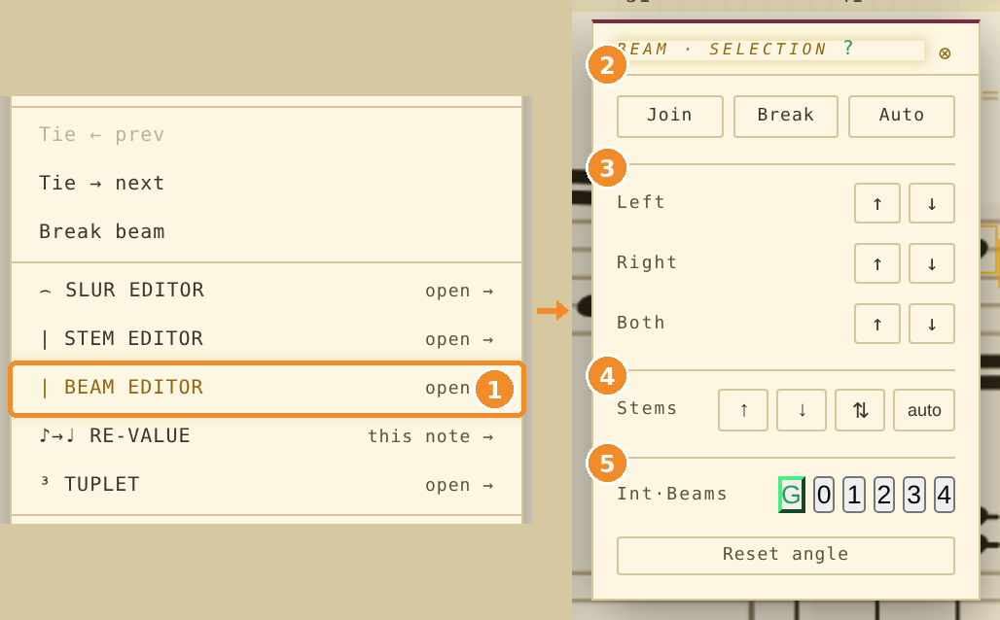
- Join ② verbindt de geselecteerde noten tot één groep; Break scheidt ze, elk met een eigen vlaggetje; Auto gaat terug naar de groepen van het Score. Wat je tekent is ook wat je hoort: het Score speelt de groep zoals hij eruitziet.
- Left, Right en Both ③ zetten het linker uiteinde, het rechter of de hele streep hoger (↑) of lager (↓). Reset angle, onderaan, geeft de streep haar automatische helling terug.
- Stems ④: alle stokken van de groep naar boven, naar beneden, omgedraaid (⇅) of automatisch.
- Int·Beams ⑤: hoeveel luider de belangrijke noten van de groep klinken dan de andere, van 0 (allemaal gelijk) tot 4 (heel duidelijk). G gebruikt de instelling van het hele stuk. Meer in Intelligent Beams.

Zo weet je dat het gelukt is: je ziet de streep meteen verbonden, gebroken of verschoven, en als je luistert, klinkt de groep zoals je hem tekende. Vergist? UNDO maakt het ongedaan.
Tupleteditor · de haak en het getal
Een triool zijn drie noten die de plaats van twee innemen. Erboven staat een 3, soms met een haak. De triool-editor verandert hoe die haak en dat cijfer eruitzien.
Om hem te openen: rechtsklik op de haak of het cijfer van de triool ①.

- Bracket ②: Slur tekent een boog, Straight een rechte haak en None niets, alleen het cijfer.
- Number ③: On toont het cijfer en Off verbergt het.
- Angle ④ laat de haak hellen (↻ geeft hem zijn automatische helling terug) en Move verschuift hem zodat hij de noten niet bedekt. Size verandert de grootte van het cijfer.
- ✕ Untuplet ⑤ maakt de triool ongedaan: de noten krijgen hun gewone waarden terug. Het is het enige in deze editor dat de klank verandert.

Zo weet je dat het gelukt is: de haak en het cijfer veranderen zodra je op de knop drukt; de triool klinkt hetzelfde. Vergist? UNDO maakt het ongedaan.
Overbindingsboog-editor · zodat hij de koppen niet raakt
Een overbindingsboog is de boog die twee gelijke noten verbindt: ze klinken als één lange noot. Hij is anders dan de legatoboog, die verschillende noten verbindt.
Om hem te openen: rechtsklik op de overbindingsboog ①.

- Vertical ②: All zet de hele boog hoger of lager.
- Horizontal ③: Left en Right verschuiven elk uiteinde opzij.
- Curve ④: Bow maakt de boog meer of minder krom.
- ↕ Flip ⑤ zet de boog aan de andere kant van de noten. ↺ Reset geeft hem zijn automatische tekening terug en ✕ Remove tie haalt hem weg.
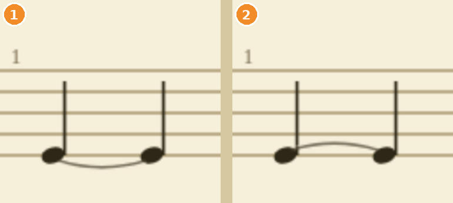
Zo weet je dat het gelukt is: de boog verandert meteen in de partituur. Het is alleen tekening: de twee noten klinken al als één, zonder dat je iets aanraakt. Vergist? UNDO maakt het ongedaan.
Crescendoteken-editor · het crescendo uitrekken tot waar het gaat
Een crescendoteken is de open wig onder de notenbalk: < is crescendo (de muziek groeit) en > diminuendo (ze dooft uit). Met de editor bepaal je waar het begint, waar het eindigt en hoe het eruitziet.
Om hem te openen: rechtsklik op het teken ①. Druk in het menu van de dynamiek op Edit hairpin… (sneltoets: E). Dubbelklikken op het teken opent hem ook.

- Horizontal ②: Start en End verschuiven het begin en het einde; Span zegt van welke maat tot welke maat het gaat; Angle opent of sluit de wig.
- Vertical ③: Y offset zet het teken hoger of lager.
- Dinámica · lectura ④ zegt je wat je zult horen: de sterkte waarmee het begint, de sterkte die het bereikt en over hoeveel noten. Bijvoorbeeld «26 → 53 · 7 notes»: het groeit over zeven noten.

Zo weet je dat het gelukt is: het teken verandert meteen in de partituur, en als je luistert, gaat het crescendo tot waar je het uitrekte. Vergist? UNDO maakt het ongedaan.
Editor van het interpretatieteken · het gebaar van de noot
Het gebaar van de noot is hoe een noot groeit of uitdooft terwijl ze duurt. Het dient vooral op één noot: een lange noot, een fermate, het einde van een frase. Het wordt geschreven met een teken boven de noot, en dat teken klinkt: het is niet alleen een aanwijzing voor wie leest.
Om hem te openen: rechtsklik op het teken ①.

- Gesture ②: < bloeit open (groeit) · > neemt af · <> messa di voce (groeit en dooft uit) · >º< zakt in het midden en komt terug · — sostenuto (gelijk). º voegt de niente toe: beginnen of eindigen vanuit het niets. De groene lijn bovenaan tekent het gebaar.
- Placement ③: verplaatst het teken (↑ ↓ ← →), zet het boven of onder (Above, Below) of verbergt het (Show): verborgen klinkt het hetzelfde.
- Size ④: de grootte van het teken.
- Value ⑤: Peak (+1 tot +4) is hoeveel het stijgt en Valley (−1 tot −4) hoeveel het daalt, gemeten vanaf de dynamiek die op die noot geldt. Eén stap is ongeveer één dynamiekniveau.
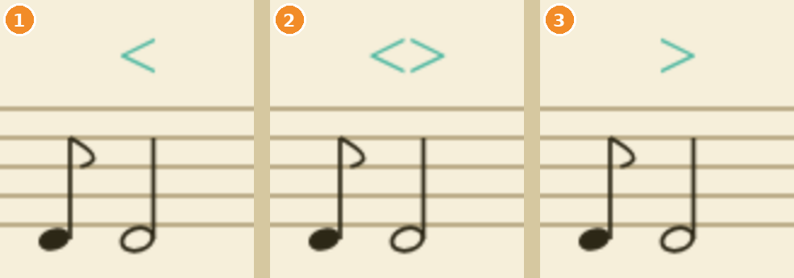
Het is niet hetzelfde als PRES, in de noteneditor: PRES verandert het begin van de noot (de aanslag); het gebaar verandert wat daarna gebeurt.
Zo weet je dat het gelukt is: het teken boven de noot verandert, de groene lijn van de editor toont de vorm, en als je luistert, groeit of dooft de noot zoals je koos. Vergist? UNDO maakt het ongedaan.
Trillereditor · hoe lang hij duurt en hoe hij versnelt
Een triller (tr met een golvende lijn) is een noot die heel snel afwisselt met haar bovenbuur. De editor bepaalt hoe lang hij duurt, hoe snel hij gaat en welke buurnoot hij gebruikt.
Om hem te openen: rechtsklik op het teken ①. Druk in het menu dat verschijnt op ✎ TRILL EDITOR, de knop met het oranje kader.

- Span ②: Beats zegt hoeveel tellen de triller duurt. ↺ Auto laat hem duren zolang de noot met haar overbindingen.
- Tempo curve ③: hoeveel afwisselingen per tel. Start is de snelheid bij het begin, Stable de snelheid als hij stabiel is en Stable pos waar hij stabiel wordt; Release pos is waar hij begint los te laten en End de snelheid aan het einde. De lijn eronder tekent die curve.
- Aux note ④: de buurnoot. auto volgt de voortekening; ♮ ♯ ♭ 𝄪 𝄫 veranderen ze, want de buurnoot is niet altijd die van de voortekening.

Zo weet je dat het gelukt is: de golvende lijn verandert van lengte in de partituur, en als je luistert, duurt en loopt de triller zoals je hem instelde. Vergist? UNDO maakt het ongedaan.
Dubbelslag-editor · gewoon of omgekeerd, op tijd of vertraagd
Een dubbelslag (het teken ∾) is een versiering van vier noten die rond de noot draaien: de bovenste, de noot, de onderste en de noot opnieuw.
Om hem te openen: rechtsklik op het teken ①. Druk in het menu dat verschijnt op ✎ TURN EDITOR, de knop met het oranje kader.

- Face ②: direct begint bij de bovenbuur; inverted bij de onderbuur. Het teken draait om.
- Place ③: on the note speelt de dubbelslag aan het begin van de noot; delayed speelt hem later, tegen het einde.
- Upper / Lower neighbour ④: het voorteken van elke buurnoot, met ♮ ♯ ♭ of dubbele 𝄪 𝄫. Een dubbelslag op ais vraagt fisis eronder.
- Speed ⑤: de waarde van elk notje; met auto kiest het Score.
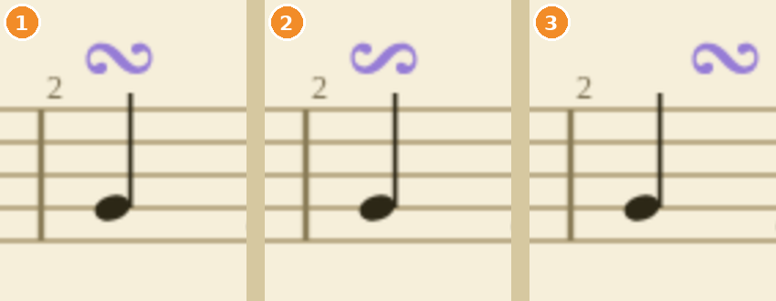
Zo weet je dat het gelukt is: het teken boven de noot verandert, en als je luistert, begint en valt de dubbelslag waar je koos. Vergist? UNDO maakt het ongedaan.
Mordent-editor · naar boven of naar beneden
Een mordent is een heel korte versiering: de noot, haar buurnoot en de noot opnieuw, heel snel.
Om hem te openen: rechtsklik op het teken ①. Druk in het menu dat verschijnt op ✎ MORDENT EDITOR, de knop met het oranje kader.

- Face ②: upper gaat naar de bovenbuur; lower naar de onderbuur. De onderste heeft een streepje door het teken.
- Sign ③: bepaalt wat er gedrukt wordt, zonder de klank te veranderen. Met tr wordt de bovenste mordent als «tr» geschreven, zonder golvende lijn, zoals de korte triller van drie noten bij Mozart of Haydn (si–do–si en verder).
- Neighbour ④: het voorteken van de buurnoot; auto volgt de voortekening.
- Speed ⑤: de waarde van elk notje; met auto kiest het Score.

Zo weet je dat het gelukt is: het teken boven de noot verandert, en als je luistert, gaat het notje naar de kant die je koos. Vergist? UNDO maakt het ongedaan.
Tremolo-editor · afgemeten of vrij
Een tremolo zijn streepjes dwars door de stok: de noot wordt heel vaak en snel herhaald. Hoe meer streepjes, hoe sneller de herhalingen.
Om hem te openen: rechtsklik op het teken ①. Druk in het menu dat verschijnt op ✎ TREMOLO EDITOR, de knop met het oranje kader.

- Divisions ②: 1, 2 of 3 streepjes, dat zijn achtsten, zestienden of tweeëndertigsten van de tel. Dat is wat je leest.
- Measure ③: measured speelt precies die herhalingen, als een uitgeschreven herhaling; free herhaalt snel zonder te tellen, zoals het tremolo van de strijkers.

Zo weet je dat het gelukt is: het aantal streepjes op de stok verandert, en als je luistert, herhaalt de noot zich op die snelheid. Vergist? UNDO maakt het ongedaan.
Arpeggio-editor · hoe lang het duurt om zich te ontvouwen
Een arpeggio is de verticale golvende lijn voor een akkoord: de noten klinken niet samen maar na elkaar, heel snel.
Om hem te openen: rechtsklik op het teken ①. Druk in het menu dat verschijnt op ✎ ARPEGGIO EDITOR, de knop met het oranje kader.

- Direction ②: ↑ up begint bij de laagste noot; ↓ down bij de hoogste. De pijl van het teken toont het.
- Spread ③: hoeveel milliseconden er tussen twee noten zitten. Eronder staat het totaal, bijvoorbeeld «3 notes · 90 ms in total». Daar zit het verschil tussen een harparpeggio, traag, en een piano-arpeggio, bijna samen.

Zo weet je dat het gelukt is: de pijl van het teken verandert, en als je luistert, opent het akkoord zich in die richting en op die snelheid. Vergist? UNDO maakt het ongedaan.
Groepsmaatstrepen · de strijkers met één maatstreep verbinden
Rechtsklik op de accolade of haak van de groep, in de marge: het teken licht op wanneer de muis erboven is. Geef de groep een naam en bepaal of de maatstrepen van de ene notenbalk tot de volgende getekend worden, zoals in een orkestpartituur. Voor alle groepen tegelijk is er de schakelaar GROUP in BARS.
De rechtsklikmenu's — elk is het menu van het ding dat je aanraakte, en biedt alleen wat dat ding toelaat.
⠿ Selectie · een traject verplaatsen, kopiëren en herhalen
Rechtsklik binnen een selectie. Het gebruikelijke —kopiëren, knippen, plakken, dupliceren— plus wat echt helpt in een partituur: Replicate herhaalt het traject vooruit, Transpose verplaatst het omhoog of omlaag, Snap to grid zet wat buiten het raster viel recht zonder akkoorden te breken, Re-value verandert de nootwaarden, en Save section as bewaart dat traject als een eigen bestand.
⠿ Kanaal · een heel instrument naar een ander kopiëren
Rechtsklik op de notenbalk. Copy channel en Paste channel nemen het hele kanaal: de noten en ook de articulaties, dynamiek, expressie, agogiek en regio's. Zo bouw je de tweede viool op uit de eerste. Ook de sleutel van het kanaal verander je hier.
⠿ Kanaallabel · dempen, verbergen en Sound FX
Rechtsklik op de kanaalnaam, links van de notenbalk. Geef het kanaal de afkorting die afgedrukt wordt, demp het om de rest te horen, verberg het zodat het geen schermruimte inneemt, en hier opent de Sound FX van dat kanaal.
⠿ Maat · zien wat ze bevat, en haar patroon kopiëren
Rechtsklik op het maatnummer. Het is een leeskaart: welke noten de maat bevat, welke tekens, hoe het pedaal staat. En daaronder het praktische deel: kopieer het patroon van deze maat naar een reeks maten, voor het ostinato of de begeleiding die zich herhaalt.
⠿ Maatstreep · de stilte voordat de muziek verdergaat
Rechtsklik op de maatstreep. Hier komt de adem: de seconden die de muziek bij die maatstreep wacht, zodat de reverb uitsterft vóór het volgende deel. Attacca is adem 0. En je kunt aangeven dat daar een deel begint, met zijn label.
Als de maatstreep binnen de maat staat (de streep die u met BARS › After › Beat hebt gezet), zegt het menu dat — „in M24” — en komt er de rij Beat bij: met − / + verplaatst u ze naar een andere tel, en ✕ Verwijderen haalt ze uit de maat, die dan weer met een enkele maatstreep eindigt. De ademruimte en de systeemovergang blijven.
Als de maatsoort na de maatstreep verandert, voegt het menu de rij Time toe met Visible · Hidden. Hidden drukt de maatsoort niet af en houdt er geen plaats voor vrij, maar de maat behoudt haar lengte: dat dient voor de korte maat die een deel afsluit dat met een opmaat begon (de 1/4-maat van het Rondo alla Turca, vóór de coda). Op het scherm blijft een klein grijs label boven de maatstreep staan; met een rechtermuisklik erop toont u de maatsoort opnieuw.
⠿ Tekst · verbeteren of verplaatsen wat je typte
Rechtsklik op de tekst. Bewerk hem, verander de grootte of wis hem. Om hem te verplaatsen heb je het menu niet nodig: sleep hem gewoon.
⠿ Expressie · hoever het woord reikt
Rechtsklik op het woord. Verander de tekst, geef het een traject of neem het weg, verberg het zonder te wissen. De kaart eronder legt uit welke aanslag het van het instrument vraagt en welke toestand het achterlaat, elk met een eigen ?.
Wat de Status zegt. Wat dit woord vandaag doet, met dit bestand en dit instrument: klinkt (het verandert de klank, de timing of de dynamiek), sluit het vorige stuk af (zoals ord., semplice of naturale: het voegt niets toe, het beëindigt wat ervoor kwam) of klinkt nog niet (het woord is goed geschreven, maar heeft nog geen effect; de dag dat het dat wel heeft, speelt je bestand het zonder iets te veranderen).
Wat de Aanslag is. Hoe de hand de klank maakt. Het woord zegt de bedoeling en elk instrument voert ze op zijn manier uit: cantabile is de aangedrukte vinger op de piano, een trage aanslag op het klavecimbel en de vingertop op de harp. Op de piano verandert de aanslag vooral het kleine mechaniekgeluid dat je net voor de noot hoort. Hij geldt vanaf zijn maat tot het einde van zijn stuk (of tot het volgende woord van hetzelfde instrument), en een teken op de noot wint het. Meer in het lexicon.
⠿ Dynamiek · een f laten klinken zoals jij wilt
Rechtsklik op de aanduiding of op de vork. Het traject, de grootte, en de velocity als die ene f meer of minder moet zijn dan de standaard-f. JOIN verbindt twee opeenvolgende vorken, en de vorkeditor opent van hieruit.
⠿ Articulatie · verplaatsen, verbergen of naar de triller gaan
Rechtsklik op het teken, en het menu wordt op maat gebouwd: niet elke rij verschijnt elke keer. Bovenaan zegt een lila regel op welk teken je staat — het type, het kanaal (of de kanalen, als het verbonden is) en de maat. Bij een pedaal geeft die regel ook waar het binnen de maat valt en, bij een Ped, hoe lang de regio duurt tot het volgende pedaalteken, in tellen en in seconden op het tempo van die maat. Het is de snelle manier om een pedaal te zien dat te lang doorloopt.
Size −/+ verandert het lichaam van het teken in pixels, alleen voor dat ene teken. Daarna komen drie rijen die per teken verschijnen en die geen inkt zijn maar klank: Length (hoeveel van haar waarde de noot klinkt — die achter staccato en portato), Weight (hoe zwaar de aanzet is — die achter de accenten) en Hold (hoe lang ze aanhoudt — die achter fermate en cesuur). Elk begint op de standaardwaarde voor dat teken en wordt hier gecorrigeerd wanneer de passage iets anders vraagt.
Technique verschijnt alleen bij twee strijkerstekens en gaat naar de motor: bij arco is het het contactpunt (norm · tasto · pont · legno) en bij pizz de uitklank (pleno · secco · l.v.). Retake verschijnt alleen bij de streken ⊓ en V, en zegt waar de lucht zit: before betekent dat de stok opnieuw werd aangezet om deze noot te beginnen, after dat hij aan het eind opnieuw wordt aangezet om door te gaan naar de volgende, en de streep wordt getekend aan de kant van de onderbreking. In welke richting de stok gaat, wordt niet geschreven — het streekteken bepaalt dat al.
Heeft het teken een eigen editor, dan is de deur hier: triller, dubbelslag, mordent, tremolo en arpeggio openen hun venster vanuit dit menu. Een piano- of harparpeggio krijgt ook Extend to the staff above en Cut at this staff. Het teken verplaats je door het in beide richtingen te slepen, en de rij JOIN laat één teken voor meerdere kanalen tegelijk gelden.
Het pedaal heeft twee eigen rijen, en hier loont het om goed te kijken. Depth bij een Ped is hoe ver de voet naar beneden gaat: full · 3/4 · 1/2 · 1/4, standaard full — helemaal ingedrukt is de snaar vrij, gedeeltelijk is het vilt dat zonder gewicht rust, wat het lage lichaam wegneemt en de boventonen doorlaat. Bij een ✻ zijn de opties off · 1/4 · 1/2 · 3/4, en hier zit de valkuil: de breuk zegt wat er van het pedaal OVERBLIJFT, niet wat er wordt opgeheven. Alleen off sluit de regio; een gedeeltelijke ✻ laat het pedaal niet los — hij zet de regio voort met minder pedaal, en dat is wat de voet echt doet wanneer de dempers de snaar strelen in plaats van erop te vallen.
Simile verschijnt alleen bij de Ped en is herhaald pedaalgebruik: off (dit teken en niet meer) · to next mark (tot het volgende geschreven teken) · to bar M (tot de maat die je ernaast typt). Wat zich herhaalt, is niet alleen de Ped maar het hele pedaalpatroon van die maat —elke Ped en ✻ erin, met hun diepten— maat per maat afgedrukt; geschreven inkt wint altijd, en aan het eind van het traject laat de motor de voet los met een droge ✻. Vandaar de enige regel die je moet onthouden: als de laatste ✻ van de modelmaat gedeeltelijk is, sluit het pedaal in geen enkele maat van het traject en blijft het van begin tot eind ingedrukt. De Coach waarschuwt wanneer een regio langer dan vier maten open blijft, en de bovenste regel van het menu zegt hoeveel seconden ze duurt. Een verborgen teken pedaleert nog steeds: niet gezien worden haalt het niet uit de motor.
Helemaal onderaan de twee die vergeten worden. Hide marking (sneltoets H) haalt het teken van de pagina zonder zijn effect weg te nemen: het teken blijft in het .mmf-bestand en blijft klinken, wordt op het scherm grijs getekend op 60 % en wordt nooit afgedrukt. Bij een al verborgen teken luidt dezelfde rij Show marking en brengt die het terug als inkt. Let hier op: verborgen tekens zijn alleen zichtbaar —en alleen klikbaar— met SHOW HIDDEN aan, en die schakelaar zit in de pop-up TEMPO, ook al bestuurt hij alle inkt in het stuk. En Delete marking (sneltoets Del) verwijdert het echt; Ctrl+Z maakt dat ongedaan zoals elke andere stap.
⠿ Tempo · een al geplaatst tempo verbeteren
Rechtsklik op de tempoaanduiding. De term, de BPM en het traject. a tempo keert terug naar het vorige tempo, en dat wil je na een rallentando. En je kunt de ♩= verbergen zodat alleen het woord overblijft.
⠿ Asymmetrische regio · de frase die niet op het raster zit
Right-click on the region’s edge or body —on a note, the note editor wins, so look for a gap: just above the top staff line, or the edge itself—. Give it a name, hide it or delete it, and its editor opens from here: this is the phrase where time stretches and shrinks while the grid stays put. With a name, the region is a pattern: Take carries it from bar M to bar M' (repeating every so many bars as it is long) and reports how many copies it made; Hide all and Delete all “name” act on all of them at once. Careful: a hidden region does not play and does not answer the right-click either. To bring it back, put the cursor inside its span and press Alt+H: this same menu opens, with Show region and Show all (the shortcut is in the menu title, in brackets). The edges can be dragged; when you create it from a selection, check the left edge and take it to where the phrase really starts (for example, after a rest). Example: bar 226 holds an Inhale · Extreme region over all the voices and you want it in 227, 230 and 231. Right-click the region, Take 227 to 227 ✓; again, Take 230 to 231 ✓. The bars that should not get it (228–229) are skipped by doing two passes, and where a copy already exists it is not duplicated.
⠿ Systeem · de pagina opruimen voor het afdrukken
Rechtsklik op een systeem, in de pagina- of afdrukweergave. Verschuif het twee millimeter omhoog of omlaag, haal er een maat af of voeg er een toe zodat de regel goed afsluit, en vergrendel het zodat het niet verschuift terwijl je de rest opruimt.
⠿ Sectieteken · het Segno dat bedekt raakte
Rechtsklik op het Segno, de Coda of de Fine op het blad. Grootte, en het verschuift verticaal door te slepen. En van hieruit bewerk je de sectie waartoe het behoort.
⠿ Apply to zone · hetzelfde teken over een hele passage
Het verschijnt na het kiezen van een articulatie: in plaats van het teken noot per noot te plaatsen, kies je de zone en wordt het in één keer op de hele passage toegepast.
En die welke openen vanuit een knop of een sneltoets — die om aan een passage te werken: de loop, het traject, de frase, de effecten.
Int·Beams · een loopje laten klinken als een frase
Rechtsklik op de knop 3·2. Hier bepaal je hoeveel elke noot binnen de gebalkte groep zakt: de geschreven dynamiek is het plafond van de groep en de rest komt evenredig lager. General stelt het in voor het hele stuk; daarna kun je het per reeks maten, per kanaal of per groep aanpassen. 0 is gelijk, 4 is het meest uitgesproken.
Loop · de passage die je verbetert in een lus zetten
Rechtsklik op 🔁 LOOP. Markeer A en B, zet hem aan, en de passage herhaalt zich terwijl je eraan werkt. See the whole piece geeft je het volledige overzicht terug zonder de loop te verliezen.
Navigator · naar maat 74 gaan zonder ze te zoeken
Rechtsklik op de strook van de navigator. Go to measure brengt je naar de maat die je noemt; de zoom brengt je naar de A–B-loop; en je kunt een punt een sectielabel geven (A, B, Coda) om er met één klik naar terug te keren.
Sound FX · reverb en echo in de passage geschreven
Geluidseffecten veranderen hoe een kanaal klinkt: galm (de nagalm van een grote zaal), echo (de noot die zich herhaalt, telkens zachter), porta (naar de noot glijden) en vibrato (de noot die golft).
Om hem te openen: druk op FX ① in de rij van het kanaal, in de lijst ⚙ CHANNELS. Hij opent ook met een rechtsklik op de naam van het kanaal, links van de notenbalk, en dan Sound FX….
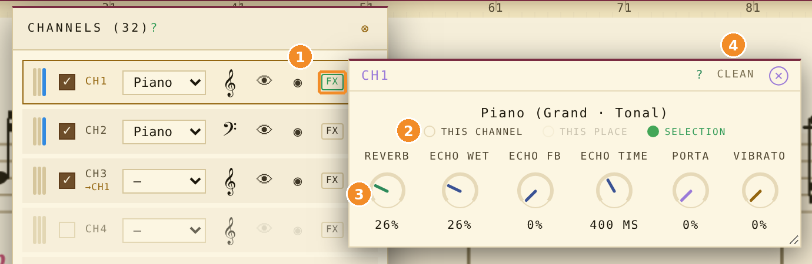
- Waar het geschreven wordt ②: This channel (het hele kanaal), This place (de geselecteerde noot) of Selection (het geselecteerde stuk). Een kanaal kan ze alle drie tegelijk hebben.
- De draaiknoppen ③: Reverb (hoeveel zaal) · Echo wet (hoeveel echo erbij komt) · Echo FB (hoeveel herhalingen) · Echo time (de afstand tussen de echo’s, van 80 tot 900 ms; neutraal is 400) · Porta (het glijden naar de noot, tot 400 ms) · Vibrato (de diepte, tot 50 cent). Je draait ze door de muis omhoog of omlaag te slepen; dubbelklikken zet de knop terug op neutraal.
- CLEAN ④ wist het effect van het gekozen gebied. Heeft dat gebied niets, dan wist hij het hele kanaal.
Tip: liever een kort stuk, zelfs één noot. Daar geven echo en galm karakter aan een melodie, en porta het glijden naar de noot. Een effect op het hele stuk is een mengtafel; een effect op één noot is interpretatie.
Zo weet je dat het gelukt is: de knop FX van dat kanaal wordt groen, en als je het stuk met ▶ speelt, hoor je het effect. Terwijl je aan de knop draait, hoor je het nog niet: je hoort het bij het afspelen. Elke draai aan een knop maak je ongedaan met UNDO (Ctrl+Z).
Het effect wordt in het stuk bewaard (het .mmf-bestand). Het Keyboard heeft een eigen knop ⊕ FX, voor wat je live speelt: zie ⊕ FX live. De twee tellen niet op en overschrijven elkaar niet. Meer details in Sound FX per kanaal en per gebied.
Frase-agogiek · de solist ademt en het orkest blijft staan
Vanuit het selectie- of regiomenu. Kies de as —tijd, druk of articulatie—, in welk deel van de frase je zit (inhale, move, arrive, exhale) en hoeveel: subtiel, expressief of extreem. De tekening versleep je met de muis tot de frase klinkt zoals jij haar zingt. Ze heeft een eigen ?.
Noot-AGOG · één enkele noot uitrekken
Knop ← AGOG in de noteneditor. Voor wanneer één noot moet meegeven en niet de hele frase: haar vorm, haar intensiteit en haar grootte.
Sequenties · het ostinato één keer schrijven
Een sequentie herhaalt de toestand van één maat over een heel stuk. Het typische geval is het pedaal: je schrijft hoe je één maat pedaleert en zegt “en zo verder tot maat 61”.

Een sequentie maken:
- Zet de cursor op de maat die als model dient (het patroon), of selecteer het hele stuk.
- Druk op SEQ in de bovenste balk. Het patroon staat al op de maat waar je bent.
- Kies hoe ze herhaalt ②: ⟳ simile of ⧉ written marks.
- Controleer PATTERN, FROM en THROUGH ③ en druk op de knop ④.
- ⟳ simile is een levende regel: hij schrijft geen tekens, de Score herhaalt hem telkens als hij speelt. Hij hangt aan het Ped van de patroonmaat, dus die maat moet pedaal hebben.
- ⧉ written marks schrijft echte tekens in elke maat, die je daarna een voor een kunt bewerken.
Een sequentie verbeteren: klik op haar rij ①. De weergave gaat naar haar maat en haar waarden komen in de vakjes; verander wat je wilt en druk op de knop. Het ✕ wist ze. Alles maak je ongedaan met Ctrl+Z.
Ze opent ook vanuit de selectie: rechtsklik erop → Open sequence…
Zo weet je dat het gelukt is: de sequentie verschijnt in de lijst met haar stuk (bijvoorbeeld M1 → M61), en bij het spelen hoor je ze over het hele stuk.
De volledige uitleg staat in Sequenties: de toestand van één maat, herhaald.
Re-value · de nootwaarden van een passage halveren
Vanuit het selectiemenu. Verandert elke nootwaarde in de selectie van de ene duur naar de andere —achtsten naar zestienden, bijvoorbeeld— zonder dat je de passage opnieuw hoeft te schrijven.
Akkoorden met twee waarden (2026-09-25). Een stuk dat uit MIDI binnenkomt, kan akkoorden bevatten met een kwartnoot tussen achtsten —de stem die werd aangehouden—. RE-VALUE sloeg ze vroeger over („0 re-valued”) omdat het hele akkoord de FROM-waarde moest hebben; nu werkt het op de koppen die FROM zijn en laat het de andere staan, zodat FROM 1/4 → 1/8 het akkoord gelijkmatig maakt. En bij het inkorten schrijft het geen rusten waar al iets klinkt.
Select · de selectieacties, goed in zicht
Rechtsklik op ◻ SELECT. Hetzelfde als het selectiemenu, maar zonder eerst te moeten selecteren: selecteer het hele kanaal of alle kanalen, en van daaruit kopiëren, transponeren, de sectie bewaren, of wissen en het gat sluiten.
Edit section · een al gemaakte herhaling verbeteren
Sinds november 2026 verbeter je een herhaling in Repeats, dezelfde popup die haar maakt: rechtsklik op haar gearceerde zone, op haar maatstreep ‖: of :‖, of op een van haar eindmaten. Zie hoe je haar verbetert.
Edit volta · het huisje dat andere maten bestrijkt
Eindmaten verbeter je samen met hun herhaling, in Repeats: rechtsklik op de haak en ze verschijnen allemaal, elk op een eigen rij — M (van welke maat tot welke maat), Beat (leeg = de hele maat) en Pass (de 1e vinkt doorgang 1 aan; de 2e vinkt last aan, de laatste doorgang).
Werkbereik · jezelf opsluiten in twintig maten
Rechtsklik op de maataanduiding. Geef aan tussen welke maten je werkt, en de rest van het stuk zit je niet meer in de weg. Eén klik wist het als je het hele stuk terug wilt.
Kanaalgroepering · twee fluiten op één notenbalk
De greep ☰ op de kanaalrij, in het kanaalpaneel. Zeg of dat kanaal een eigen notenbalk heeft of er een deelt —twee fluiten op één notenbalk, de strijkers met hun accolade—, geef de groep een naam, en vink aan of het slagwerk is.
Pulse · de metronoom om met de tel erbij te schrijven
De puls is de regelmatige hartslag van de muziek, die je met je voet meetikt. PULSE toont hem met een lampje terwijl je schrijft, zodat je voelt waar elke tel valt.
Om hem te openen: druk op ♩ PULSE ①, rechtsonder.

- Het lampje ②: het knippert op de puls. Elke tel wordt sterker aangegeven dan de onderverdelingen.
- ▶ start ③ zet het aan; dezelfde knop toont ■ stop om het uit te zetten.
- Tempo ④: dat kies je hier niet. Het wordt uit de partituur gelezen, in de maat waar de cursor staat. Om het te veranderen gebruik je TEMPO of de BPM-chip in de onderste balk.
- Subdiv ⑤: het lampje knippert zo vaak per tel als SUBDIV zegt, en ernaast zie je de nootwaarde. Met 4 knippert het in zestienden.
De PULSE van het Score is alleen licht, zonder geluid. Wil je een klik horen, of zelf het tempo kiezen, gebruik dan de pulse van het Keyboard.
Zo weet je dat het gelukt is: het lampje knippert en de knop toont ■ stop. Als je de cursor naar een maat met een ander tempo zet, verandert het lampje van snelheid.
Volgende noot · een appoggiatura schrijven
Knop Gr op de strook. Zet hem op acciaccatura of appoggiatura en de volgende noot die je schrijft, wordt een voorslag; zet hem uit en alles wordt weer normaal.
Tuplet klaarzetten · drie in de tijd van twee
Knop Tu op de strook. Zeg hoeveel noten er gaan in de tijd van hoeveel, of hij een haak en getal draagt, en aan welke kant. Hij werkt ook op een al geschreven selectie, of maakt ongedaan met UNTUPLET.
Vanuit de noteneditor (2026-09-26). De noteneditor (rechtsklik op een noot) heeft een nieuwe rij onder RE-VALUE: ³ TUPLET · open →. Die opent dezelfde pop-up —die ook Numpad *, de Tu van de strook en de ³ TUPLET van DUR openen— naast de noteneditor, waar je hem ziet, en niet langer verborgen achter het klavier. Hoort de noot bij een tuplet, dan opent de pop-up met de waarden van haar groep.

Klein · natuurlijk, harmonisch of melodisch
De knop voor de kleine toonaard. Verandert welke toonladder het trappenklavier gebruikt: natuurlijk, harmonisch met zijn verhoogde septiem, of melodisch.
Het venster van de Coach · waar de uitleg verschijnt
Toets ?, of de 🎓. Dit is het venster waarin lessen, meldingen en de uitleg van elk hulpteken verschijnen. Het blijft vastgezet terwijl je leest, stapelt berichten in plaats van ze te overschrijven, en heeft een eigen lettergrootte.
Vragen bij het bewerken, opgelost.
Vragen die opkwamen bij het bewerken van Mozarts Rondo alla Turca (KV 331, 3e deel), met het antwoord dat werkte. Ze gelden voor elk stuk met dezelfde problemen.
Een maat van 1/4 midden in het stuk
De vraag: de sectie begon met een opmaat en sluit af met een maat van één tel (maat 96 van het Rondo). Hoe schrijft u die zonder volta’s te verzinnen of te hernummeren? Het antwoord: rechtsklik op de vorige maatstreep, en kies in de popup ⠿ Barline, rij Time, voor Hidden. De maatsoort 1/4 wordt niet afgedrukt en neemt geen plaats in, de maat behoudt haar duur en de nummering blijft dezelfde.
De korte triller van drie noten
De vraag: in de maten 23 en 87 staat een „tr” die als si–do–si wordt gespeeld. Met de triller verschijnt een golflijn, het klinkt als een lange triller, en de optie „tr” is er niet. Het antwoord: het is een mordent, geen triller. Plaats een bovenmordent via ART, open hem met een rechtsklik en kies bij Sign voor tr: er wordt „tr” afgedrukt zonder lijn, en hij klinkt hoofdnoot, buurnoot, hoofdnoot. Die optie zit in de mordent-editor; de triller-editor heeft ze niet.
De boog over een groep voorslagen
De vraag: in de linkerhand komt elk akkoord met drie voorslagnootjes (la–do♯–mi, dan la). Van waar tot waar loopt de boog? Het antwoord: van het eerste nootje tot het laatste, zoals in de gedrukte uitgave: gespeeld wordt naar de echte noot toe, maar zo wordt het geschreven. Eén boog per groep; staat er nog een op een nootje in het midden, verwijder die dan.
De voorslagnootjes wat lucht geven
De vraag: de drie nootjes staan dicht op elkaar en de boog is nauwelijks te zien. Het antwoord: Shift + slepen schuift elk nootje naar links zonder de tijd te veranderen. In een gewone maat is weinig genoeg — het eerste iets meer dan het tweede, het derde bijna niets —: te ver uit elkaar en het eerste botst met de achtste noot ervoor. Alleen waar er plaats over is, zoals na een korte maat, kunnen ze verder uit elkaar.
Join verbindt de achtsten van de vorige maat
De vraag: in maat 23 wilde ik een paar achtsten verbinden met Join, en die van maat 22 werden verbonden. Het antwoord: met de Beam editor open en vastgezet, verandert een gewone klik op een noot de groep niet: hij blijft op de vorige gericht. Selecteer de noten met Alt + klik, of open de editor met een rechtsklik op een noot van de maat die u wilt verbinden.
Van een MIDI-bestand naar je kopie, noot voor noot.
De Player opent een .mid (of een .mmf), tekent het op de Score Roll en laat de kopiist elke noot binnen het pythagorese rooster verbeteren voordat het als MMF wordt bewaard. De ?-tekens van de Player brengen je hierheen.
Meerdere bestanden, één werk · de delen
De Player voegt delen op twee manieren samen. Meerdere MIDI-bestanden tegelijk: selecteer ze samen in de bestandsverkenner (of laat ze samen los op de dropzone) en elk bestand komt binnen als een deel van hetzelfde werk, het ene na het andere — zo worden bijvoorbeeld de Sinfonia's van Bach, die als aparte bestanden komen, samengevoegd. De volgorde is de volgorde van de bestandsnamen, met getallen correct gelezen (2 vóór 10): nummer ze zoals je ze wilt laten spelen. Eén MIDI-bestand met meerdere stukken erin — de Roemeense dansen van Bartók, in één enkel bestand —: de Player herkent de lege maat ertussen en houdt die aan als grens tussen de stukken; wanneer het .mmf-bestand in de Score wordt geopend, begint elk stuk na een dubbele maatstreep. Met een werk al geladen voegt nog een MIDI-bestand loslaten het aan het eind toe als een volgend deel, ook nadat je noten met de kopiist hebt verbeterd of het werk vanuit een .mmf hebt geopend: je correcties blijven behouden. Om een deel te verwijderen, klik je er met de rechtermuisknop op. SAVE MMF bewaart alles in één .mmf, met zijn delen; MOVEMENT, boven de rol, toont alleen het deel dat speelt. Een .mmf wordt er niet bij gemengd: als het eerste van de bestanden een .mmf is, opent alleen dat bestand.
Wat de MIDI meedraagt en wat niet · een schone MIDI uit Finale
Een MIDI-bestand slaat op hoe de muziek klinkt, niet hoe ze geschreven is, en de kopiist bouwt daaruit de partituur opnieuw op. Het geschreven tempo komt binnen, ook als het bestand eerst het afspeeltempo van het programma bevat (het laatste wint); naamloze tracks («[Group 2]», «Track 0») krijgen de naam van hun instrument; een noot die het programma opnieuw aanslaat terwijl ze nog klinkt, gaat niet meer verloren. Versieringen worden afgeleid uit de klank: twee voorslagen die naar een noot van een triool leiden, worden als voorslagen geschreven, en in binaire muziek wordt dezelfde figuur als een mordent geschreven, omdat ze hetzelfde klinken. Voor de exacte notatie —versieringen, herhalingen, fermates— open je de MusicXML.
Een schone MIDI uit Finale: zet Human Playback op None vóór het exporteren; als de partituur uit een geïmporteerde MIDI is ontstaan, wis dan de duurwaarden met de MIDI Tool (Duration → Clear), want Finale onthoudt hoe lang elke toets klonk en de geëxporteerde MIDI herhaalt dat; en in de afspeelbalk het eigen tempo van de partituur. De titel: een MIDI-bestand bevat geen titel of componist; als je het werk identificeert met Score Intelligence, vult de werkfiche ze in, en de Score neemt ze mee samen met de tempoaanduiding. Zonder werkfiche draagt het werk de bestandsnaam.
Hoe je de Score Roll leest
De Score Roll is het stuk als tekening: elke noot is een streepje. De tijd loopt van links naar rechts; van onder naar boven gaan de noten van laag naar hoog. En op elk streepje kun je met de muis klikken om te zien welke noot het is en om ze te verbeteren.
Om hem te zien: open de Player met de knop ⊞ player (die staat in de Score, het Keyboard, de Console en het Coach-venster) en laad een .mid of een .mmf in LOAD. De Score Roll tekent het meteen.

- Een streepje is een noot ①: de lengte is hoe lang ze duurt, de hoogte is de toonhoogte en de kleur is de track (bij piano één hand per kleur). Een herhaalde noot — de achtsten van een begeleiding — verschijnt als een rij streepjes, één per aanslag.
- De verticale lijnen ② zijn de maatstrepen, onderaan genummerd zoals in de partituur. Begint het stuk met een opmaat, dan is die maat maat 0.
- De cursor ③ toont waar de muziek is. Een klik op een lege plek brengt hem daarheen; sleep zijn ▼ om door het stuk te gaan.
- De klok ④ toont de tijd, de maat:tel en de totale duur.
- WERK en DEEL ⑤ kiezen wat je ziet: het hele stuk of één deel. EXPORTEREN ⑥ bewaart een stuk ervan (zie ⭳ export).
De streepjes zijn klein: om er een met de muis aan te klikken, zoom je eerst in met Ctrl + scrollwiel boven de roll (zie Bewegen over de rol).
Zo weet je dat het gelukt is: als je op ▶ drukt, beweegt de cursor en de streepjes die hij kruist zijn de noten die je hoort.
De kopiist · klik op een noot om te zien wat ze is en ze te verbeteren
Een MIDI-bestand bewaart hoe de muziek klonk, niet hoe ze geschreven wordt. De kopiist is het venster dat je zegt welke noot elk streepje is en waarmee je ze kunt verbeteren: haar naam, haar hoogte, hoe lang ze duurt en hoe luid ze klinkt.
Om het te openen: klik op een streepje ① in de Score Roll. Het venster NOOT · CORRECTIE VAN DE KOPIIST gaat open en het streepje krijgt een kader.
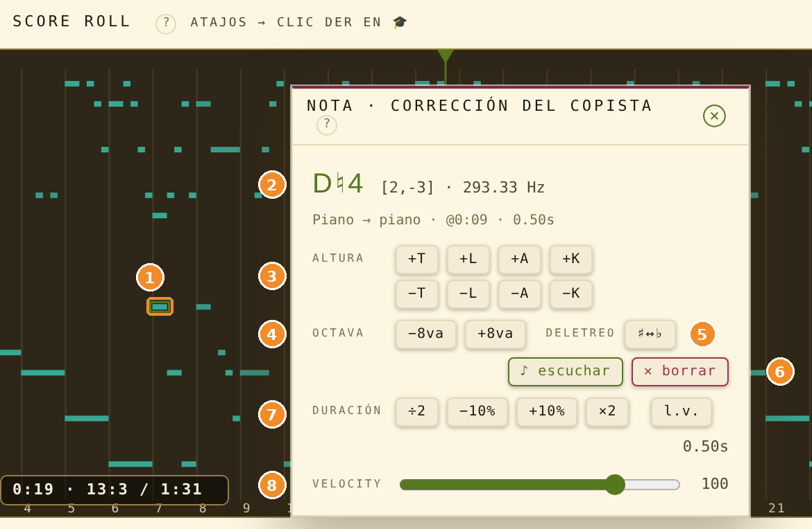
- De naam ②: de noot met haar octaaf (D4 is de D net boven de centrale C van de piano). Ernaast haar plaats in het Pythagoreïsche rooster [kwinten, octaven] en haar frequentie in Hz. Eronder: de track, het instrument, wanneer ze klinkt en hoe lang.
- TOONHOOGTE ③: de + gaan omhoog en de − omlaag. T = een hele toon. L = limma, de halve toon die de letter verandert (C → B). A = apotome, de halve toon die de letter houdt en het voorteken toevoegt (D → D♯). K = een komma: de buurnoot op een komma (A♭ +K = G♯).
- OCTAAF ④: −8va en +8va verplaatsen de noot een octaaf omlaag of omhoog.
- SPELLING ⑤: ♯↔♭ wisselt A♯ voor B♭ (of omgekeerd). In de Pythagoreïsche stemming zijn dat twee verschillende noten, een komma uit elkaar: kies degene die de muziek vraagt.
- ♪ beluisteren ⑥ speelt de noot alleen. ✕ verwijderen haalt ze uit de kopie (een MIDI-bestand brengt soms noten te veel mee).
- DUUR ⑦: ÷2 de helft, ×2 het dubbele, −10% en +10% voor fijne aanpassingen. l.v. = laten klinken: de noot wordt niet gedempt.
- VELOCITY ⑧: hoe luid de noot klinkt, van 1 (heel zacht) tot 127 (heel luid).
Om veel noten tegelijk te verbeteren: Shift + slepen over de roll neemt een hele passage en past er hetzelfde op toe. Het venster sluit je met ⊗.
Zo weet je dat het gelukt is: elke wijziging klinkt meteen, de naam wordt bijgewerkt en het woord bewerkt verschijnt. De correctie gaat mee in het MMF als je het bewaart.
Bewegen over de rol
Ctrl + scrollwiel zoomt in of uit rond de cursor. Eenmaal ingezoomd: scrollwiel = op en neer door de toonhoogten · Shift + scrollwiel = vooruit en achteruit in de tijd · de achtergrond slepen = de weergave verplaatsen. Met het hele stuk in beeld kan het wiel nergens heen: zoom eerst in. Dubbelklik op een lege plek om terug te keren naar het hele stuk; WORK en MOVEMENT, bovenaan, kiezen wat er getoond wordt. Een klik op een lege plek verplaatst de cursor daarheen; sleep de ▼ van de cursor om door het stuk te bladeren.
De A–B-loop · rechtsklik
Rechtsklik op de rol: Set A here en Set B here. Het deel wordt gearceerd en het transport speelt het in een lus. Sleep de vlaggetjes A en B om ze bij te stellen; clear A–B pins verwijdert ze. Om precies op een maatstreep te markeren, zoom je eerst in met Ctrl + scrollwiel.
⭳ export · in delen opslaan
De knop ⭳ export in de kop van de rol opent drie wegen. Export by instrument…: vink de tracks aan die je wilt (bijvoorbeeld maar één hand) en het bereik: Work, Visible range of A–B section (zichtbaar wanneer er A- en B-pinnen zijn). Export selection: de noten die je met Shift + slepen hebt gekozen. Export A–B section: elke track tussen A en B. split voices splitst een polyfoon kanaal in hoge, middelste en lage stemmen. Elke weg downloadt een .mmf.